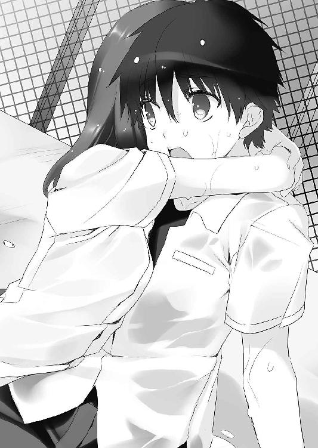

| おおコウスケよ、えらべないとはなさけない！2 (富士見ファンタジア文庫) | |
| 竹岡 葉月 | |
| 富士見書房 (2012) | |

おおコウスケよ、えらべないとはなさけない！２
竹岡葉月

富士見ファンタジア文庫
本作品の全部または一部を無断で複製、転載、配信、送信したり、ホームページ上に転載することを禁止します。また、本作品の内容を無断で改変、改ざん等を行うことも禁止します。
本作品購入時にご承諾いただいた規約により、有償・無償にかかわらず本作品を第三者に譲渡することはできません。
本作品を示すサムネイルなどのイメージ画像は、再ダウンロード時に予告なく変更される場合があります。
本作品は縦書きでレイアウトされています。
また、ご覧になるリーディングシステムにより、表示の差が認められることがあります。
口絵・本文イラスト 奥村ひのき
ドットキャラ製作 今野隼史
こんにちは。わたしの名前は、殿村クララ・アーベントロートです。
ながくて、よみづらくて、ごめんなさい。
わたしのおかあさんがドイツのうまれで、わたしをうんでから日本人のおとうさんと結婚したので、こんなにながい名前になってしまいました。ごめんなさい。でも英語とかはなせません。ごめんなさいがっかりさせて。
えっと......わたしのおともだちについて、話そうとおもいます。
ひとりめは、ホタルちゃんこと『天野井螢』ちゃんといいます。
わたしは中学校で、ホタルちゃんのいちばんのおともだちでした。
学校の図書室にいつも出入りして、そこで本をよむのがすきでした。わたしもホタルちゃんも、好きな本のジャンルはちがいましたが、本が大好きだったのです。
わたしたちは、なかよしこよしのふたり組みでしたが、そのうち別のおともだちができました。ツガくんこと『津賀昴介』くんと、オキハラくんこと『沖原良夜』くんです。
グループ名は、ホタルちゃんの命名で『東中図書室友の会』といいます。
あの、ええと、ごめんなさい。ホタルちゃんのネーミングセンスは、ちょっと夢見がちでドクトクなんです。でもツガくんの方は、ホタルちゃんのことがすきだったようです。
ホタルちゃんがいなくなってしまってから──そういなくなってしまったのです──わたしはツガくんに本をかしてあげるようになりました。
ホタルちゃんのかわりになんですけど、かわりでよかったんです。
だって、わたしは口べたで、すぐに緊張してしまって、とにかくいろいろなところがダメダメで、それならツガくんのそばで、ホタルちゃんが帰ってくるのを待っていられれば、たぶんそれでじゅうぶんだったんです。
満足、だったんですよ......。
──高校で、『彼女』にあうまでは......。
最近の心配事についても話しましょうか。
たとえば朝の通学路です。
あるくひとの邪魔にならないよう、道のはしっこはしっこをあるいているわたしの背中を、いきなりたたくような男の子といえば、ツガくんぐらいしかいません。
「............あっ、あの、お、おお、おはよう......ツガくん......」
「そんな毎度びびんなくてもいいじゃねーかよ......誰も取って食わねえから」
「ご、ごめんね。ごめんね。ごめんね」
「本、また持ってきたから返そうと思っただけだよ」
ツガくんはむすっと怖い顔で言って、リュックサックから文庫本をとりだします。
わたしはあやまりたくなりますが、そうするとますますツガくんがおこりますので、わたしはできるだけちいさくなっています。ああ本ですね。わかりました、たしかにうけとりました。
「これでラストだっけ？ 借りてたスティーヴン・キング」
「うん。たぶん......」
「やっと次のが借りられるな」
ツガくんが、ちょっとだけわらいました。わたしもほっとしました。
中学校のころの、本なんてまったくよまなかったツガくんが、うそみたいです。これ、ぜんぶホタルちゃんの影響で、今のツガくんは、本が好きの読書人間なんです。
わたしは、そんなツガくんのお手伝いができればって。そうおもっていました。
「あ、あの、次は、『ドリーム・キャッチャー』と、『クリスティーン』がよかったんだっけ......？」
「あ、それなんだけどな。も一つ気になったのがあって──」
中学校からつづく、おだやかなやりとりです。でもなんです。最近のわたしたちは──。
「ぐっもーにん、コースケ！」
「ぐえっ」
ツガくんが、カエルさんみたいな声をあげました。
そしてツガくんのうしろから、ホタルちゃん──いいえ、ホタルちゃんにそっくりな女の子が、ひょこっと顔をだします。
「あ。トノムラさんも、おはよーございます」
ツガくんの顔つきがかわりました。
「宮沢！ おまえいちいちラリアットしねーと挨拶できねえのかよ！」
「急いでるんですよー。数学であたるんですけど、ロッカーにガイド忘れてきちゃいまして」
「だったらさっさと行けって」
「うぃ。りょーかいです」
足踏みしていた女の子は、わらってまた走りだしました。
見た目はほんとうにホタルちゃんにそっくり。でもホタルちゃんじゃなくてちがう子です。一年Ｃ組、ミヤザワさんこと『宮沢彗』さんといいます。
「ったくあのアホは......」
ぶつぶつこぼすツガくんですけど、ツガくんだって、ここまでホタルちゃんそっくりのミヤザワさんのことは、きになっているはずなんです。無視をしようとしても、最後はおいかけてしまうような場面を、わたしはなんども見てきました。
「......なんだよ、殿村。なんかいいたいのか？」
「..................ツ、ツガくん、ミヤザワさんのこと......すきなの？」
「はあ？ んなわけねーだろ」
わたしの一世一代の質問も、ツガくんはばっさり切り捨ててしまいます。
でも本当でしょうか？ 本当にそうなんでしょうか？
「ちょっとコースケ！ どうしましょう助けてください！」
昇降口の前で、ミヤザワさんが叫びました。
ぱっと顔をあげる、ツガくんの反応のはやさといったら。電光石火です。
わたしに「いくよ」のひとこともなしに、走り出してしまうんですからひどいです。
「──今度はなんだ！」
「ペンケース忘れました。し、宿題が！」
「なに考えてるんだお前はっ」
「シャーペンめぐんでください！ 芯と尻消しゴムつきのやつ！」
「わかった。わかったから張り付くな！」
「コースケー、今だけあいしてますよー」
「今だけかよ！」
「あは。愛は物でも買えますからネ」
「シャー芯いっぽんぶんの愛か！ すげえな！」
わたしは、ホタルちゃんとやくそくしました。いっしょに星南高校にいこうねって。
なのに、その高校で、ツガくんのとなりにいるのが、ホタルちゃんじゃなくて、そっくりさんのミヤザワさんってどういうことですか？
「またやってるよ、あの二人。仲いいよねえ」
たまたま耳にはいるセリフさえ、わたしには痛いんです。
まわりにいる子たちは、あたりまえみたいにツガくんとミヤザワさんがじゃれあっているのを笑ってみてるんです。みんなホタルちゃんをしらないから。
「......ちがうよ。そうじゃ、ないよ......」
これはまちがっているのに。ほんとうじゃないのに。
ツガくんの隣に、このままそっくりさんのミヤザワさんが居続けたら、ホタルちゃんはどうすればいいと思いますか？ 戻ってこれないじゃないですか。
（どうしよう......）
困って、気持ちばかりあせって、だけどなにも言えない。わたしは今日も弱虫です。
わたしはかわりたかったんです。びくびくと臆病で、口べたで、すぐに赤くなってしまうわたしじゃなくて。言いたいことを、ちゃんと言える自分になりたかったんです。
いわばこれは、うまれかわるための儀式です。
三つ編みをほどいて、お風呂場の鏡のまえに立ちました。そこにいるのは、あたらしいわたし。
強気で、無敵で、攻めまくり。
新生・殿村クララ・アーベントロートの出陣です。
１
学校というやつは、なぜにこうも生徒を休ませてくれないのだ。
津賀昴介は、苦々しく黒板をにらみつけている。
高校最初の定期テストが終わってほっと一息していたところだというのに、黒板には『体育祭の種目決め』などという物騒な文句が書かれている。よろしくない。まったくもってよろしくない。
教壇には、一年Ｃ組体育委員、和歌田唱子の姿があった。
「はーい注目ー！」
クラスでもメイクやや濃いめ、マスカラ命のジョシコーセーだ。昴介のことも、一時はヤンキー扱いで激しく怖がっていたが、彗の入れ知恵を境に、『津賀閣下』というあだ名を付けて呼んでくるようになった。
今日も眼力たっぷりのまつげをばちばちさせて、唱子は内容を説明している。
「まずはー、全員参加の種目を説明するよー。男子は騎馬戦と棒倒し、女子は組別ダンスと玉入れが強制参加ね。他の種目はスウェーデンリレーと綱引きと障害物競走と......男子と女子で種目が違うのもあるんで、プリントよく読んどいてってことで。それで、最低でも一人一個はエントリーしなきゃいけない計算なんでー」
そういうわけで体育祭だ。なんでもこの星南高校は、六月頭に体育祭を行うのだという。生徒はＡ組連合からＦ組連合までの三学年縦割りチームに分かれ、得点を競い合うらしい。
思い浮かんだのは、『かったるい』の五文字だった。『しちめんどう』の六文字でもいい。
春の遠足、定期テストと来て、体育祭とはてんこ盛りに過ぎるだろう。個人競技に団体競技に、そんなに盛って忙しくさせなくても、つつがなく夏休みまで過ごしてやるというのに、つくづく信用がないらしい。
中二で団体行動成分を使い果たした昴介は、回ってきたプリントに線を引き始める。見所はもちろんどれだけ手が抜けるかだ。
（......あーくそ、楽なのはどれだ？ 綱引きとかすぐ終わりそうだな。さぼってもばれなさそうだし）
ぐるりと『綱引き』に丸をつけ、これで良しと思った瞬間だった。
「でもねー。あたしも考えたんだけどー、どーせ普通に希望者募っても、綱引きとか楽そうなのに希望が集まるのはわかりきっちゃってるんだよねえ。だからもう独断と偏見でコーディネートさせてもらいましたー。裏面がその結果でーす」
ボキィッ。
シャーペンの芯が折れた。
「はあっ!?」
「それって横暴じゃね!?」
「特権乱用！」
「なにを根拠に！」
教室に怒号が上がるも、マスカラ唱子は負けなかった。かえってプリントの余りを教卓にたたきつけ、絶叫。
「あーもーうるっさい！ うるっさいうるっさいうるっさいうるっさい！ 根拠はスポーツテストの結果とあたしの第六感っ！ マイ・シックスセンス！ 文句いわない！ てゆーかこれは一年Ｃ組的に最強の布陣なの！ これでエントリーすればぜったい勝てるからっ！ Ｃ組連合優勝しちゃうから！ 間違いないから！」
拳を握って力説である。
──こいつ、ぜったい中学時代の部活は体育会系だな。
ブーイングの嵐の中で、昴介は確信する。今でこそギャルっぽく取り繕っているが、中身の思考回路は昔のままと見た。チームの勝利が自分の幸せになるタイプ。
「おー、和歌田。えらい元気だなー」
「先生は黙っててチョーダイ。せっかくやるからには勝ちたいっしょ！ みんなで力を合わせて勝ちたいっしょ！ 二年Ｃ組と三年Ｃ組の先輩とも話したの。みんな協力してよ！ 勝ちにいこっ！ ファイッ！」
いや勝たなくてもいいじゃん。なんで勝たなきゃいかんのよ。
「コースケは、スウェーデンリレーに出るんですかー」
ふと横を見れば、初恋の少女がこちらを見下ろしていて、ドキリとした。
──天野井、螢。
華奢な肩からこぼれ落ちる、癖のない黒髪。卵形の小さな顔に反して、黒目がちの瞳は大きく澄み切っている。素朴なラインの眉が、人形のように整った外見に色を添え。
でも──違った。
（馬鹿。間違えんな）
螢ではなく宮沢彗が、プリント片手にこちらを見下ろしていた。
「なんかコースケって、いつも初めて見るみたいにびっくりした顔しますよね。毎回わたくしの顔わすれちゃうんですか？」
「んなわけあるかよ」
とっさに言い返しながらも、内心胸をなでおろす自分がいた。
忘れているのではなく、まったく同じ顔の別人と錯覚していたなど、言えるはずがなかった。
その髪型も、顔立ちも、眉の太さ一つ取っても、それは天野井螢の特徴そのものだったが、彼女はここにいないのだ。
本が好き。恋愛が嫌い。昴介と一緒に星南高校に行こうと言っておきながら、中二の冬を前に家族ぐるみでいなくなってしまった幻の彼女。
かわりに星南にいたのが宮沢彗である。
顔は同じ。しかし性格は正反対。入学早々、教室にクラッカーをぶっ放した帰国子女で、昴介はさんざん振り回された。
──俺、お前のこと嫌いだ。
──そっくり同じお言葉、お返ししますよ？
最後は雨の中、遠慮なしに本音をぶつけてやった。よく喋りよく笑い、そして噓もおせっかいも多いのが宮沢彗だった。このどうしようもないイタズラ小僧かチェシャ猫めいた顔つきを、螢と比べること自体が間違っているわけで。一刻も早く慣れるしかなかった。
しかし待て。誰が何に出るって？
「あのさ......お前さっき、なんて言った？ スウェーデンリレーが俺？」
「あれれ、見てないんですか？ これ、コースケですよね？」
屈託なくプリントを見せられ、昴介は近視気味の目を細めた。
「たいへん。がんばってくださいねー。クラスで一名ですから責任重大ですよー」
「............うっ」
──本当だった。
彗は笑っているが、昴介はとても笑えなかった。
スウェーデンリレーは、出走者ごとに走る距離が異なり、トップバッターは百メートル、アンカーにいたっては四百メートルなどという距離を全力疾走させられるのだ。きつい。面倒。責任も多い。イコール冗談ではない。
「そーそー、閣下ーっ！ 津賀の閣下にはがんばってもらうからねー！」
和歌田唱子が、はかったようなタイミングで昴介たちのところにやってきた。
昴介は立ち上がり、プリント片手に抗議した。
「おい和歌田、これマジかよっ」
「マジにきまってるじゃん。ていうか閣下って、中学でなんか運動部入ってたよね？ そういう感じのタイムだよね？」
唱子はスポーツテストの結果を握っているのである。
「......いや、入ってたけど辞めたっつーか」
「うんうん。やっぱそーだよね。もー、案外つかえるじゃん閣下ー。むっつり一人で本読んでる分際で。あ、ごめん毒入っちゃった今のナシね」
いいや絶対忘れないぞ。
恐怖の大魔王キャラが、いつしかネタキャラに落ち着いていく感がある。無意味にドン引かれていた頃よりは、マシなのかもしれないが......。
苦虫をかみつぶす昴介に、彗まで興味津々だった。
「へー、そーなんですかコースケ。なんの部活やってたんですか？」
「柔道、剣道、大穴で相撲部とか！」
「わお。スモウレスラー」
「野球だ！」
なんでここまで力説せねばならないのか。唱子と彗は、「やきゅううううう！」と、笑いのツボに入ったように手を取り合って大受けしている。
「ねね、ボーズだったのボーズ」
「だからなんだよ」
「ううん、べつに。だったらなんで今はー、どこにも入んないの？」
「どっか入んなきゃいけねーのかよ」
「まあね、それ言ったらあたしもそうだけど。でも入ってたんならトラックちょっと走るぐらい楽勝でしょ。ここはＣ組のためにがんばって、津賀昴介閣下！」
「いやおい！」
「みんなー、閣下に続いて気合いだよー！ 二年と三年の先輩たちの顔潰さないように、目指せＣ組連合優勝だからねー！」
過去に一度でも運動部に入っていた人間は、引きこもることすら許されないというのか！ そう言いたいのか和歌田唱子！ お前は無情だ！ 差別主義者だ！ 罪を憎んで人を憎まずじゃないのか！
昴介がいくら思おうと、本性丸出しで燃えている唱子は、もはや反論不能のようだった。
呆れて腰をおろした。
「......しんじらんねー和歌田......」
「でもべつにいーじゃないですか？ わたくし本気で走るコースケ見てみたいですよ？」
彗は、昴介の机にもたれながら目を細めている。
にやにや、にやにや、いつものいたずらっぽいチェシャ猫笑いだった。
「......たのしそーだな、宮沢も」
「ええもう。ニッポンの運動会ってわたくしはじめてですから。エンジョイさせてもらおうと思ってますよ？」
「そう言って人が四苦八苦してんの楽しむタマだろ」
「あは。ばれました？」
ほら。こうやってときどき化け猫の皮が剝がれてくれる。
昴介は、そのまま毒を吐くかわりに、プリントを見直した。
「そっちはエントリーなんだ？」
「え、わたくしですか？ ムカデ競争というのに出るそうです」
「ほー」
「よくわからないんですけど、これってどういうゲームなんですか？」
「お前それ知らないってやばいぞ。そのまんまだよ。ムカデ捕まえるんだ」
「え」
「いいか。白線の先にビニールプールがあって、よーいどんで走ってプールいっぱいにうごめくムカデを割り箸でつまんで」
「い、いやいやそれはちょっと、ノーサンキューと言いますか！」
「サンキューもトッキューもオバキューもねえ。百年近い歴史に文句言うな。こっちじゃ競技用のムカデ揃える専門業者もいるんだ。種類はホンシュウクロムカデが一般的だな。十匹越えたあたりでいろいろ麻痺して手づかみ鷲づかみ躍り食い」
「ひにゃ────────っ！」
「むっしゃむっしゃばっりばっり......」
「むり！ むりむりむり！ いろいろむり！」
「噓だけどな」
涙目で鳥肌のぷつぷつをかきむしっていた彗は、三秒ほど固まった後、ぷっと頰をふくらませた。
「コースケ！」
「おあいこだろ」
騙し騙され。試し試され。
たぶん仲良くなんかない。この先も甘い関係になんかならない。
互いにいらないと言った人間と、なぜか普通の会話は続いている。
彗が今まで通りだから。だからこちらも今まで通り変わらない。
今まで通りのことを言い合って、その裏を読み合うことに密かな充実感を──覚えていないはずだ。
「いけずのノータリン」
「オホメノコトバアリガトウ」
──なんでもいい。俺は彼女のことが嫌いである。
これさえ間違えずにいればＯＫなのだ。
（──お、ラッキ。筒井康隆。『ロートレック荘の殺人』じゃん。あるとこにはあるもんだな）
図書室の書架に、思いがけない拾い物をみつけた時ほど楽しいことはない。
昴介は世紀末の画家、ロートレックの画が入った装丁を引き抜き、心の中でニヤリと笑う。長期の貸し出しから戻ってきたのか、新しく仕入れたのか、あとで聞いてみるとしよう。
意気揚々と後ろを向くと、棚の隙間にピンクの肝臓が置いてあった。
（ＯＨ！ モツ！）
あやうく絶叫しそうになった。
昴介は口に拳をつっこんだまま、まじまじと目をしばたかせる。
肝臓は肝臓でも、広口の瓶に入ったプラスチック製の肝臓だった。生じゃない。ひとまずはその事実にほっとする。
瓶の中は半透明の水で満たされ、明らかにホルマリン漬けを狙った演出である。
なんで【文学】の棚にモツが飾ってあるのだと思うが、横には『小説作法』『きらきらひかる』『ＩＴ』などといった小説が、面陳列で置いてあった。どれもアルコール依存症がテーマらしい。
「だから肝臓かよ」
すばらしく悪趣味なディスプレイプランである。
そしてがっくりしながら【医療】の棚まで行けば、予想通りに肝臓が抜き取られた人体模型像が飾ってあるのだ。どこの誰がつけてやったか知らないが、星南のネクタイと、黒の靴下だけは身につけている愛され模型君だった。こちらの棚の特集は、『ブラックジャックＶＳおばあちゃんの知恵袋』らしい。
──相変わらず、この図書室はいかれている。
ここは星南高校の旧校舎の一角にあり、通称『第二図書室』と呼ばれている。
この高校には図書室が二つあり、一つは最新設備が整った本校舎の図書室、『第一図書室』だ。そしてもう一つがこの第二図書室。有志の本好きが集まって運営している私設図書室である。
かの図書館学の父、ランガナタン氏が提唱した図書館五原則のうちの一つに、『図書館とは成長する有機体である』という一節があるそうな。
本の新陳代謝を活発に、最適な蔵書を常に目指せという意味合いがあるらしいが、歴代の先輩方は、この五原則の一節にだけ大いに着目してしまったようだ。
第一図書室ができるにあたり、旧校舎の図書室が払い下げられるとわかるいなや、借りたい図書館とはなんぞや、進化した図書館とはなんぞやと野望を追求。その結果、この第二図書室はなんでも展示し、なんでも貸し出すカオスワールドになってしまったというわけである。
普通の書架の棚に、小説と並んで楽器やボードゲームが置いてある図書室などここだけだろう。そして棚には展示品の肝臓が転がる。あとは膵臓とか腎臓とか。
（あの肝臓、頼めば貸してくれんのかね）
津賀昴介、じきに十六歳。趣味は読書。
何を借りたいかが決まっている時は別だが、おおむねこのカオスな空間で、常連たちとだべっていることの方が多かった。
「にしてもさ──個人種目が決定済みってどーいうことだっての。横暴にもほどがあるぞうちの体育委員」
書架から閲覧席に戻ってくると、昴介はさきほどまでの話の続きをした。
にっくき体育祭の話である。ホームルームでの理不尽を思いだし、あらためて文句がこみ上げてくる。
「ああいうのはさー、やる気ある奴でやればいいじゃねーかよー。俺を巻き込むなー。引退した老兵に銃を持たせるなー。死ぬぞー」
「せめて戦歴が華々しかったらよかったよね、昴介」
穏やかな声は、一年Ｄ組、沖原良夜だ。
こちらは昴介の中学時代からの友人である。
見た目だけならさわやかなイケメン兄さんなのだが、中身は──あえて突っ込むまい。その時々で、趣味や興味がころころ変わる宇宙人とだけ言っておこう。
昴介はしかめっ面で訊ね返した。
「どーせ三回戦に出たことなかったよ。お前は何にエントリーしたんだ？」
「ん？ 綱引きだよ」
「お前に！ お前に！ 俺の気持ちがわかってたまるか！」
「痛いよ昴介、針刺さるよ」
怒りにまかせて肩を揺さぶれば、良夜が声を上げた。
良夜は閲覧席のテーブルに、カラフルな布と裁縫箱を広げていた。
普通の図書室ではとうてい許されない光景かもしれないが、第二図書室では教本片手に針を動かすぐらい、ごく普通のことだった。いつだって誰かが何かをやっている雰囲気がある。
「それ、今のお前のマイブームなのか？」
「いや、違うよ。ちょっと先輩がたに頼まれてさ......」
「沖原ー。さぼってないで手ぇ動かしてー」
昴介たちは、声のしたテーブルを振り返った。
そこには上級生の女子生徒が二人いた。三年の名倉空海に、二年の物集月穂だ。
どちらも第二図書室の常連で、二人そろって針に糸で縫い物をしている。
空海などは手芸が趣味で、本より針を持つ場所が欲しくていりびたっているという話だった。そんな彼女はともかく、月穂も同じテーブルで針を握っているのは珍しい。月穂は借りるよりも、裏方のカウンター業務が好きな人だったからだ。
昴介たちと目が合うと、月穂はいつものように、ふわりとやわらかく笑んだ。だがその頰も瘦せたというか、疲れている感じもした。このままでは素敵なおっぱいにも支障が出そうである。
対する空海は、小学生もかくやというミニマムボディに不釣り合いな、冷めた顔つきでこちらを眺めやる。
「津賀もね、今さら体育祭ぐらいでガタガタ騒ぐんじゃないっての。嫌なら嫌で逃げる手段くらい確保すんのがジョーシキじゃん？」
「常識......っすか？」
「そうそう、うちらを見な？ 一種目でも多く補欠に混じるためにね、血のにじむよーな労力を費やしてるわけよ。ほら鉢巻きいっぱい」
彼女たちのテーブルの上には、山のような布が置いてある。色は赤と黄色。よくよく見れば、それは全て裁断済みの長い布きれだった。
「もしかしてそれ......鉢巻きになるんすか？」
「そう。全部手縫いすんの。クラス全員分」
「うげえ！」
「ふーん。言ってくれるじゃん。でもね、それが補欠の交換条件なの。楽すんのも楽じゃないんだって。わかるよね物集？」
月穂は、アップヘアからこぼれる後れ毛もそのままに、深々とうなずいた。
「ええ......わかりますクーカイ先輩。自分の運動神経のなさを晒すぐらいでしたら、これぐらい当然の投資です。私はあの祭に参加する資格がありません。私はもう同じ過ちを繰り返しません。ノーモア体育祭......」
「物集、寝たらダメ。寝てもいいから針は動かして。まだ団旗とポンポン作りが残ってるから」
「はい......っ」
「爪の間に針指してでも今日中に二十本作って納品だかんね」
雪山デスマーチかよ。
今にも寝落ちしそうな月穂を、空海がいましめる。いくらなんでも大げさすぎないだろうか。
「津賀、いま何もそこまでとか思ったっしょ」
「い、いや俺は──」
ぎくりとする昴介に、空海は椅子に座ったまま、縫い針の先端を向けてきた。やめましょうクーカイ先輩。先端恐怖症でなくとも怖いです。
「本当に出たくない奴ってのはね、ここまでするもんなわけよ。魂の全てをかけて拒否るの。出たくない。足を引っ張りたくない。めんどくさい。運動と名のつくものに関わりあいたくない！ 石灰の匂いを嗅ぐと胸がむかつく。ピストルでいっそ撃ち抜いて。明日学校が燃えてるといいな。ふぁっきん体育会系！ 何が体育祭。お前らリア充だけで祭りやがれ！ そこまで思えない津賀、あんたはニセ！ ニセ文化系！ てゆーか野球部なんてスポ根な部活が一年以上つとまった人間に、運動音痴ーズの気持ちがわかってたまっ」
感極まった空海は、その場で胸をおさえ、大きく深呼吸をした。
「............たまるもんですかー」
いやもうなんかいろいろすいませんという感じである。
確かに彼女たちの意気込みに比べれば、軽い気持ちでぼやいてしまったかもしれない。スウェーデンリレーと交換条件で鉢巻きを一人で縫えと言われたら、やはりリレーを取ると思うのだ。寝られるし。早く終わるし。
「まあそこまで言わずとも、慣れない空気を不快に思う気持ちはわからなくもないぞ、ＴＫ！ ツガ・コースケの略だ！」
そこに登場したのは、銀縁眼鏡の長身の男だった。
赤星忍。この第二図書室の常連の一人で、本当の意味で最年長の三年生だ。
通称『長老』である。
忍は、小脇に抱えた鞄からルーズリーフを取り出し、テーブルの空海に差し出した。
「名倉大師！ 例の作戦の修正案を作ってみたぞ」
「ああそう？ あれよりアホなのはもう出ないと思うけど」
「我ながら傑作だ！ ハレルヤ！」
昴介は、そんな忍に話しかけた。
「あの、赤星長老。長老なんかも、体育祭さぼるために、裏方仕事とか引き受けてるんすか？」
「はっはっは。私は風雪の戦士。表の運命に逆らおうとする情熱はとうの昔に失われたが、ガイアの導きのもと、この楽園の伝統を守るべく行動を開始しているところだ」
この人の使う日本語は、半分わかればいい方だと思う。ガイアがなんで伝統がなんだって？
「よーは『日和見でそこまでがんばる根性はないけど、やることはある』ってこと」
空海が、ルーズリーフから目線を離さず言った。
「やること？」
「どーでもいーっちゃいー伝統なんだけどね」
「そうなの。この図書室を利用してる誰かが、体育祭の期間中に何かサプライズを仕掛けるんですって」
月穂も補足して説明してくれた。
「サプライズ、っすか......」
「ええ。ほんと小さいことでいいらしいんだけど」
「つまり！ さわやかな汗をかき青春を謳歌する体育会系の祭典に、一矢報いてほくそ笑む伝統だ！」
「暗すぎっすよ」
「我々は暗い！」
ああ、言い切っちゃったよどうしようもないよ。
本を読み始めて二年弱。昴介には、まだまだ知らないことが沢山あるようだ。
「あーあ。早いとこ殿村こないかな。したらあの子にも手伝わせるんだけどな。鉢巻き作り」
「そういえば最近来ないわねえ、クララちゃん。沖原君、なにか聞いてる？」
「いえ、特にはなにも──」
何より昴介は、空海たちがそこまで体育祭という行事を憎み目の敵にする理由も、血反吐をはいてまで裏方に回る理由も、まだ本当にぴんと来たわけではなかったのである。
そう、ここで月穂の悲鳴を聞くまでは。
「──や」
ホラー映画も真っ青な悲鳴が、月穂の口からほとばしる。
「いやああああ！ クーカイ先輩、き、きました。彼らです！」
「きたか──」
月穂が針を取り落として震える。空海が椅子から立ち上がる。
昴介は、何事かと振り返った。そしてぞっとした。
第二図書室のドアが十センチほど開き、そこから泥まみれの茶色い手がのびていたのだ。
（ゾンビ!?）
学園パニックホラーのはじまりかと思った。
ゾンビは半身をねじこむように、図書室のドアを押し開けてくる。昴介は、思わず一歩下がった。視界の端に映ったのは、放置されたままの箒の柄だ。いざとなれば、あれをつかんで内角高めをフルスイング。それしかない。
（く、来る）
『バイオハザード』や『屍鬼』の名場面が、走馬燈のように頭をよぎっていく。
しかし現れたゾンビは、ただのゾンビではなかった。
全身泥まみれで擦り傷も多かったが、Ｔシャツに学校指定の短パン、そしてラグビー用のヘッドギアをつけていた。どう見ても星南高校の男子生徒である。
「解せぬ......なぜここにはこんなに人が多いのだ」
「本も多いがな」
後から後から、似たような出で立ちの男たちが現れる。部屋の中が一気に土くさくなった気がした。
「そこの乙女たちよ。練習に出なくていいのか？」
「わっ、わっ、私たちは補欠ですから！ この子も」
「そうです鉢巻き作ってます！」
月穂と空海の二人は、そろってクララもびっくりな震え声で答える。
ゾンビ戦士たちは、それで納得したようだった。
「うむ。励むがいい」
「戦士が戦う環境を整えるのも必要だからな」
そのままぐるりとあたりを見回す。昴介は、ごくりと唾を飲み込んだ。不思議なことに、赤星忍の姿は、すでになくなっていた。
──あとはもう、昴介たちだけなのだ。
土だらけの顔から覗く両目が、こちらをとらえ、らんらんと光っている気がした。
ぶっちゃけ、怖い。むちゃくちゃ怖いです先生。
「ここに、Ｃ組連合所属の津賀昴介がいると聞いたが、お前か？」
「ここに、Ｄ組連合所属の沖原良夜がいると聞いたが、お前か？」
昴介と良夜は、蛇に睨まれたカエル、ゾンビに襲われようとするモブキャラも同然だった。生まれたての子鹿のように無力だった。
こんな野武士か狂戦士もかくやという人間が、同じ学校にほいほいいていいはずがない。
噓だろう。誰か噓と言ってくれ。
「今日は棒倒しの練習があると告知していたのに、なぜ来ない」
「や、その。あの」
昴介は、すがるように良夜に助けを求めた。しかし友の方はすでに、死刑台に登る死刑囚のように澄み切ったまなざしをしていた。ああ、これはだめだ。悟りだ。念仏だ。
いっさいの身を仏に預けよということらしい。
（わかったよ良夜）
一緒に成仏しよう。
昴介と良夜は、どちらともなくゾンビ戦士たちに向き直った。ズボンの縫い目に指先を合わせ、おじぎの角度は腰から倒して三十度。
「「すいませんでしたあ！」」
ゾンビ戦士たちが、「よく言ったあ！」と、そんな昴介たちの襟首をひっつかむ。
「まだ制服のままとはいい度胸だな。さっさと着替えて校庭に集合！」
「すいませんでしたあ！」
「棒倒しは一に体力、二に体力！」
「すいませんでしたあ！」
「三、四がなくて五に体力！」
「すいませんでしたあ！」
「歩くな走れえ！ 駆けあぁし！」
「すいませんでしたあ！」
「ファイトォ！」
「ふぁいとおお！」
そのまま校庭に出るまでどつかれ続けた。
校庭には、昴介たちと同じように逃げまどう一年生と、目の色が変わったゾンビ戦士たちが沢山いた。
「我々Ｃ組連合の目標はなんだ！」
「ゆ、優勝です！」
「そうとも。昨年の優勝は、紅組ことＡ組連合であった！ これは我々Ｃ組連合が、団体競技で星を落とすという痛恨の失態をしたからに他ならない！ すなわち棒倒しを制する者、勝利を制する！ そのつもりでことにあたれ！」
Ｃ組連合所属の戦士が、高らかに棒倒しの目標を叫べば、対角線上の一角では、Ｅ組連合所属の戦士が騎馬戦の気勢を上げる。
「──おらおらどうしたぁ、腰が引けてるぞ、貴様ら！ そこにある的をＢ組だと思ってぶちかませ！ 親の仇と思って全力を出せ！ なんだその反抗的な目は。口を開く前と後にサーと付けろ！ 優勝すればガッツがあると認めてやる！」
外周を支配するＤ組の戦士は、トラック内側でストップウォッチを手放さない。
「Ｄ組所属、あと十周ぅ！」
さらにＡ組連合。
「いいか。紅組、連覇！ これ以外の単語はすべて忘れろお！ 連覇ぁ！」
所属の一年生が、悲痛な声で「連覇ぁ」と叫ぶ横で、Ｆ組連合戦士。
「いいぞ次、一年入れ！ 休むなこの○○×△×が！」
放送禁止用語が入り交じって正確に伝えられない。
どれもこれも、ＡからＦまで、各縦割りチームの幹部集団という話だった。
その内訳は、運動部に所属している人間が多いらしいが、必ずしも全員がというわけではない。『星南高校体育祭』という単語は、日頃温厚な生徒すらも勝利至上主義の鬼に変えてしまうようなのだ。
しごきの洗礼を受ける昴介たちは、棒倒しの練習と称してスクラムを組まされ、足もとがお留守だと言っては転がされた。
比較的身軽な昴介は、登り棒に飛びついてはよじ登る役の訓練もさせられた。棒の一番上には先輩のゾンビ戦士がいて、頂上に近づくと「しゃしゃしゃしゃしゃ」と奇声とともに蹴り落とされるオプションもついてくるのだ。
「ママァァァァ」
これは同じクラスのラスカル君こと勅使河原君の悲しい叫び。
まるで養豚場の子豚のようだった。しかし、ゾンビ戦士は手綱を緩めない。
「ママァァァァ」
今晩の夢に出てくるような声だった。
「──よし。まあいいだろう。まだ言いたいところはあるが、五分休憩だ」
ようやく休憩の許しが出た時には、先輩方と似たような泥具合になっていた。
昴介は、ぼろぼろになりながら水道の列に並んだ。
体育館脇で手を洗い、顔を洗った。そして再び校庭へ向かうところで、真っ黒いゾンビ戦士らしき人間が、手を振って近寄ってきた。
思わず身構える昴介だが、そのゾンビはＤ組連合でしごかれ済みの良夜だった。
昴介は、心底ほっとした。
「生きてる？」
「まあ、なんとか」
互いの無事をたたえ合い、どちらともなく脇の花壇に腰をおろす。
同時にため息がこぼれた。
「............こういうのは、僕向きじゃないなあ......」
「俺向きでもねーよ......」
文化祭のにぎやかなイメージが強くて、星南高校は文化系に力を入れている学校だと勝手に思っていたが、なんということはない。両方同じぐらいに力を入れた学校だったということだ。
文武両道。すばらしいモットーですねクソ馬鹿野郎。
（昔の悪夢を思いだすぜ......このエンドレスなしごかれ具合......）
野球部における愛と洗脳の日々。電信柱にぶつかってようやく解脱できたというのに。
「──女子はダンスかあ」
良夜がぽつりと呟いた。
昴介たちが座る目の前には、女子の団体競技である組別対抗ダンスの練習をしている集団がいくつかあった。
それぞれオリジナルのダンスを踊り、一般参加の投票で順位が決まるらしい。
コンポから流れる音楽にのり、お嬢さん方が踊っている姿は美しい。指導の厳しさはあったが、泥くさいゾンビ戦士に取り込まれそうな自分たちとはえらい違いのような気がした。
校庭の奥の方では、彗もいるＣ組連合が練習をしていた。
あちらは全員でフラダンスをやるようだ。
彗も周りの女子に倣って、右に左に手を動かしている。しかし、現状では優雅さのかけらもない。顔が真剣なだけに余計おかしさを誘う。
なんだろう。あの動き。ただ機械的にバタバタカクカク......ダンスではなく......モールス信号でもなく......。
（そうだ）
あれだ。
「手旗信号！」
「ん？ どうかしたの？」
「ぶははははは」
昴介は、ツボにはまって吹き出した。似ている。間違いない。後でからかうネタが増えたと思った。
「はいワン・ツー・スリー・フォー！ ファイブ・シックス・セブン・エイト！」
一方で、昴介たちに一番近い空間で練習している集団は、かなり激しい曲調のＲ＆Ｂをテーマにしているようだった。ハイテンポのリズムに乗せ、指導役の上級生がカウントを叫び続ける。一糸乱れぬ踊りが続く。一見しただけでもわかった。ここはかなり上位に食い込みそうだ。
「はいターン！ だめだめ、ストップ、ストーップ！」
と、いきなり上級生が、手を叩いて止まった。
音楽もぶつ切れになる。
「そこよそこ。一番後ろ。今さら遅れて参加ってどういうどういうつもり？ やる気あるの!?」
どうやら練習に遅刻してきた女子生徒がいるようだ。
上級生のお姉様は、汗もぬぐわず怒っている。さてさて、雷が落とされてしまった哀れな遅刻っ子の反応はと言えば──。
「ごめんなさい──掃除が長引いたんです」
ひとかたまりだった集団が、その声と一緒に左右へ割れた。
間からゆっくりと進み出てきたのは、輝かんばかりの大天使様だった。
（──うわ）
まぶしい金色。そこいらの日本人ヤンキーでは真似できない、本物のハニーブロンド。それがボリュームたっぷりの巻き毛となり、肩や背中を彩り波打っている。

薄手のＴシャツにスパッツという軽装でも、日本人離れした品とスタイルの良さは隠せない。カラーコンタクトいらずの青い瞳はぱっちりと見開かれ、口許には余裕たっぷりの微笑。ミケランジェロかフラ・アンジェリコか。まるで宗教画のような神々しさだ。
相手を寄せ付けない至高のウォーキングで、途中、肩の巻き毛をかきあげれば、ふぁさあっ、と金の粒と一緒に翼がこぼれ落ちるようだった。
「だれ、これ......」
「こ、交換留学生......？」
「こんな綺麗な子、いた......？」
ざわめきがやまない。
「殿村、さん......？」
良夜が、愕然とこぼした。昴介は本気で目をむいた。
──これが──殿村クララ・アーベントロートだと!?
少女が上級生の前で立ち止まる。昴介たちだけでなく、周りの女子生徒も固唾をのんで状況を見守る中、堂々と口を開いた。
「よろしくご指導いただけます？ 先輩」
それなりに派手で、それなりに目立つタイプのはずのお姉様も、このエンジェルオーラの前には手も足も出ない。畑の中のカボチャも同然だ。
「そ、そうね。わかったわ。それじゃあ最初から──」
「ああ、でも、その前に一つだけ」
天使様が振り返る。金色の巻き毛、ふぁさあっ。
「男の方の前で踊るのは、本番だけにいたしませんか。私......恥ずかしくて」
そんなことを言いながら、わざわざ昴介たちを見てくれるのである。
いきなりおはちがこちらに回ってきてしまった。
上級生のお姉様は、『ギッ』と刺し貫きそうな勢いでにらみつけてくる。
「あんたたち、どこの組の男子なの......？」
まるで覗きを咎められているような状況だ。周りの女子の目つきまで変わってくる。
しかし、気になるのは巻き毛の彼女。完璧だ。どこまでも華やかな天使オーラを振りまいていた。
殿村クララ・アーベントロートと言えば、メルヘンチックな三つ編みと、小動物めいたおどおどぶりが特徴のはずである。あの金髪を三つ編みにし、眉をハの字に倒し、おどおどびくびくさせればクララになる──なるのか──？
「昴介。やばいよ。今は退散しよう」
もう少しで見極めがつくと思ったのに、状況がそれを許さなかった。けっきょく後ろ髪ひかれながらも現場を後にするしかなかった。
しかし角を曲がれば、立ち止まって顔を見合わせる。
「どう思う？」
「どうって言われてもさ......」
こっそりと、来た道を振り返った。
巻き毛の彼女が、女子に取り囲まれていた。興奮気味な質問にも、余裕たっぷりの微笑で答えている。パーツの条件だけ見たら、確かにクララと言える感じだ。
「高校デビューにしたって、すごすぎねーか......？」
「いやあ。でも美人だよねえ。どこに隠してあったんだろ」
馬鹿と一笑にふせないあたりが怖かった。
「こりゃあ、明日から大変だよ......」
「大変って、どんな......？」
話し合っていた時である。
「ふはははははははははははははは」
心臓がもげそうになった。
「そこの脱走兵。貴様らの休憩時間はな、とっくの昔に終わったぞ──？」
いやあああああ。
後ろから、ゾンビ戦士に肩をつかまれた。昴介たちは、一気に涙目になった。
「あは。あははは」
「笑う元気があるなら大丈夫だな。ぞんぶんに励むがいい」
違うんですよおおお。
言い訳も許されず、練習場へ引きずり戻された。
そしていざ戻れば、恐ろしいゾンビ戦士にしごかれるエンドレス地獄だ。
「そうだ啼け、啼け、啼けぇ！ 良い声で啼いてこそ一流の棒倒しの戦士の証であるぞ！」
あまりの悪夢に、高校デビューなクララのことは、頭の端へと追いやってしまったのである。
『それは大変だったね、津賀君』
書架の踏み台に乗ったまま、螢が言った。
その手には、鮮やかな鳥の図鑑。蛍光灯の明かりが、彼女のセミロングに天使の輪を作る。図書室の天使様だ。
『練習かあ。運動会とかそういうの、私は苦手だったな』
そうなのか？
『うん。足、あんまり速くないし。もともと体育は苦手なの』
なんかそんな感じだ。
『あ、傷つくなあ。やっぱり鈍くさく見える？』
少しだけ拗ねた顔も可愛い。
『でもね、津賀君。わたしが一番苦手だったのはあれ。クラス対抗の大縄跳び』
縄跳び？
『そうだよほら。二年の春の運動会でやったでしょ。組体操とセットでいっぱい練習して』
ああ、あれな。思い出したぞ。
『しんどかったよね、あれ』
たしかみんなで制限時間内に、何回飛べるかってやつだよな。うっとうしいっちゃうっとうしかったな。
『うんうんうん。毎日練習するんだけど、私ったら一人でつっかかっちゃって、最後は針のむしろ。半泣き。みんなに迷惑かけるのは嫌なのに』
螢をそんな目にあわせるなんて、今さらながら大縄が憎たらしくなってきた。
『ねえ津賀君』
ん？
『がんばってね。私、ここでいっぱい応援してるよ』
応援だけ？ ここで？ 天野井は？
『私？ 私はね──』
見ているだけなんて嫌だ。天野井も来いよ。そう思うのに、螢は高いところで笑うばかり。
『いい？ 私なんかよりもね、津賀君が向き合わなきゃいけない子がいるよ。お願いだから助けてあげて。その子、一人だとがんばりすぎて思い詰めやすいの。壊れちゃう前になんとかしてあげて。声を聞いてあげて』
昴介には一つだけ寂しいことがある。夢の中で出会う螢は、こんな風に優しくて、いつまでも東中のセーラー服を着たままで、図書室の中から出てこないのだ。
なんとかって、なんだよ、天野井。答えろよ──。
──そして、一夜が明けた。
昴介が登校すると、下駄箱で宮沢彗に出会った。
「............」
「............」
「............」
「............」
「............おはよーです、コースケ」
「お、おう。早いな」
今度は別人と間違えなかった。
彗は珍しく、頭突きもラリアットもしてこなかった。ただ穴が空くほど昴介を見つめた後、おもむろに自分の下駄箱のフタを開け、上履きを取り出し、履き替えはじめた。
さすがに昨日の練習で疲れたのだろうか。
はたから見ても、あれはひどい手旗信号だったのだ。
「ねえ、コースケ」
「なんだよ。リズム感の養い方なんて知らねーぞ」
「はあ？ なにいってんですかいきなり」
彗はすっとんきょうな声をあげ、上履きも履きかけのまま、昴介の顔を見に移動してきた。ぱちぱちと、黒目がちの瞳をしばたかせ、言った。
「もしかして、聞いてないんですか。なんにも。かけらも」
「............なにを？」
「なにって、そんなの昨日の──」
「あっ、いたあ──っ！ 津賀昴介氏、はっけえん！」
いきなり階段の方で、爆発的な歓声が響いたかと思うと、ドッと男女の制服の群が走ってくる。
「え、え、え？」
あっという間に、下駄箱を背に取り囲まれた。
「ええとすいません、こちら星南新聞部なんですけど取材よろしいですか？」
「え？」
「なあなあなあ、津賀さんと殿村さんって同じ中学なんだよな？ 趣味はなに？ 出身はどこ？ デンマークの王族出身って噂は本当ぉぉ？」
「ハリウッドの○○の隠し子説とか！」
「あんな美人放っとくなんて何考えてるんすか！ もったいねえ！ 俺にくれ！ 譲っちゃってくれ！」
「えーでも、津賀くんは宮沢さんと純愛だってきいたよー」
ぎゃーぎゃーぎゃーぎゃー、やかましすぎて、半分も聞き取れない。おいおい、いったい何が起きている？
「ちょっと、ちょーっとちょっと待って！ これじゃ誰もきこえないでしょ！ あたしがちゃんと聞くから、みんな、ストーップ！」
そんな風に言って、人垣の間から、むりむりと顔を出したのは、マスカラが激しい和歌田唱子だった。
彼女はなんとか最前列にやってくると、ぼさぼさになった髪をはらって満面の笑み。マイクがわりとばかりに、濃いピンクの携帯をつきだす。
「とゆーわけでね、津賀閣下。みんなを代表して聞かしてね。今のお気持ちを一言でいうと？」
「あの......本気で意味わかんねーんだけど」
「またまたまたあ。とぼけなくてもいいよー。いま学校で一番の『爆発しろ男』として有名なんだからね、津賀閣下は。なんせ殿村さんと、宮沢ちゃんで、閣下めぐって大バトル勃発中なんだよ？ すごすぎじゃない？」
質問。彼女はいったい何を言っているのでしょうか。
──クララと。
──彗が。
──昴介をめぐって。
──大バトル。
昴介は、かろうじて目線だけで彗の姿を探した。宮沢彗は、唱子の後ろに立っていた。
頼む宮沢、こんなむちゃくちゃ噓だと言ってくれ。そう願ったのに、彗は──ニヤッと笑った。
（冗談だろ──っ!?）
このまま卒倒してしまいたかった。
２
それは今をさること一日前。
宮沢彗をようするＣ組連合女子は、校庭の端でフランダンスの練習をしていたという。
そう。昴介が爆笑したあの『手旗信号』だ。彗のセンスのなさにはみな苦労したらしいが、おおむね順調に練習は進んでいたということだった。
そうして彗の個人レッスンをするかいなかで、話し合いはじめたあたりで、殿村クララ・アーベントロートは現れた。
『──この中に、宮沢彗さんはいらっしゃる？』
ご降臨という言葉がふさわしかったという。
第一声は、さして大きくないのに、とてもよく響いた。
大天使クララは大勢の女子を、取り巻きのように引き連れ、粛々と歩いてきた。リアル西洋人形そっくりの可憐な顔を縁取るのは、華やかきわまりない巻き毛のブロンド。高貴な微笑み。視線の嵐の間を優雅に歩き、左手で髪をかきあげれば、絶対無敵の天使パワーだったという。
自然、人垣が左右に割れていく。最後に残ったのは、下手くそな踊りの反復練習をしていた彗だった。
『はい。わたくしですけど？』
『では手短に申し上げましょう。宮沢彗さん。この私と勝負いたしましょう』
クララはどこまでもきらきらと輝いていた。構図的には、哀れな子羊を救済に来た大天使だったという。
羊の彗は、フラダンスの姿勢のまま首をかしげた。
『勝負、ですか？ ほわい？ なんのために？』
『勝った方が、津賀昴介を自分のものにできる。そう言う勝負だったとしたらいかがです？』
あたりにいた女子の、歓声とも悲鳴ともつかない声が、いっせいにこだました。
クララは動じることなく悠然と笑む。きらきらと答えを待ち続ける。
対する彗は──いたずらチェシャ猫の笑みだ。ニヤッと笑って手を下ろし、あらためて天使様に握手を求める。
『お受けいただけます？』
『もちろん。負けませんよ？』
「ちょっとちょっと待てよ！ 受けちまったのかよ勝負！」
昴介は、たまらず口を挟んでしまった。
おとなしく彗や唱子の説明を聞いているつもりだったが、このトンデモ展開はなんなのだ。
「えーだって、おもしろそーじゃないですかー。コースケもらえれば便利そうですし」
「便利って、俺はモノじゃねえ！」
「そこは喜びましょうよー。男ミョウガにつきるってやつですよ？」
「茗荷は野菜だ！」
「細かいですねえ」
ねー？ と唱子と顔を見合わせている。
ともかくそんなやりとりの果てに、校内では『クララと彗が昴介を取り合っている』という噂が広がりまくっているのだという。
ゴシップ好きの女子のど真ん中でそんな事件が起きれば、それはハイエナの前に肉を置くようなものだろう。理屈ではわかる。わかるが、受け入れられるかと言われれば話は別だ！
「ね。だからミョウガ、じゃなくて男ミョウリにつきちゃう津賀閣下からひとことヨロシク」
「う......」
ずずい、と近づく唱子の携帯。
遊ぶ気まんまんの顔をしている彗。良くも悪くも野次馬根性に満ちた周囲の目。
クララが大天使で、校庭のど真ん中で彗に宣戦布告で、賭けの対象は昴介。あるのか。あるのか。そんなことがありえるのか。
考えに考えたあげく、昴介は──パンクした。
「おっ、俺は自分の目で見たものしか信じねえええええええ！」
「あ、逃げた」
ＵＦＯや幽霊をかたくなに否定するリアリストのような捨て台詞を吐き、その場を逃走した。
そこからいっさいの言葉をシャットアウトし、教室の自分の机で携帯を打ちまくる。
『今日、第二図書室に来るか？』
クララにメールを出すと、ほどなく返事がかえってきた。
『予定はないです』
『できれば来てくれ。話したいことがあるんだ』
『では迎えにきてください』
このメール。強気っぷりをどう判断するべきだろう。
正確には、『きてください』の後ろに、鳥の羽の絵文字がついていた。鳥というより、天使の羽か？ 多少の引っかかりは覚えたが、とりあえずイエスの返事を出してやりとりを終えた。
そして放課後になり、昴介は約束した通り、クララを迎えに一年Ａ組へ向かった。
クララは教室の一番奥で、クラスメイトと談笑していた。
談笑というより、彼女を中心にしたサロンができあがっていた。
神々しいクララの天使オーラに引き寄せられ、崇拝のまなざしの男女が回りを取り囲む。ここで壺を売ったらいい商売ができるのではないだろうか。そんな空気が蔓延しているのである。
──やっぱり、校庭で見かけたクララは、人違いでもなんでもなかったのだ──。
「あっ、クララ様！ 津賀さんがお迎えにいらっしゃいましたよ！」
入り口で立ちつくしていると、いきなり名前を呼ばれてどきりとした。
クララが「ありがとう」と微笑み、金の巻き毛をなびかせこちらにやってくる。礼を言われた男子生徒は、それだけで生きてて良かったという顔をしていた。
廊下に出てきたクララは、すごかった。絵画の世界から抜け出たようなオーラを振りまき、神秘的なブルーアイズをこちらへ向けてくる。
「それでは、参りましょうか。津賀君」
「いやいやいや、変わりすぎだって殿村！」
膝からくずおれそうになった。
「なんでそんなんになっちまったんだよ......」
「そんなん、ですか？ 皆様にはご好評だったのですが」
好評は好評だろう。クラス全員、クララの親衛隊か信奉者になってしまったようなのだから。
苦虫をかみつぶしたまま、クララを見つめる。しかしまぶしい。このままにこっと微笑まれると、クララとわかっていても壺売りの輪の中に飛びこみたくなるというか。
「み、宮沢に、ケンカ売ったってほんとか？」
「ケンカなんてそんな──ただあるべきものを、あるべき場所へ。そのための正当な手続きですから、これは」
「なんだそりゃ──」
「どうですかー、コースケ！ お話し合いはすみましたか？」
そこに、帰り支度がすんだらしい彗が飛んできた。
彼女は昴介の腕に頭から追突すると、そのままこちらの袖をつかまえる。
「ねね、わたくしがいったのほんとだったでしょ？ わたくし噓つきません」
「いや噓はつくだろ」
「そーでしたっけー？」
とぼける彗に、昴介は条件反射でつっこみを入れた。ごく自然に、息をするように。
しかし、はっと気づけばこの構図。むちゃくちゃ危険ではないだろうか。
彗とクララ、そして昴介。噂の人物が廊下にそろい踏みだ。
廊下のど真ん中で、クララは相変わらずの大天使モードだった。きらきら、きらきら、前より光量が上がった気さえした。
「そうそうトノムラさん、勝負の種目を何にするか決めましたか？」
「ええ。せっかくですから体育祭を利用するのがいいと思っております。宮沢さんはなんの競技に出場されますか？」
「ムカデ競争ですね」
「わかりました。それでは新しく星南ボートファイトにも登録をしてください。決着はそこでつけましょう」
「了解しました。ボートファイトですね」
「なに勝手に決めてんだよ！」
昴介は必死に流れを食い止めた。だめだ。ここでなんとかしないと大変なことになる。
体育祭の種目決めのプリントの中に、『星南ボートファイト』という種目があったのは確かだった。ここが川沿いの高校だからかもしれないが、星南高校にはボート部があり、しかもけっこう強い。そしてボートのオールを模した棒でひたすら相手を叩きまくり、足場からはたき落とした方が勝ちという謎の競技があるのだ。
そのボートファイトというものに、この二人は出るつもりらしい。しかも、この流れで言うなら、勝利の景品は昴介なのだ。
「俺の人権はどこにあるんだ？ 宮沢のものになるとか殿村のものになるとか、俺はコンペの景品かっ」
「あまり気にされる必要はないと思いますけど......私、勝ったとしても、津賀君をどうこう縛るつもりはありませんから......」
「わたくしは遊ぶつもりですよー」
「ほらこいつこんなこと言ってるけど！」
「でしたら、私が勝てばいい話です」
穏やかに、だが毅然とクララは言った。
妙な迫力と説得力があり、それ以上昴介は、何も言えなくなってしまったのだ。
「津賀君に迷惑はいっさいかけません。だから安心してください」
微笑むクララ。
──本当に、彼女はどうしてしまったのだろう。
「いやもうわけわかんねーんだわこれが......」
昴介は、第二図書室の片隅で頭を抱える。
話を聞く良夜も、後半は遠い目をしはじめていた。
「殿村さんもずいぶん強気に出たもんだねえ......絶対勝つ気でいるのか......ボートファイトならなんとかなるのかな......？」
「それ以前にあれは殿村なのか？ 秘密結社につかまって魔改造とかされたんじゃねーの？」
「こらこら、津賀君も沖原君も。そういう噂の仕方は感心しないわよ？」
月穂が、カウンターから口を挟んだ。その手にはまだ、鉢巻き作りの針と糸が握られている。補欠のためのノルマが終わっていないらしい。
「月穂先輩。そー言いますけどね、ほんとえらい変わりようなんですよ。睫毛ばっさあ、巻き毛ふぁっさあ、大天使様ご降臨！ ぱんぱかぱーんってな感じで」
「私はまだ、直接クララちゃんに会って話したわけじゃないもの。それに、女の子が別人みたいに綺麗になっちゃいけない理由なんてないわよね？」
それで納得できないから困っているのである。
「よく、考えてみればいいんじゃない？ 津賀君とクララちゃん、長いつきあいのオトモダチなんだから。津賀君だってわかるところに原因があるかもしれないじゃない」
月穂はそう言って、糸切りばさみでぱちんと糸を断ち切った。こちらはなんというか、天は天でも蓮の池の菩薩様のようだった。
考えてみる──やはりそれしかないのだろうか。
殿村クララ・アーベントロートをはじめて知ったのはいつだったろう。
たしか習字の半紙におさまりきらない派手な名前と、名前負けしない外見だけは、中学に入学してすぐ目に入った気がする。
『いいかげんにしなさい！』
いつだったか、男子生徒が数人廊下に立たされ、中年の女性教師に説教をくらっていたことがある。その脇には、うつむき小さくなった殿村クララ・アーベントロート。
どんないたずらをされたか知れないが、大人にフォローされる当人の方が、いたたまれない顔をしていたのを覚えている。
『いいですか、みなさん！ 殿村さんとあなたたちの何が違うって言うんですか。馬鹿な真似はおやめなさい！』
ばかだなあ。
（何が違うって、ぜんぜん違ったよなあ）
当時も素直に思ったものである。先生はバカだったのだ。無理にみんな一緒と言うよりも、あの綺麗な金髪に青い瞳を褒めまくれば良かったのに。
だが、その外見と中身が一致したのは二年に入ってからだった。
そう、彼女がいつも螢と一緒にいたから。
天野井螢の隣にいるクララと喋り、螢の隣にいるクララと遊び、クララの人となりを知ってきた。
『..................ごめんね。ごめんね。ごめんなさい』
二言目には出てくる謝り癖と、赤面症の引っ込み思案。意外にホラーが好きで、螢がいなくなってから本を貸してくれたのも彼女だ。
気がつけば、螢よりもずいぶん長いつきあいになってしまった、螢の──トモダチ。
「......なんでって言われてもなあ......」
夜。自宅の湯船につかりながらも、昴介の検証作業は続いていた。
クララが彗に勝負をもちかけた意味を、今の今までずっと考えてきたのだ。
天井まであがる湯気が、雫になって脳天に落ちる。ぴちょんと、脳内で繰り広げられるシミュレーションに水を差す。浴室に持ち込んだ文庫本は、すっかり湿気を吸って波打ちはじめていた。
たとえば明日、昴介がクララを屋上あたりに呼び出し、事情をきいてみたらどうなるだろう。
『──ごめん。頼む殿村！ どんだけ考えてもわかんねーんだよ。なんで俺を賭けて勝負しようなんて言いだしたんだ!?』
これに対してクララは難色を示すかもしれない。ゴージャスな大天使様は巻き毛を風に揺らし、ふいと背中を向けるのだ。
『本当に、わからないんですか......？』
『いや、なんかもしかしたら、それっぽい心当たりがなくもないんだけど......』
『でしたら、それをおっしゃってみればいいじゃないですか』
脳内のクララは、その場で制服のリボンを引き抜いた。するとまるでそれが合図だったように、まとっていた制服が、パーツごとにばらばらにほどけて落ちた。
『と、殿村？ なんつーかっこをして!?』
『当たっていますよ津賀君。私はあなたのことが好きなんです。宮沢さんにも誰にも渡したくないんです！』
下にまとっていたのは、幅広のシルクのリボンのみ。くさっても西洋人体型。真っ白い石膏像のような肌が、神秘的なへそのくぼみと一緒にリボンの隙間から覗いている。ボリュームのある胸の一番高いところに、大きく作ったリボンの結び目があり、リボンの片端には、『Loosen me.』というタグが、天使のマークと一緒にくくりつけてあった。
引くのか。引いてしまっていいのか。激しく迷う昴介。
裸リボンのクララは、憂いを帯びた顔でこちらを見上げてくる。
『私ではお気に召しませんか......？』
ああもうまったく問題ありません。頭の上ではラッパと鐘が鳴り響き、レッツご開帳。するするする──！
「............いや待て落ち着け。これはいくらなんでもやりすぎだ」
昴介は、脳内映像に待ったをかけた。
しかし、ちょっと妄想が行きすぎてしまったかもしれないが、展開自体はそう悪くない気がするのだ。
彗がおもしろいことに目がないのは、今にはじまったことではない。だから、今回の勝負にのってきたとしてもおかしくはない。だがあのクララが『昴介を賭けて』と彗に宣戦布告してしまうぐらいなのだから、これはもう、ストレートに恋愛感情なのではないか？ 昴介のことが好きなのではないか？ だって津賀君がすきなんだもんなのでは？
「いいよなあ！ べつにおかしかないよなあ！ あってますよね先生ぇ！」
ばしゃばしゃと水面を叩く。
もし違っていたら恥ずかしくてたまらないのだ。
そう。もし、もし万が一、クララが昴介のことを好きだとして。そうなったとしたら──自分はどうするべきだ？
「......うあー」
わからない。
ぐらつく自意識と置かれた状況の板挟み。こんな風に悩むこと自体がおこがましい気がするし、気づかないふりをするのも悪い気がする。
特に今のクララは、親衛隊ができるぐらいの人気者なのだ。
──本当に、こんな自分のどこを好きになったというのやら。
ひとりぐるぐると悩み続けていると、こちらの長風呂に業を煮やしたらしい津賀真昼（浪人）が風呂場に踏み込んできて、悲鳴をあげた。
「きゃあああああああ。おかーさん！ ちょっときて！ 昴介がお風呂でおぼれてる！」
おぼれてるだあ？
違うぞアヒルと言いたいのに、視界はどんどんと暗くなっていくばかりで、体は湯船に沈んでいく。あれれ、おかしいぞ？ 立てないぞ？
母やら姉やら会社から帰ったばかりの父親やらが、昴介そっちのけで騒ぎはじめた。
「とにかく出して！ お湯飲んじゃうから！」
「真昼、真昼、和室から大きいバスタオルもってきてくれる？ 衣装ケースの二番目よ」
「もー、ほんっとにアホなんだからこいつ！」
「あらあらあら。湯船に本が沈んじゃってるわよ」
「それより前ぐらい隠してやれ母さん！」
ぐらぐらぐるぐるどきどきと。
たぶんこういうのを、『のぼせている』というのだろう。
ともかく翌日は、学校に登校するのが死ぬほど気まずかった。いつどこでクララと鉢合わせするかわからないからだ。
会って自分は何を言えばいいだろう。どうすればいいだろう。
悩みの結論は出ないままバスに乗り込み、星南高校の前にたどりついていた。
（──お、落ち着け。いつも通り、普通にしてりゃいいだけなんだから）
ともかく必死に言い聞かせ、そのまま人の流れにそって歩き始める。
十歩も歩かない時だった。
「いやいやちょっと待て！」
昴介は、急ブレーキで立ち止まる。そうだ。こういう時は、本を読みながらというのが一番だ。
名案だと思った昴介は、さっそくリュックサックのファスナーを開き、読みかけの文庫本を取りだそうとした。しかし、その顔からまたも血の気がひく。
「............ねえ」
痛恨の失態だった。
宮部みゆきに伊坂幸太郎。東川篤哉と東野圭吾。リュックの中に入っていた本は、すべて読み終えたものばかりだった。弾切れである。
（そうだよ馬鹿。たまにはベストセラーづくしで流行ど真ん中☆フェアでもしてやるぜとか言って、次なににするか決めてなかったんだよ）
本当なら昨日のうちに、図書室なり本屋なりに行って次の弾を補充しなければならなかったのだ。事件が事件ですっかり忘れていたのである。
（くそ。こうなったら教科書でも読むか？）
なんでもいいのだ。いまの頭を活字でいっぱいにしてくれるものなら。
禁断の保健体育のプリントにも手をのばしかけたところで、目の前に『本』が差し出された。
「これはいかがです？」
「おお！」
思わず目を輝かせ、恵みの文庫本に手をのばす。ありがたい、感謝だ！
「以前にキングの『霧』が良かったと言っていましたね。でしたら原典を読むのも興味深いと思いますよ？」
「うぎゃあああああああああ」
そこにいたのは、殿村クララ・アーベントロートだったのだ。
きらきらの天使オーラ。華やかな巻き毛を朝日に光らせ、機嫌良く微笑んでいる。
昴介は、とっさに一歩下がった。
「私はもう読み終わりましたから、津賀君に貸してさしあげます。どうぞ」
一気に鼓動が早まる自分が怖い。クララから本（例によってホラー・スリラー・スプラッタオンリー）を借りることなど日常茶飯事なのに、今では彼女が三倍ぐらい特別に見えてしまう。
ときめきのあまりクララを直視できず、昴介は目をそらした。
「わ、悪い殿村。やっぱり、俺には借りられないわ......」
「あら、どうしてです？ 今の津賀君にラヴクラフトは合っていると思いますよ？」
「お前の気持ちとか分かってるのに、本だからって簡単に甘えるわけにはいかねえよ。すっげえうれしいけど、でもやっぱ悪いっつーか、その」
「気持ち、ですか？」
きれいにカールした睫毛が、ぱちりとまたたいていた。
クララは意外に大胆なようだ。
右を見る。左を見る。幸いクララは一人で、取り巻きはまだ張り付いていない。昴介は、顔に血が昇るのを自覚しながら、口をこじ開けた。
「............だってな。殿村......お、俺のこと......すき、なんだよな？」
ああ、言った。言ってしまった。すぐにまた顔をそむけようとする昴介だったが。
「は？」
金髪の天使様は、理解しがたいとばかりにこちらを見返している。
「ごめんなさい。言っている意味がよく」
「え、だ、だって、好きでもねえのに俺を賭けて勝負とか言ってるの？ 恋愛感情まったくなし？ どういうこと？」
「それとこれとは話が別ですから」
「別なの!?」
「はい。ですから、勝ったところで津賀君を縛るつもりはないと言ったはずです。私の宮沢さんへの行動と、津賀君への感情は、この場合切り分けて考えてください」
自分の足場が、どんがらがっしゃんと崩れまくっていくのを感じる。むしろ巨大ビルの解体現場。ダイナマイトを設置して、ハーイみなさん危ないので待避してください──五、四、三、二、一──発破ぁぁぁぁぁぁぁ！
（ちゅどーん）
さようなら、モテの幻想。青いばかりだった俺。
そこからどうやって立ち直って教室にたどりついたのか、昴介はよく覚えていない。
「あれ。コースケー、どーしましたか。お腹でも痛いんですかー」
窓際の自分の席につっぷし、身動きがとれなくなっている昴介の頭に、彗のとぼけた声が降ってくる。
「コースケ？」
「........................はは。あははは。どーしてこう俺は、いちいち自意識過剰なんだろうな......」
もう変な夢はみない。惑わされない。固く心に誓う昴介だった。
（ちくしょう）
それにしたって、意味がわからなすぎるぞ殿村クララ・アーベントロート！ いったいどこへ飛んでくつもりなんだ！
好きじゃないならなんなのだ。まばゆく輝く天使のような彼女が、取り巻きとともに廊下を歩いていくのが見え、昴介はふてくされるしかなかった。
中間報告。
宣戦布告は成功。『ハレー』は賭を受け入れる。このまま計画を進めていくつもりだが、『すまる』の介入がうるさい。お願いだからだまっていてほしい。
風呂上がりの浴衣姿で、クララは日誌を書いている。
春のバスハイクが終わった翌日から、折に触れて書いている記録だ。ここで登場する人名は、『ハレー』に『すまる』に『源氏』など。本名を書かなくていいぶん、気楽に記録することができる。
部屋の隣からは、日本舞踊のおさらいをしている音がする。クララの母だ。明日はクララも、自分の習い事に行く日なので、気持ちを切り替える必要がある。
「ふう......」
ため息とともにシャープペンを置き、同じ机に置いてある手鏡を持ち上げる。
見れば見るほど、派手な外見だった。
髪をほどくと、ただでさえ似合わない和装が、さらに似合わなくなる。日本大好きの母をがっかりさせる上、浴びる注目も倍増する禁断の格好だったが、かまってはいられない。むしろ進め。赤信号でも攻めて攻めて攻めまくるのが今のクララだった。
「........................そうよ。このいきよ」
昴介に『好きか』と突っ込まれても、ちゃんと乗り切った。強気の、新しいクララだ。
今はとにかく、昴介の隣から彗を引き離さないといけない。
彼の隣を空けて、螢の居場所を用意して、晴れて螢が戻ってくれば、元通り。完璧なハッピーエンドだ。クララは今まで通り、二人のトモダチに戻って──。
（あれ？）
なぜだろう。あまり心が浮き立たない。
クララは派手な頭のまま考える。うんうんうなって考える。
結論。
「つかれているのね」
納得し、まだ八時だが寝ることにした。
そして、数日が過ぎ。
昴介が国宝級の赤っ恥をかこうと、カレンダーの月日は体育祭に向けて流れていくのであった。
クララは順調に信者を獲得し、何人かの命知らずは告白したようだ。しかし、受け入れられたという話はまったく聞かない。真相はどうであろうと、昴介に操をたてているという説が定説になりつつあった。
高潔なクララと、奔放な庶民派の彗。この二人が、一人の男子生徒を取り合うという図式がおもしろいらしく、周囲の目線は完全に『見守る』態勢だ。昴介の人格などあってなきがごとしで、まったくふざけんなバカ野郎である。
ここ二日は授業も午前中だけになり、午後はまるまる練習や会場の準備にあてられるようになった。そうなるとゾンビ戦士の機嫌をそこねぬよう、あちらこちらの練習場に顔を出して過ごさなければならない。そこかしこで金槌や号令の音が聞こえてくる。
一方──第二図書室の中では、さぼり組が窓を閉め切り、卓上のライトをつけ、こそこそと戦時下の防空壕のように集まって卓をかこんでいた。
「なにやってんすか、先輩方」
昴介が試しに顔を出したら、カウンターの月穂が教えてくれた。
「大事な作戦会議よ」
「作戦会議」
ものものしい響きに恐れおののき、後ろからことの成り行きを見守ってみる。
「......フツーにさ、『ベルサイユのばら』で決まりでしょ。厚さもちょうどいいし。王道だし」
「『ジョジョ』こそ至高の漫画であろう！」
「私、ぜひ『風と木の詩』を推したいんですけど......」
「んじゃ、意見が割れたってことで実力で決めると」
「カード切りますね」
空海やら忍やらその他の常連が、もそもそとＵＮＯのカードを配りはじめた。
──とりあえず、ここだけは平和なようだ。異様なほどに。
「俺も、来年はここに混ざってやる......どんな手段を使ってもいい......」
「がんばってね、津賀君」
心の中で血の涙を流す昴介に、月穂の笑顔は優しかった。
「クララちゃんの件もだけど......私には、見てることしかできそうにないから」
「月穂、先輩......」
「女の子って面倒よね。困っちゃうけど、たぶん一生懸命なのよ」
そう言って苦笑する彼女だって、『女の子』の一人には違いないだろうに。
昴介は嘆息する。
「どうせ俺は刺身のツマ。ミョウガと同レベルらしいっすから」
「あらどうして？」
「俺を取り合うって言うくせに、俺自身のことはどうでもいいみたいなんですよ、あいつらときたら」
「そうなの？ ミョウガはお味噌汁に入れるのが好きよ」
「俺としては酢漬けがジャスティスっすね」
そんなことを言い合っているうちに、テーブルでのＵＮＯ対決にも決着がついたようだった。忍がジャージ姿でジョジョ立ちなポーズを決めている。上背があるので妙に似合う。
「がんばりましょうね、津賀君」
「だから俺はミョウガっすから」
「そっちじゃなくて」
「？」
そして、ここでのやりとりを忘れていたせいで、昴介は後にえらい目に遭うのだ。
「はろーはろー。やっほうです、コースケ！ そちらはランニングですか？」
昴介が、リレーの練習の一環で、校庭のトラックをぐるぐる走らされていると、少女が併走してついてきた。
「ほぅら。また目ぇまん丸にして。わたくしですよ彗ですよ！」
天野井螢ならぬ、宮沢彗だった。
体操着の肩口で、癖のない黒髪が跳ね、頰は赤く上気している。だが驚いたのは、彼女を誰かと見間違えたせいだけではない。彗はその肩に、二メートル以上ある竹竿をかついでいたのだ。
竿の先端は、厚いウレタンで保護してある。いったいなんのトレーニングだよと思ったのだ。
「なんだそりゃ......？」
疑問を口にしたとたん、びゅっと目の前に竿を振り下ろされた。
進路をふさがれた昴介は、つんのめりながら急ブレーキ。
「あ、あぶねーな！」
「ボートファイト用のオールです。かっこいいでしょ？ わたくし筋がいいって褒められちゃいましたよ」
にやっと微笑む彗。
そんな自慢げに言われても、その種目で賭の対象になっているのが自分だと思うと、なんとも声をかけにくい。勝ったらお前のもんになるんじゃないの？ 違わないよな？
「お前さあ......」
「はい？」
「勝つつもりでいるみたいだけど、もし殿村に本当に勝ったら、具体的に何をどうするつもりなんだ？」
「え？」
「俺はお前のものになるんだろ？」
「ふむん。そーですねえ。コースケがもらえちゃうわけですから......アイス食べに行っておごってもらおうかなあとか」
「は、そんなんでいいのか？」
「え、もっと頼んじゃっていいんですか？」
「いやいやいやいや」
昴介は、ぶんぶんと首を横に振った。やばかった。もっときわどいモノを想像していたなど言えるわけがない。
「で、話を戻しますよ？ いいですか？ ボートファイトで相手を攻撃する時は、必ずこのオールを使うんです。相手のオールを直接手足で止めるのもなんだそーで。で、先に相手を落とした方が勝ち。練習じゃけっこう勝ったんですよ」
「ふーん......怪我はすんなよ」
「うぃ。了解ですコースケ。ケガしません」
それでも彗は、嬉しそうに笑った。また竿を肩にかつぎ直すと、ひょこひょこと、落ち着きのない足取りで去っていく。
とりあえず自信はあるようだ。
（アイスでいいって......ほんとわっかんねーや）
対抗馬の殿村クララ・アーベントロートの姿は──すぐに見つかった。同じ校庭で、別の女子のグループと喋っていた。
遠目に見ても目立つ金の巻き毛とブルーアイズ。あふれんばかりの気品とオーラ。それを慕って取り囲む娘たち。その一画だけフレスコ画で塗り替えることができそうだ。タイトル、『天使と乙女の学舎』とかなんとか。
「しっかし綺麗になったよなあ、殿村クララなんとかちゃん」
いきなりクララの名前が出てきて、昴介はどきりとした。
トラックの外で設営作業をしていた、一年の男子生徒たちが、手を休めてクララのグループを眺めているのだ。
「ほんとほんと。あのだせー三つ編みやめて正解だって」
「俺がんばってみようかなあ」
「無理だって。片っ端から断ってるみたいだぞ。あの津賀とか言う奴のせいで」
ぶえっくしょい。
昴介は、大きくくしゃみをした。
喋っていた連中が、こちらを振り返って頰を引きつらせる。
「やべ。津賀魔王だ......！」
「し、失礼いたしました！ ほんの出来心で。閣下の獲物を奪おうとは露ほども思わず......！」
誰のもんでもないっての。
勝手に勘違いした少年たちは、ばたばたと逃げだした。しかし、声には多少のからかいも混じっている気がした。昴介は、鼻をすすってまた走り出した。
これならまだ、昴介の悪名がとどろいたままでいた方が良かったかもしれない。クララにちょっかいをかける奴が減っただろうに。
（ださい三つ編みで悪かったな）
昴介は誰のものでもないし、クララや彗も誰のものでもない。こんな簡単なことがどうして通じなくなってしまったのだろう。
確かに以前のおどおどとしたクララと、今の強気な彼女。正しいのは今のクララなのかもしれない。けれど、昴介の知るクララはあれではない。
寂しいのだろうか。東中からこちら、酸いも甘いもかみ分けたつもりの、古なじみの『トモダチ』が、理由もわからず変わってしまったことが。
トラックを半周したところで、ふいにクララがこちらを向いた。
彼女は取り巻きの真ん中で、ごく美しい微笑を浮かべ、手を振った。
（ああああ、むかつくな！）
こちらの変貌ぶりは、ある意味彗のチェシャ猫の笑いより難攻不落かもしれない。
そして──季節は六月一週へ。ついに体育祭の当日がやってくるのだ。
３
──あー、テステステス。本日は晴天なり。本日は晴天なり。
校長先生が、朝礼台の下でマイクのテストをしている。
言われなくても空はよく晴れている。雲一つ見つからない。
そろそろ梅雨も来そうかという時期ではあったが、今日は一日、天候に恵まれると天気予報のお姉さんは言っていた。雨で流れろと呪詛を送っていた、一部の人たちの願いは届かなかったらしい。
（残念だな）
アーメン。南無三。かしこみたまえ。運命に立ち向かえと天は囁いているようだ。
昴介たち星南の全校生徒が、ジャージに鉢巻き姿でグラウンドに集合していた。
そろいの鉢巻きの色は、赤に青に、白、黄、緑、紫の六色。この六チームで得点を競いあい、本部席の優勝カップを目指すのだ。
生徒側の応援席には、チームごとの応援旗がでかでかと飾ってある。昴介は、Ｃ組連合所属の白い鉢巻きを巻いていた。
『あ～、みなさん、おはようございます。今日は人生における三つの〈和〉についてからはじめようと思います。そもそもこの字の成り立ちは──』
書道好きの校長先生のスピーチが、本格的にはじまった。後ろにそびえる校舎の窓には、その校長が直々に書いた、『星』『南』『高』『校』『体』『育』『祭』の七文字が、模造紙に一枚一文字の割合で貼り付けてある。
先生の話はすこぶる長く、その間昴介たちは、しばし無心になった。
『──え～、つきましては、星南生としての誇りを忘れず、元気に、はつらつと、体育祭を執り行いたいと、あ～、思いまして』
言われるまでもない。
あたりを漂うイベントの雰囲気に、昴介はすっかり観念していた。
空を横切る万国旗。
入場ゲートに退場ゲート。
乱れ一つないトラックの白線。
ほらもうどうしようもない。
運動会だ。体育祭だ。はじまってしまうのだ。
パン！ とピストルの音が鳴り響く。
体育祭のプログラムは、個人種目からはじまった。
第一レースは、女子のスプーンレース。続いて男子の障害物競走。そして綱引き。点が入れば応援スタンドはわき上がる。
昴介と同じ組の彗は、立ち上がりから絶好調だった。
「──いいですか、コースケ。ちゃんとみててくださいよ！ ぜったいに一位とりますから。白組逆転ですよ」
「ああはいはいはいはい、逆転逆転。まだはじまったばっかじゃねーかよ」
「もう、つれないですねえ。ほんとはコースケのためだけにって言いたい気持ち、わかってくれないんですか......？」
「んなっ」
「なーんてね。応援は真面目に頼みますよ？ チームのシリにかかわりますからね」
「シリじゃなくて士気だボケ！」
とっさにどなる昴介に、彗はウィンク一つ。入場ゲートに向かって駆け足で移動して行く。
なぜケツになるのだとげっそりしていると、男女の綱引きが終わった生徒が、応援スタンドに戻ってきた。
「良夜」
見ろ、黄色の鉢巻きをつけたイケメン様は、汗ひとつかいていない。席の一番後ろに陣取っていた昴介と、すれ違いざま手を叩き合う。
「とりあえず任務完了ってか？」
「ま、やることはやったね」
やるだけやって、お見事負けたらしい。このお気楽さを、昴介も会得したかったのだ。ああ憎らしい。
良夜が、昴介の隣の席に置いてあったプログラムを取り上げる。
「次の種目は？」
「ムカデ競争らしいぞ」
「誰か知ってる人、出るかな」
昴介は、微妙に言葉を濁した。一応、確実に一人はいる。出ていったばかりの宮沢彗がエントリーしている。
『プログラムナンバー・五番。女子ムカデ競争です』
アナウンスとともにスピーカーから流れる入場のＢＧＭは、『虫の声』。マツムシやクツワムシの調べにのって、五人一組になった女子が、スタートラインにつく。いいのか悪いのか微妙なセンスだ。
そして、ロープにくくりつけられた手ぬぐいを、しっかりと足首に装着し、立ち上がる。なんと彗は白チームの一番先頭だった。
「あ、宮沢さんだ」
やはり気づくか、良夜。
テンションが上がりすぎるあまり、もぎたて林檎のような頰をしている彗が、嫌でも目に入る。
『いちについて──』
彗、むにっと口がへの字口に。
『よーい』
さらに眉間に激しい皺が。
──パアン！
ピストルが鳴った。彗は他のチームに混じって「せーの」と叫び、真っ直ぐ足を踏み出す。
残りの四人も足並みが完璧にそろった、それは綺麗なスタートダッシュだった。ほうと息がこぼれるほど。他を完全に引き離して、直線を突き進む白チームだ。
「いいよー、その意気。がんばれ、宮沢ちゃーん！」
「よっしゃいける！ そのままキープキープキープ！」
白組の応援席なので、周りは大興奮の大騒ぎだった。彗たちはまだトップを爆走している。
大声援のもと、最初のカーブを曲がって──曲がって──曲がり──。
（あれ？）
き、れ、ず、に。
『ああっと──転倒──っ！』
アナウンスの声がグラウンドに響き渡る。本当にこけた。
（ばか──）
目を覆いたくなる大雪崩だった。
彗は後ろ四人に押しつぶされて見えなくなっている。
一度倒れてしまったムカデの体勢を、立て直すのは難しい。なんとかもう一度走り出せる体勢になった時には、すっかりドンケツになっていた。
それでも諦めずに、彗は顔面まで砂だらけになりながら号令をかける。しかし、進みはのろい。完全に安全運転、徐行モードだ。客席からいただく声援も、トップ争いのそれというよりは、『参加することに意義がある』といった感じの、心温まるものになってしまった。
そのままヒューマンな感じで無事ドンケツゴール。
「いやあ、惜しかったねえ......」
「どこがだ......？」
思わず良夜に突っ込んでしまう。
「ハロー、そこの僕たち」
そんな時、後ろから声がかかった。
「この席って、父兄の人間は座ってはいけないのかしら」
変なおばちゃんだった。
オシャレ染めらしい明るい茶髪が、くるんくるんに巻かれて背中へと落ちている。服装は、くるぶし丈のリゾートワンピース。足もとのサンダルは、砂の地面に刺さりそうなピンヒール。さらにはでっかいつば広の帽子と、大振りのサングラスをかけている。手首には大振りのバングル。ここはハワイでもビバリーヒルズでもなく、埼玉の雛口だとつっこみたくなる格好だ。
さらに隣に、アロハシャツとバミューダパンツのおじさんを伴っているので、余計に周りの風景から浮いている。おじさんは異様にガタイが良く、肌は小麦色を通り越してカブトムシ色。ニカッと笑う歯だけが白い。
昴介は、半分引き気味に答えた。
「......だめっつーか、その、保護者席は普通に用意されてると思うんですけど。ここは生徒しか座っちゃいけないと......思うよなあ？」
思わず良夜にも助けを求める。
今日は平日だし、高校にもなって両親が見学というノリもないが、席がまったくないはずはないだろう。良夜も特に異論はないようだ。
セレブおばちゃんは「おう！」とうめいた。
「ＳＨＩＴ！ ふぁっきん失敗よダーリン！ やっぱりこっちはあの子が座るところで、私たちの席ではないそうよ」
「大丈夫さ。気を落とさないでくれハニー」
「出がけに時間をかけすぎたのもみんな私。私がクソ悪いのよダーリン。ごめんなさい」
「君が綺麗になる時間を誰が咎められるかい」
「ああんダーリン。優しいのね！」
「ハニー！」
「ダーリン！」
アロハおじさんとセレブおばちゃんは慰めあっている。そのお年で仲がよろしいのはけっこうなことだが、いたいけな高校生はどうすればいいのか。置いていかないでほしい。
「......あのー」
「とにかく、一秒でもクソ早く移動しないと。あの子がムカデ競争に出るって言っていたんですから──」
昴介は、思わず耳を疑った。
今、この人なんて言った？ ムカデ競争──？
「あれー、きてたんですかダディ＆マミー！」
昴介は、座っていた椅子からずり落ちそうになった。
ゴールから戻ってきた彗が、昴介たちのところに駆けてくるのだ。
「彗！」
歓声とともに両手をあげるリゾートご夫妻。その腕へと彗は飛び込む。
「あは。ようこそですねー」
「ねえ、もしかしてもうあなたの出番は終わってしまったの？」
「はい。ムカデはおわりましたね」
「ＯＨ！ ふぁっきん大失敗だわ！」
「そんな悔しがらなくても、まだダンスも玉入れもいろいろありますから。だいじょーぶですよ」
「でも私、とてもクソ悲しいわ。せっかくあなたが日本にきて、いちばん最初の枯れ舞台」
「荒れ舞台ですよー」
「晴れ舞台だよ二人とも」
アロハおじさんがニコニコと諭している。
彗は、あらためてこちらに向き直った。
「紹介いたします。わたくしのマミーとダディです。宮沢杏奈と宮沢岳人」
「アンナよ、クソよろしく」
「岳人だ。タックと呼んでくれ」
昴介は、差し出される恐ろしく白い手と、恐ろしく黒い手を、順々に握り返した。
これが、彗の両親なのか。意外のような、激しく似たもの同士のような──。
「で、こっちがコースケです。お隣がオキハラ君です」
「まあ、お噂はかねがね！」
杏奈は黄色い声をあげた。わざわざサングラスを額へ押し上げると、あらためて二人まとめて握手をした。
「よろしく」
「は、はあ......」
「いつも彗から話は聞いているわ」
はしゃいだ声に反して、しっかり値踏みされてもいるようで、居心地が悪い。
昴介は、彗を横目ににらみつける。彗はニヤリと笑うばかりだった。ぜったいにろくでもない噂の尾ひれをつけて話しているに違いない。
「とにかく二人とも、ゆっくりしていってくださいよ。席はあっちの奥の──」
「ああじゃあ、僕が案内するよ。しばらく出番ないし」
「いいんですか？ オキハラ君」
良夜は屈託なくうなずいた。
「昴介はそろそろリレーだし、宮沢さんはダンスの準備もあるでしょ」
「そうです、そうなんです。ありがとうオキハラ君。このご恩は必ず」
彗は目をきらきらさせ、良夜の手を握った。調子のいい奴だ。
「じゃ、お二人ともいきましょうか」
「あら。よく見ればあなたクソかっこいいのね。誰かステディな子はいるの？」
「最近はサメとか気になりますねえ。シュモクザメの物の見え方とか考えると、かなりどきどきしますよ」
「サメかい。空軍でタイガーシャークのテストに参加してた知り合いならいるがね」
「あー、それはそれでまた別の趣があるといいますか......」
そのまま変なイケメンにエスコートされ、宮沢夫妻は保護者席へと去っていった。
「がんばりますからー、みててくださーい」
彗はまだ行った方向を見つめて、頰をゆるめている。
「......お前さ、親とか好きなの？」
「え、好きですよ。コースケは嫌いなんですか？」
自分で聞いておきながら、こうも正面から言い返されると戸惑うものがあった。
別に特別嫌う理由はない。しかしわざわざ「お父さんお母さん大好きー」なんて口にするものではないと思っているし、姉の真昼は今でも天敵だ。
結論＝家族のことはむやみに触れるべからず。
「悪い。俺の聞き方がまずかった」
「なんですかそれー」
「せいぜいいいとこ見せてやれよ」
すると彗は、おそろしく素直な笑顔で、「はいっ」などとうなずいた。
うっかり本気でどきりとして、目をそらすしかなかった。
「コースケ？」
「あー、もう。めんどくせー......」
これだから、螢と同じ顔なのは厄介なのだ。意志とは正反対に鼓動を早める胸をおさえ、昴介は小さくぼやく。
「ヘンなコースケ」
彗は不思議そうな顔で首を傾けた。
──個人エントリー種目の四番目。男子スウェーデンリレー。第三走者。
二百メートル走りきった第二走者が、六人中三位でリレーゾーンに入ってきた。昴介は喉を上下させる。
「頼む！」
少しバトンの受け渡しに手間取ったが、なんとか落とさず走り出すことができた。
（ＧＯ！）
あとはもう全力だ。第三走者は三百メートル。ともかく自分の出番はこなさなければならない。
昴介の周りから、いっさいの音が消え、視界が狭まり、とにかく次の走者まで、何十秒か無呼吸で走る。きつい。苦しい。なんとかトラック三週して最終走者にバトンを手渡して、よろよろと砂の地面に倒れこんだ。
「──────死んでまう......」
それしか感想が出てこなかった。
きつい。きつすぎる。以前はこの程度の全力疾走を、何本もやらされていたことを考えると、昔の自分が超人のように思えてくる。早くも布団と新刊が恋しくなってきた。あそこでぬくぬくするのが津賀昴介の生きる道なのだ。そうに決まっているのだ。
「おい津賀、寝てないで起きろ。終わったぞ」
「......ううう......」
先輩方に起こされ、リレーの結果を知らされた。
けっきょく、昴介自身は順位をぎりぎり維持したものの、最終走者で一人抜かされてしまい、Ｃ組連合は四位で幕を下ろしたそうだ。昴介としては、終わったことの方が何倍も重要だった。
「津賀君」
退場ゲートをくぐったところに、クララがいた。
大勢の取り巻きとそろいの、白いぴったりとしたカットソーと、細身のパンツスタイルだった。この後踊るダンスの衣装なのかもしれない。飾り気の少ない白い衣装だが、クララの日本人離れしたスタイルを、予想以上に引き立てていた。裸リボン、意外に間違ってなかったかも。
「お疲れ様です。大変いい走りだったと思いますよ」
しかし、天使様から優しいお言葉をかけられたところで、素直に受け取れるはずがない。
「......そりゃ、どうも。一位のＡ組さんに言われてもね」
「今でも野球部に戻れると思いましたよ」
「冗談きついわ。もう足ガックガクなんだぞ」
「まあ、津賀君ったら」
そうとも。部をやめた直後に、クララたちに出会ったのだ。忘れたとは言わせない。
中学二年。そこで暇をもてあまして図書室に通うようになり、螢に出会い、本に出会い、クララにも出会うようになったのだから。
だから今のクララを見ていると、昴介は困惑を通り越して、だんだん腹がたってくるのだ。
「それでは、津賀君。ごきげんよう。また後で」
クララは優雅に、金の巻き毛をふぁさあっと言わせて去っていった。
「......さっさと行っちまえ、こんちくしょう」
「どーしましたかー、コースケー。おっかない顔しちゃいまして」
彗の声がした。
昴介は、ぎょっとした。白ずくめの集団の次は、赤と肌色の集団だった。
「ふふふふ。今度の『誰これびっくり』の理由はわかりますよー。わたくしのセクシーボディに悩殺でめろめろ！ ってやつなんですね」
「誰がだ！」
「ご期待くださいね。お見事華麗にフラガールさせていただきますから」
彗たちはそろいの花柄のロングフレアスカートに、赤いビキニ、赤い花のレイという肌色南国スタイルだったのだ。
彗の意外にくびれたウエストや、形の良い胸のラインに目が行くが、そのさらに上で待ち受けていた、いかにもいたずらめいたチェシャ猫の笑みで一気に冷めた。
「そーゆーわけで津賀閣下、宮沢ちゃんとがんばってくるから、こっちの方も応援してねー」
「ぐっばーい」
同じ衣装の和歌田唱子に引きずられながら、彗はまだ手を振っている。人混みにひらひらと彼女の両手が見え隠れする。
（──そんなに言うなら、見てやろうじゃねーの。華麗なフラガール様を）
昴介は、あえて退場ゲートから去らずにダンスを見届けることにした。
やがて彗たちＣ組連合が、入場ゲートからグラウンド中央に行進してくる。そこから四列に分かれ、互い違いの位置で足を止めた。
鮮やかな赤い花をあしらった、数十人の乙女たちが、しなやかな両手を差し出して微笑むと、そこは一気に南の国。彗もまたその一人だ。
昴介たち観衆の目を釘付けにし、軽やかなウクレレの調べが流れはじめれば、さあ、目に映る景色は常夏の島、ハワイへ──。
「............なんだよ、あれは」
思わず呟いた。
引き込まれていたのは、はじめの数ステップだけだった気がする。
宮沢彗は、徐々に周りの動きから遅れはじめた。右手と左手は、バタバタと水平チョップや手旗信号のように振り回されるだけになっていき、あれはもうフラダンスとかそういうたぐいのものじゃない。コントのノリ突っ込みだ。「ほなサイナラ」とか「んなわけあるかーい」とかそういう時の動作だ。
これっぽっちも、かけらも上達していなかったらしい。
踊り終わって退場ゲートにやってきた彗は、開口一番こう言った。
「ま、今日のところはこれで勘弁してやるって感じですね！」
「いつが本番なんだお前は」
脳天の分け目に縦チョップを入れてしまったぐらいだ。
「ったいなあ。ハワイの風、感じませんでしたか？」
「大阪のたこ焼きの匂いは感じたぞ」
「なんですかそれー」
彗はぷっと頰をふくらませる。
「なにが華麗にフラガールだよ。抱腹絶倒で腹がよじれるかと思ったぞ」
「............そ、それは。わたくしだって、こんな状態じゃなきゃもうちょっと」
「なんだお前、どっか変なのか？」
「いいから着替えてくるから覗いちゃ嫌ですよ！ てい」
「でっ」
彗は思い切り頭突きをくらわせると、そのまま校舎の中へと去っていった。
「......何様じゃあれは」
痛む顎をなでながら、昴介は呟いた。
昼休みを挟み、体育祭は後半戦へ突入した。
この時点で、昴介たちＣ組連合は三位に付けていた。上々の成績だろう。グラウンド内では、各連合の応援団による、応援合戦などが繰り広げられている。
チアリーディングをしている女子がなかなか可愛らしいこともあり、応援席の後ろはガラ空きだ。おかげで昴介は、椅子を三つばかり占領することができた。
（ねむい......）
うつらうつらと眠気をこらえて横たわるその耳元に。
「ジュテーム」
「ひいいいいいいいいいいい！」
昴介は椅子から転げ落ちた。
「はっはっは。そこまで反応してもらえるとすがすがしいな！」
「い、息を！ 息を吹きかけんでください長老！」
座席と座席の間に落ち込んだ昴介は、地面に腹ばいのまま絶叫する。
赤星忍が、ジャージ姿で身をひねり、眼鏡のブリッジをおさえて見下ろしていた。目が合うと、『こいこい』とばかりに指先で手招きをする。
「なんすか」
昴介は起き上がって訊ねる。
「まあ座りたまえ」
「はあ」
「肩をもんでさしあげようか」
「きしょいんですけど」
「はっはっは。君は正直な奴だなあＴＫツガ・コースケの略。リレーではずいぶんとご活躍のようだったではないか」
「なにが言いたいんすか」
「──そんな君にご褒美だ、受け取りたまえ」
「え？」
次の瞬間には、昴介の膝の上にスポーツバッグが落とされていた。
「あと二時間ばかりそれを保管しておいてくれ。君もランガナタンの勧誘員の一員であろう」
「は、え、保管って!?」
「それではアディオス！ 健闘を祈るぞＴＫよ！」
「長老──！」
昴介がすぐには椅子の列を乗り越えられないのをいいことに、忍は本格的な陸上走りで走り去ってしまった。なんかむちゃくちゃ速くないですかあの人。
（......なんなんだいったい）
昴介は背もたれから身を乗り出すものの、けっきょく諦めて座り直す。
渡されたバッグは、けっこうな重さだった。中身はしっかりとして固い。誰かの洗濯物という線はなさそうだ。
昴介は、意を決してファスナーを開けてみた。
目に飛び込んできたのは、『賞』と書かれた大量ののし紙である。
「はあ......？」
意味がわからず、一つ取りだしてみる。のし紙が巻かれた、小型の用字辞典のようだった。大きさはちょうどコミックスサイズほどだが、さすがにこちらの方が重量がある。
「なんで、辞書がこんなにいっぱい......？」
こんなものを押しつけられても困るとしか言いようがなかった。
昴介は、今度こそ忍を捜しにいこうと椅子を乗り越えた。
重たいバッグを抱え、忍が去っていった方角へと歩きだす。と──その横合いから、人が飛び出してきた。
「うぶしっ。ごめんな......って閣下じゃん」
「和歌田」
クラスメイトの唱子が、ぶつけた顔の半分をおさえてこちらを見上げた。しかし残念ながら、唱子の付け睫毛が外れかけているのは、押さえた方ではなく反対側の目だ。ゲジゲジに食われているみたいですごく怖い。
「なになに閣下、またどっかさぼりに行こうっての？」
「いや和歌田。ゲジゲジが」
「話をそらさないでよっ。なーんでこういちいち冷めてるかなあ。そりゃーねー、たかだか体育祭でだりーとかくそつまんねーとか思うかもしんないけど。でも喜んでる子たちだっていっぱいいるんだよ。くだんなくないって思ってるの。どーせならみんないっしょに楽しもうよ。そっちのがぜったいイイから！」
そこで指をさされ、今度こそ付け睫毛が地面に落ちた。
「やば、つけまが」
慌てて拾い上げて砂を落としている。うん和歌田唱子、そっちの方がまだ全然いいから。
ジャージの尻ポケットからアナスイの鏡を取り出して、顔のチェックをはじめる彼女。それにしたって熱血だ。
「和歌田って、中学は運動部だったんだよな？」
「えー、あたし？ そうだよ。バスケやってたのバスケ。ミニバスん頃からけっこう真面目にやってたんだよ」
それはなんとなくわかった。今でこそギャルいが、中身は熱血人情派で、体育会系の尻尾がオタマジャクシのように残っているのだから。
「こっちじゃやる気、ねーのか？」
「んー、やりたいけど、高校レベルでこの身長じゃきついのわかってるから。推薦とかもけっきょくそれでお流れになっちゃったし。半端にしかできないならもういいかなー、とか」
残った付け睫毛も外してしまう。
「閣下の言いたいこと、わかるよ？ そんな奴が体育祭がんばれーなんて言うのおかしいってさ。でもさ、やっぱ大会とかなると燃えちゃうんだよね。あたしが楽しくてみんなも楽しければよりオッケーっていうか。自己満って言われればそれまでだけど」
本当に女子の平均身長しかない、ごく普通のジョシコーセーな唱子は、そう言ってシンプルな顔で笑った。なにごともなかったかのように言っているが、けっこう悔しいことではないだろうか、それ。
彼女の言葉は、やせ我慢も少し入っていると昴介は思った。
「そうそう閣下。みんなに聞いてるんだけどさ、このへんでさ、賞品泥棒みなかった？」
「は？ 賞品泥棒？」
「そうなのよー。これがまたすんごい不思議な話でね、本部のテントに置いてあった一位の人向けの賞品がね、まるっとなくなっちゃってて」
「......そりゃ、大変だな」
また大きく話が変わったものだ。
「わかるー？ あたしも委員だから召集かけられて探して回ってんの。閉会式までに見つけておけって先輩たちおっかなくてさー」
「賞品って、なんなんだ？」
「んー？ 辞書だって。小型の用字辞典」
「ぶほおっ」
昴介は吹いた。
「だっ、大丈夫、閣下！」
「......だ、大丈夫だ平気。ちょっとむせただけだ」
「ほこりっぽいもんねー、このへん。それでなんで誰も気づかなかったって話なんだけど。かわりに『ジョジョの奇妙な冒険』のコミックスセットがね、のし紙付きで置いてあったから、気づくのも遅れてさー」
「ジョジョ......」
「しょーじきレースで一等取ったからって、そんな紙の辞書なんて貰ってどうするって感じだし、おとなしくこのまま一冊ずつジョジョ配っておけって話もあるんだけどねー、『こっちにもメンツがある』って先輩たち。マジ意味わかんないよねー」
唱子はぼやきまじりに髪をかきあげる。
......昴介は、内心冷や汗が出る思いだった。忍だ。ぜったいに赤星忍長老だ。第二図書室でジョジョ立ちをしていたあの男だ。
第二図書室の伝統。体育祭で起こすサプライズ。ＵＮＯをしながら何を決めていたかと思えば、本当にしょうもない選定をしていたわけだ。
「ほんとどこいっちゃんだろうなー」
「そ、そうだなー」
昴介は、適当な理由をつけてその場を去ろうかと考えた。
じゃ、和歌田。そういうわけで俺は──。
「和歌田さーん。もうみつかったー？」
ぎくりと足を止めた。
声の先は、本部テント。その中で、二年生らしい女子生徒が、こちらを見つめて微笑んでいる。
「だべってるぐらいなんだから、目的のものはみつかったってことだよねー？」
「やば。先輩です」
唱子が早口に呟く。
「ごっ、ごめんなさーい。ほんとごめんなさーい先輩。すぐさがしまーす──」
唱子が低姿勢の謝りモードになっているうちに、昴介はその場を去ろうと思った。
バッグを小脇に抱え。
「じゃ、そういうことで──」
「あ、まって閣下。これ閣下のでしょ？」
唱子が呼び止め、地面に落ちていたものを拾い上げた。
それはコミックスサイズの、ごく薄い辞書だった。ひっくり返せば、『賞』と書かれたのし紙がよく見える──。
「え」
唱子が、拾っておきながら固まる。テントにいた体育委員の形相が、菩薩から般若に豹変する。
昴介は、自分が抱えていたスポーツバッグの口を見直した。開いている。思いっきり開きっぱなしだった。
体育委員、絶叫。
「み、みんなきて──っ！ 目標捕捉！ スクランブル！」
「ちがっ」
叫ぶ昴介だが、体育委員の金切り声を聞きつけ、仲間の体育委員が増殖する。
「なに、いたの」
「あれあれ、あそこ。あの一年生っ！」
「いや。ちがうって。これには訳が!!」
いきなり左右の腕を、がっちりつかまれた。えええ？
「ふふふふ。今年の連中は口ほどにもなかったわね。約束通り坊主とスポーツ刈りを選ばせてあげてよ」
「バリカン!?」
「楽しみー。閉会式の頃にはツルツルよー」
冗談ではなかった。電動バリカン片手に洒落にならない目つきの体育委員の勢いに負け、昴介はつい逃走を選んでしまった。
「あ、こら！」
とにかく忍を見つけて無罪を証明しないと。頭の中はそればかりだった。
（なんでこうなるんだよ。長老のアホ！ 年寄り！）
物集月穂の姿を見かけたのは、そんな逃走中の人混みの中だった。
「あ、月穂先輩、長老みなかったっすか!?」
「赤星さん？ さあ。第二図書室の方じゃないかしら」
「あっちっすね！ 了解です！」
走り出す昴介に、月穂は「がんばってね」とハンカチを振って見送りをする。考えてみなくとも、彼女もまた犯行の一味だったわけだ。綺麗な顔で憎い女性だ。
グラウンドでは、応援合戦がまだ続いている。スタンド側もにぎやかだ。玉入れの籠をかついだ生徒とぶつかりそうになり、よけたところをまた別の大道具の一団が横切っていく。移動中の平均台の下をくぐり、バスケット入れを飛び越え、昴介はまた走った。
第二図書室を目指して走っていると、水道の前で妙な人間に出くわした。
「あ、コースケ。どうしたんですかそんな血相変えて」
答えている暇はなかった。蛇口を閉め、濡れた口許をぬぐう彗の前を素通りした。忍。忍。あの変な長老を見つけなければ二年ぶりの坊主。それは嫌だ。
新校舎の脇を回り込む形で、裏手の旧校舎へ。土足のまま廊下を突っ走り、第二図書室のドアを開けた。
「赤星ちょーろっ」
「わっ」
するとなぜか、彗が横から飛びついてきた。さっきまで水道の前にいたはずなのに。
「宮沢っ！」
「なーんかやばそうな雰囲気ですねえ。悪いことでもしたんですか？」
「おま、どっから出てきた！」
「あは。校舎の窓から窓へ。キョーシツとローカ、突っ切らせていただきました」
土足でかい、おい。
本人も全速だったらしく、まだ息が荒い。
「さー、白状しましょうね。なにやらかしましたか？ 覗き？ 痴漢？ まさかロシュツする方じゃないですよね」
「わくわくしながら聞くな！ なんで性犯罪ばっかなんだ！」
「わくわくわく」
「だから俺のせいじゃないって。だーもー赤星長老──っ！」
「よんだかねＴＫ」
目の前の窓が開き、赤星忍が顔を出した。
「時間を稼いでくれて実に感謝」
「ち、長老！」
「首尾はどのような感じかね」
「それどころじゃないっすよ！ 委員に見つかってめちゃくちゃ追いかけてきてますよ！ じきにこっち来ますって」
「ほう。ならばこの時間、本部の方はほぼ無人だな？ ふはははは、実に計算通り！ 後は任せたまえＴＫ。ちゃんと返してこよう」
忍はそのまま、昴介の手から賞品入りのスポーツバッグを受け取ると、例のアスリート真っ青な猛スピードで走り出した。
「......で、なにやらかしましたか？」
「たぶん......どーでもいいことなんじゃねえか？」
こんな追いかけっこが伝統の『サプライズ』だというなら、本当にしょうもない伝統だ。
「──っと、まずはやりすごすぞ。こっち入れ宮沢」
「わぷ」
昴介は、彗の頭をおさえつけ、閲覧席のテーブルの下へと身をひそめた。直後、体育委員たちが突入してくる。
「動くな！ って──あれ？」
「いないわね」
ドアが開け放たれ、ばたばたと第二図書室に人があふれる気配。昴介たちは、必死に息をひそめて嵐が過ぎ去るのを待つ。
「いる？」
「いません！」
「どこいった！」
展示品だらけの棚のものまで引き下ろされそうな状態で、正直、生きた心地がしない。少しかがまれればアウトではある。
「ぎゃあ！」
男子生徒が絶叫した。
「か、肝臓！ 肝臓！ 肝臓が！」
どうやら【文学】の棚の展示品を見てしまったらしい。
彗が、昴介におさえられたまま、物言いたげにこちらを見た。わかる。気になるだろうががまんしてくれ宮沢彗。この図書室はそういう場所なのだ。
隣の彗が、もぞもぞと身動きを取ろうとしたので、全力でおさえ続けた。
「委員長！ こっち、窓開いてます！」
「そっちだ！」
そうそこです。いっちゃってくださいお願いします。
そのまま全員がいなくなり、人の気配が完全になくなるまで、途方もなく長い時間が過ぎた気がした。
昴介は、彗をおさえつけていた手を離し、おそるおそる机の下から顔を出す。
「......よし。いったな」
確認。
「おい宮沢、もういいぞ。みんないなくなったみたいだ」
そう言ったものの、彗がいつまでもテーブルから出てこない。昴介は眉をひそめて振り返る。
「宮沢？」
「......コースケの、バカ......息ぐらい、吸わせてくださいよ......」
彼女は真面目に酸欠になっていたようだった。やりすぎたらしい。
「わ、悪い。つい必死で」
彗がげほごほと咳き込みながら、机から這いだしてくる。半ベソで椅子を支えに、立ち上がろうとして──。
「おい、宮沢」
「はい？」
「お前、いま、足どうした？」
「え？ べつに関係ないですよ。ちょっとつかれちゃっただけですよ。はいはい、いま立ちますよ立ちますよ......にゃっ」
彗はわざわざ声をあげ、大仰に立ち上がった。しかし、その動作はどこまでもゆっくりしたものだった。
まるでぎっくり腰にでもなったよう。いや、むしろもっと下の故障──。
「やっぱり足、ひねったんだろ。見せてみろ」
「ち、違いますよぜんぜん違います」
「んなわけねーだろ。右だな」
「や、やや。ちょっとコースケのエッチ！ エロ魔！ 犯罪です！ 勝手に脱がさないで触らないで、あ、う、いたいいたいいたいー！」
「アホなこと言ってる場合かよ！」
むりやり椅子に座らせ、靴と靴下を脱がせた。そしてジャージの裾を、臑まで引き上げる。
出てきたのは、ほっそりとした白い足──ではない。すでに腫れ上がりはじめた痛々しい足首だった。
「..................いつやったやつだ？ 十分二十分前のもんじゃないよな」
「......これでもけっこう冷やしてみたりしたんですけど。水で」
「いつだって聞いてんだ！」
「......ムカデの、時に」
白状され、昴介は舌打ちした。やはりあの時にひねっていたのだ。
「で、でもあれです。痛くない時もあるんですよ。そういう時はけっこう動けたりするんで」
「馬鹿なこと言ってんじゃねーよ。とっとと保健室行ってこい！」
「いやです！」
「アホ！」
「アホでもいいです。だってそしたらドクターストップですよね!?」
そんなもんあたりまえだと、頭から叱りつけようと思った。どう考えてもテーピングで固定。後は見学コースだ。せめて穏やかに、説得することにした。
「いいから、休めって」
「いやだにゃー」
「おまえな！」
「まだボートファイトが残ってるの忘れてます？」
どきりとした。
言い返す彗は、ふざけが入る余地もなく真剣な顔だった。痛みが響いているせいか、瞳がかすかにうるんでいる。昴介の手から靴下を取り返すと、赤黒く腫れ上がる自分の右足に履かせようとする。動かすだけで痛みがあるらしく、彼女は顔をしかめた。しかし、手は休めない。
「トノムラさんとの勝負です。不戦敗になったらコースケ、もうわたくしと口きけなくなっちゃいますよ」
「......宮沢......」
「っていうか、わたくしが悔しいだけですよね。そうなったって、コースケはべつに、いたくもかゆくもない、わけですし......」
彼女は負けず嫌いなのかもしれない。
昴介の困ったトモダチが投げつけた、無茶ぶりきわまりないケンカを買い続けるために、この時間までずっと耐えてきたのだ。ムカデ競争の時も、踊りの時も。
周りの誰にも悟られないよう、心配をさせないよう、曖昧に笑ってごまかし続けてきた。踊りのテンポの遅さを昴介に馬鹿にされても、足が痛いからだとは決して口にしなかった。
今もほら、彼女はニヤッと不敵に笑う。
「いいから心配しないで、コースケ。ほんの二、三分、リングから落ちないようにしてればいいだけなんですから。一本足のカカシさんより難易度低いですよ」
本当に、こいつときたら──。
「......そうだな。たった二、三分だな」
「ね」
ほっと相好を崩す彗の肩に、昴介は手を置いた。
「その二、三分。俺が買った」
「はえ？」
『ボートファイトに出場する選手は、入場ゲートに集合してください──』
男子の棒倒しと女子の玉入れが終わると、砂埃が舞うグラウンドに、星南ボートファイトの特設リングが現れた。
かなり大がかりなセットである。生け簀のように大きなビニールプールいっぱいに、海をみたてたブルーのカラーボールが敷き詰められ、そこから直径二メートルほどの足場が二本、間を空けてすっくと立っている。足場の地色は黒で、上の方に赤いラインが入っているところを見ると、船の煙突かなにかを模しているらしい。
これが全部で三セット、グラウンドの中心に据えられたのだから壮観だろう。
一番端の煙突の上に、殿村クララ・アーベントロートがスタンバイしていた。
風になびく、金色の巻き毛。輝くオーラ。宗教画の天使が、校庭のど真ん中に降臨したようだ。手にはボートファイトに使う長いオールを握っていた。
顔色だけが、蒼白だった。
「......な、なぜですか？ なぜ津賀君がそこにいるんですか？」
「俺はそんな名前の人間じゃない。宮沢彗だ」
「噓をつくのは良くないと思います！」
「ほら、髪型だって一緒だ」
「髪飾り、つけてるだけですし！」
「ハロークララ。マイネームイズスイ」
「そんな英語じゃ参りません！」
「ちっ、ほんとに強くなりやがったな」
昴介は舌打ちした。
「単に俺が、宮沢からケンカを買い直したからだよ」
おとなしく白状し、借り受けたオールを片手に、ぐるぐると肩を回した。
ゲームのルールは確か、オールで相手をはたき落とした方が勝ちのはずだ。禁じ手は素手で相手の竿をつかむこと。足もダメだと言われていたか。
確認したところで、そろそろ時間だ。
「俺が俺のことを自分で決めて何が悪い。殿村のわけのわからんこだわりに、これ以上つきあってらんねーからな。お前の相手は俺だ！ 殿村クララ・アーベントロート！」
ピ──────。
試合開始の笛が鳴る。
昴介は、竿の先端をクララへと向けた。
４
──お前の相手は俺だ！ 殿村クララ・アーベントロート！
スピーカーから響くＢＧＭは、可愛らしい『カモメの水兵さん』の歌だった。
保育園のお遊戯でも使われる、ほのぼのと牧歌的なメロディとは裏腹に、他のリングでは激しいオールの打ち合いがはじまった。
「ず、ずるい」
しかしクララはオールを握りしめたまま動かない。かろうじてそう絞り出した。
「ずるい。ずるいです。ちょっと審判さん、どうして女子の試合に男子がいるのですか。反則です。認められません。絶対に認められません！」
リングの外にいた審判の女子生徒が、クララの猛抗議に後じさる。まるで天使に断罪されたような心地だろう。
「そ、そう言われましても......そちらの彼が、『ぜったい文句を言わせない。だからこのまま上げてくれ』って言ったから、特例でＯＫを出したんです......」
「ああそうだよ。文句はないよな、殿村」
「あ、あります！ あるに決まってるじゃないですか！ どうして津賀君を賭けて、津賀君と戦わないといけないのですかっ」
「その俺を賭けてっていうのが気にくわないんだよ。俺は物でも賞品でもねえ！ 誰のもんにもならねえよ！」
「私は勝っても津賀君を縛ったりしません。いつも通り過ごしてくれてけっこうです。ただ宮沢さんに、近づく権利がなくなるだけ。それだけなんですよ」
「それでも嫌なもんは嫌だ！」
だだっ子のように言い張ってやる。
「だいたいお前の行動は意味不明なんだよ。キャラ替えしないとケンカもできねえのか。殿村が見てくれだけ整えてリア充になったってな、中身はホラー大好きグロっ子ちゃんだろ？ 腹ん中じゃ『死霊の盆踊り』と『ローズマリーの赤ちゃん』が神映画だと思ってるんだろ？ こういうのなんて言うの？ 本物の腹グロ女？」
クララの顔から、表情が消えていった。
「周り騙して人はべらせて。楽しいか？ 気持ちいいか？ でも俺は、本棚で好きな本読んで、天野井と一緒にいた時の殿村のが何倍も良かった！」
「お黙りなさい！」
「黙るかよ、黙ってられるかよ！ 違うって言うなら打ってこいよ殿村！ 宮沢にはできて俺にはできませんてか!? ちゃんちゃらおかしー」
わ。
言おうとした右の耳二ミリの位置を、高速でオールが突き抜け、そしてまた引いていった。
あまりに早すぎる『打ち込み』だった。
「と、殿村......？」
クララは黙って、オールを頭の左上に構えている。前後に軽く両足を開き、いつでも相手の脳天へとたたき込める立ち位置を確保した姿勢は、素人のそれとは思えないほど堂に入っていた。
「どうして驚いているのですか？ 打てと言ったのは津賀君でしょう？」
「い、いや、すげースピードだな、と」
「そうですか。今でも薙刀を習っておりますので、そのせいだと思います」
「なぎなたあ!?」
金髪に青い目の少女は、目をむく昴介にも動じない。
（──そりゃ、なんかお稽古ごとやってんのは知ってたけど）
中学時代から、クララは螢を置いて、週に何度か早帰りをしていた。塾などとは違うと聞いていたが、てっきりお茶やお花やピアノのような、おとなしくて内向的なものだと思っていたのだ。それが──薙刀？
クララがかすかに、光る口の端を引き上げるのがわかった。構えの姿勢こそ微動だにしないものの、はかなく、自嘲するように。
「あなたが私のこと、何も知らないのはわかっています。それでもやらなきゃいけません。私の大事な友達──螢ちゃんのために」
そうですね。私が天野井螢ちゃんと仲良くなったのは、中学一年生の頃です。
たぶん男子も同じでしょう。クラスの中にはいくつも順番があって、似たような順番の子と集まって仲良くなるのが、女子の中では鉄則なのです。
私は人が沢山いるグループにいるのが怖くて、たたかれるのも陰口を言われるのも怖くて、まるで地面に潜るダンゴムシのように、下ばかり向いていました。
教室の明るいところにはいられないけれど、それでよかったのです。
地味なのがいい。目立ちたくない。普通がいい。そんな『地味が好き』グループの中に、あの螢ちゃんがいたのは、とても幸運で不思議なことだったと思います。
螢ちゃんは上等な女の子です。
頭が良くて、可愛くて、しかも本がとっても好きで。
私も本を読む人だとわかると、螢ちゃんはいそいそ嬉しそうに、図書室へ行こうと言い出すようになりました。
「......ええっ、うそ。殿村さん、図書室とか図書館、使ったことないの？ どこで読む本みつけるの？」
「........................え、えと。ほ、本屋さんとか、古本屋さんとか。ごめんなさい」
「謝らなくてもいいよ。もったいないって思っただけだから。たのしいよ図書室。ほら」
それが新しい世界の扉が開く瞬間でした、といったら大げさでしょうか。
私は彼女といっしょに学校内の図書室へ通ったり、そこで本のお勧めをし合うようになりました。私が好きな本が、ちょっと怖かったり、幻想や怪奇寄りのジャンルでも、螢ちゃんは眉なんてひそめません。
「だって、今まで読んだことないものが読めるでしょ？ そう思ったらうれしいもの。もっともっといっぱいお勧め教えて。ね、クラりん？」
ああ、神様。私は、彼女のことがとても好きだと思いました。
尊敬という言葉は、友達に送るにはふさわしくないのかもしれません。
だけど、私は天野井螢のようになりたいとずっと思っていたのです。その姿も心根も、なにもかも。私などでは無理なのはわかっていました。だけど彼女に「トモダチだよクラりん」と呼ばれると、とても誇らしい気持ちになれたのです。
螢ちゃんいわく『本読みガールズピュア！』な友情は、中学二年の秋まで、ずっと変わることなく続きました。
変わったのは、図書室に『彼』が現れるようになってからです。
「──もー、なに考えてるのかなっ。男子ってほんとバカ！ エッチだしナマケモノだし。図書室でなんにも読まないって信じられない」
本を愛してやまなかった螢ちゃんにとって、『彼』の態度は目にあまるものだったのでしょう。温厚なはずの彼女が、目を三角にして文句を言う姿を、私はよく目にしました。
「き、きっと、ツガくんにも、事情が、あるんだよ」
「だからってクラりん優しすぎ！ 私、今度こそいっちゃうから！」
「や、やめようよ、ホタルちゃん」
螢ちゃんの変わったところを一つあげるとするなら、彼女は恋話を好まなかったことでしょう。クラスの女子の間でささやかれる、ごく普通のコイバナですら、螢ちゃんは必死に聞き流して我慢をしている感じでした。
本もラブストーリーは断固として避けて通っていましたし、恋が苦手なのだというのはよくわかりました。理由は聞けませんでした。私は臆病の引っ込み思案でしたけど、螢ちゃんの嫌がることは、決してしないと決めていたのです。
でも不思議だったのは、そうなると『彼』への執着は、いったいなんだったのだということです。
「津賀君、ほんとは野球部戻りたいのかな。だから何もしないのかな。さびしくないのかな......」
頭を悩ませて、振り回されて、まるで恋する乙女のようでしたけど、そうではないというわけです。
友情物が好きで、恋愛物が嫌いな螢ちゃんは、いつしか『彼』とも友達になりました。『本読みガールズピュア！』は、『彼』ともう一人の男の子をたして、『東中図書室友の会』になりました。「トモダチだよ」という素敵な言葉は、もう私だけに向けられるものではなくなりました。
ええ。ここだけで終わっていれば、私の気持ちも、少し寂しいぐらいで終わっていたかもしれません。
中学二年。冬服が肌になじんだころでした。
「どうしてあんなこと頼んじゃったんだろ......」
螢ちゃんが、泣きそうな顔で呟いたことがあります。
それは月穂先輩に頼まれて、図書室の本の整理を手伝った帰り道でした。
一緒に作業をした『彼』や沖原君たちは、先に帰っていたので、私と螢ちゃんだけの通学路でした。
「あんなことって、どんなこと？」
「わ、私が、おねがいして......スしようって......賀君、に」
本を片付けたことでしょうか？ シールを貼ったことでしょうか？ 本当に途切れ途切れの小さな声で、私にもよくは聞こえませんでした。
「......ホタルちゃん。なにか、あったの？」
「ないよ。なんにもないよ。ただ、私がばかなだけ......」
月明かりに照らされた螢ちゃんは、片手で顔を覆います。私はびっくりしました。
「ねえ、クラりん」
「な、なに」
「私と津賀君って、トモダチだよね」
まるで、頼み込むような声だったことを覚えています。お願いだからそうだと言ってと。指の先が、細かく震えていました。
私は......螢ちゃんの嫌がることはしないと決めていました。迷いは、なかったです。
「うん、そうだと、おもうよ」
「そうだよね。大丈夫だよね」
津賀昴介君。それが『彼』の名前でした。
螢ちゃんはそのあたりから、少しずつおかしくなっていったような気がします。
友達だという言葉で、別の気持ちを塗りつぶしているような気がしました。
津賀君のことを意識して、見ないふりをして、笑って、笑って、ぼんやりして、時々私に抱きついて。
「みんなトモダチだもの」
とこぼすのです。
ねえ螢ちゃん。私は思うの。それはもう恋なんだよ。
当時の私は、その一言だけがいえませんでした。
いろいろなところが弱くていたらない私ですが、ホタルちゃんの嫌がることだけはしないと決めていたのです。
大好きなお友達、天野井螢ちゃんは、そのまま私の前からも消えてしまいました。
だけど、私たちは友達です。
螢ちゃんがいなくなっても、私たちは友達でした。
津賀君は、学校で色々な人とぶつかりました。あの沖原君とも、口をきかなくなってしまったのには、とてもびっくりしたし、悲しくもなりました。
だけど天野井螢という存在がいなくなって、心にぽっかり穴が空いたのは、私だけではないのはわかりました。
津賀昴介君。
一人で歯を食いしばって、悲しくても我慢をして、一生懸命、図書室の棚の本を手に取っている姿を見ていると、私まで胸が痛みました。たぶん、欲しかったのは、本ではなく螢ちゃんなのだとわかっていましたから。
沢山の本の海に、彼が立ち止まってしまった時は、私も手を貸そうと思いました。本当に実行に移すまでは、ずいぶんと時間がたってしまいましたけど。
「あー、くそ。どれだ？ ぜんぜんわかんねえや......」
「............あの。ツガくん。こ、こっち。よんで、みたら？」
当時の私の声は、本当に小さかったと思います。いつものようにびくびくと震えてしまっていたと思います。螢ちゃんのようにはいきません。でも私としては、精一杯の勇気でした。
津賀君。彼の顔が、怖くて見られません。一瞬だけ目に入った時、『こいつ、いたんだ』とばかりに驚いていて......やっぱりそうだよねと泣きたくなったものです。
「......ありがとな、殿村」
けれど彼は呟くように言って、私の言った本を借りて行きました。
題名は『シノハラニテ』と言います。
主人公が引っ越してきた、シノハラという町の日常を書いた物語です。
その町では変わった事件や風習が多くて、ある日突然、人が消えるようなことが起きたりします。不審に思う主人公は、事件の謎を追ううちに、町民に疎まれ妨害されたりもします。けれどこれはネタバレになってしまうのですが、変わっているのは町民ではなく主人公の方だったんです。
『シノハラ』は『死の腹』で、お腹の中で亡くなってしまった子供たちを集めた死後の国だったんです。
主人公は、既婚の男性の子供を宿してしまった女の人。絶望して車ごと海に飛び込んでしまい、そこでシノハラに迷い込んでしまったのです。
全体にただようトーンは、真冬の海のように灰色で、怖くて、光が見えにくくて、だけど病室で目覚めた主人公が、自分のお腹を抱えて泣くシーンは、ものすごく優しいシーンだと思うのです。
ひねくれているでしょうか。私は誰が見ても認める英雄のお話や、感動の物語より、怖さや絶望にひそむ希望や、どうしようもない弱い人たちがあがいて吐き出すものが気になります。そこに残る優しさが本物のように思えるのです。砂の中にまぎれた砂金なのです。
螢ちゃんのように、その人に本当にあった物語なんて、私にはお勧めできません。けれど『シノハラニテ』は、私が一番好きな本でした。
願いは一つ。螢ちゃんを失って傷ついた津賀君に、本を読むことを諦めてほしくないと思ったのです。諦めたらきっと、螢ちゃんのことも忘れてしまうから。私のことも、かけらも思い出さなくなってしまうから。
何日かして、津賀君が図書室に現れました。
審判の時です。閲覧席に座る私の横に、本が置かれました。
「これ、読んだ」
心臓がどきどきして、破裂しそうでした。
「なんつーか、えらい辛気くさい話なのな」
「ごっ、ごめんね。ごめんね」
私は本を抱えて、そのまま消えてしまいたい気持ちになりました。馬鹿な私。やっぱり勇気なんてだすんじゃなかった。そう思ったのです。
「いや、待て待て殿村！ べつに悪いって言ったわけじゃねーんだ。そういうわけじゃないんだ。俺が悪かった」
津賀君は、慌ててまくしたてました。
「たしかに暗くて辛気くせーけど、でも、なんか気になる本だった。読んでよかった」
私はきっと、泣きべそ気味の顔をしていたでしょう。
「............か、かなしいとね、や、やさしいのが、きれいなんだよ」
「え？」
「こわかったりつらかったりするとね、そのぶん、やさしいきもちを、大事にできるんだよ」
私としては、大事なことを言っているつもりなのですが、客観的に見れば支離滅裂な説明だったと思います。どうしようもなく意味不明です。
だけど津賀君は、私が言った言葉を、ちゃんと口の中でくりかえします。
「かなしいと、やさしいがきれい......」
彼が、ふっと小さく笑うのが見えました。少し痛みをこらえるような、苦笑混じりで。
「殿村が読むもんの基準、ちょっとわかったわ」
こんな風にして、私たちの絆はつながっていったのです。
津賀君と私の間にあるのが、螢ちゃんとの思い出と、いくつかの本の貸し借りだけだったとしても。何よりもそれが、かけがえのないことだったのです。
中三の冬。私たちは星南高校に合格しました。
「俺がやってることって、けっこー馬鹿みたいだよな。ただ読むだけってさ」
津賀君は時々、思いついたように私の前で弱音をこぼすことがありました。
ストーブで暖まった、図書室の閲覧席。私は宿題をしていて、彼は半分居眠りをしながら、文庫本を開いていました。
きっと私が弱虫だったから、愚痴も言いやすかったのだと思います。目線は本を向いて、まるで独り言のようでした。
「そんなこと、ないよ。だいじょうぶだよ」
螢ちゃんの代わりに本を貸して、螢ちゃんの代わりに慰めて、全部が代わりだけれど心は安らぐ、そんな日々がずっと続くような気がしていたのです。
高校で、螢ちゃんそっくりの『彼女』に会うまでは。
「やあ！」
殿村クララ・アーベントロートが、鞭のような一声とともに、長いオールを操り振り回す。
振り上げ面。中段の構えからオールを振り上げ、昴介の頭へと一気に打ち込む。足場が不安定で、下半身はほとんど動かせない状態だが、繰り出された衝撃は目から星が飛ぶほどだった。
ウレタンの防御などあってないようなものだ。そこからオールを返して、足もとの臑も打ってくる。くるりと体ごと回って、再び面。金の髪がひるがえる。
反撃している暇などない。体ごとすくわれないためには、よけるよりも踏ん張って打撃をくらうしかないのだ。
（有段者にこんな試合出させるなよ！ 確かに勝つよこの腕なら！）
激しい連続技を、一方的にくらい続けながら、弱音の一つもこぼれそうになる。
クララは、本気で勝つつもりでいるようだ。
「認めません。絶対に認めません。宮沢さんは違うんです。間違ってるんです。あるべきものをあるべき場所に戻すため、私は──負けません！」
「おい、殿村！」
「終わりです、津賀君。ごめんなさい！」
彼女が一瞬身をかがめ、昴介の喉元への突きを狙った瞬間、昴介は大きくのけぞった。切っ先（？）はこちらに届かなかったが、そのまま背中から足場に転がってしまった。歓声がひときわ大きく上がる。転んで、足場は揺れるものの、倒れまではしなかった。昴介は、あわてて身を起こす。クララは容赦なく、その体を払いにかかった。おかげで彼女の鋭い一撃を、顔面で受け止めるはめになった。
（こん、の）
正確には、そのまま口で思い切りかじってやった。
「ち、ちょっと」
得物を引き抜けない事実にクララは目を丸くし、あわてて力をこめるが、こちらも意地がある。今の姿勢を維持したまま、自分のオールをフルスイングさせた。クララの両足を、低い位置からはらった。
「あ」
力はさほどいらなかった。彼女の体が一回転していく。カラーボールの海へと投げ出される。
すなわちそれは。
「試合、終了──」
審判の笛の音。昴介はもげたウレタンの切れ端をくわえたままだが、まだ足場の煙突に残っていた。
クララは呆然と、カラーボールの中につかり、仰向けに空を見ていた。金の髪が、本当の水面のように広がっていた。
５
校舎の脇へ行き、すりむいた頰と肘を、水道の水にあてる。
「いてー」
しみると覚悟していても、痛いものは痛い。
たぶん、見えていないところも、痣だらけだろう。容赦なく突かれ打たれ叩かれまくったのだから。
「勝った方が傷だらけだっつーんだから世話ねえよな......」
「............うっ、ぐすっ、ひくっ」
水音に混じって、もう一つ。昴介は、蛇口を戻して振り返った。
クララは、一人で号泣していた。人目もはばからず、滂沱の涙というやつだった。
「こ、こんなの、ずるいです。あんなの、反則です。ぐすっ」
「ルールじゃ手と足しか禁止されてなかったんだから、俺がやったのでも別にいいだろ」
「でもっ」
「勝ちは勝ちだ」
クララは、また一人でメーメーと泣きはじめた。昴介はため息がこぼれた。
「泣くなよ......」
「つ、津賀君は、宮沢さんのことが、好きなんですか？」
「は？」
「宮沢さんのことが好きだから、宮沢さんの側についたんですか？」
「それも違うって」
昴介は繰り返した。
「俺は、誰のもんにもならねえ。殿村のもんでもなければ、宮沢のもんでもない。それが言いたかっただけだ」
「でも、今のままじゃ、螢ちゃんが帰ってこれない......」
涙混じりの訴えに、昴介は目を見開いた。
「そっくりさんの宮沢さんが側にいたら、螢ちゃんは戻ってこれない......そんなのは嫌......」
「な、なんだよ殿村。そんなこと気にしてたのかよ」
クララは、こくんと無言でうなずく。目眩がした。大天使様のような外見に、以前の赤面症な姿が重なった。派手な大立ち回りをしておきながら、気にしていたのはささいな不安と言っていいものだったのだ。
やっぱり彼女は、殿村クララ・アーベントロートだ。小心者で臆病で、けれど誰より友達思いで。
昴介は、笑うかわりにクララの巻き毛をぐしゃぐしゃにかき回してやった。小学生にしてやるように。
「つ、津賀君っ」
「安心しろよ、殿村。宮沢は宮沢。天野井は天野井。殿村は殿村。全員違う人間だろ？ 俺だってそうだ。怖がる必要なんて一個もねーよ。天野井だって戻ってくる。だろ？」
変わらない。その約束さえあれば十分だろう。いつどこにいても、誰が加わっても、螢が戻ってくるのを待っていられる。
遠くで歓声が響いた。体育祭はまだ続いている。
「ほら。行こうぜ、殿村」
クララが、指先で涙をぬぐった。何かまぶしいものを見るように、青い瞳を細める。その姿そのものが、まばゆい芸術品のような彼女。昴介にうながされ、歩き出しても、すぐ隣には並ばない。こういう奥ゆかしさもまた彼女らしい。斜め後ろをついて歩きながら、蚊の鳴くような声で礼を言うのが聞こえた。ありがとうと。
──そして、触れておかなければならない相手がもう一人。
「すいませんねえ、コースケ。たいへんお手数かけまして」
「そう思うならな、もうちょい軽くなって......いてて髪をむしるな！」
「あは。白髪かと思ったら気のせいでした」
「うちはどっちかっつーとハゲの家系だ。覚えておけ」
したくもない告白大会をしながら、彗を背負って校舎の階段を上っていく。どうして高一のみそらで白髪やハゲの兆候があるというのだ。
宮沢彗の足は、残りあと一競技という段階になり、ますます腫れ上がった。
せめてテーピングをしようと思ったが、保健室に養護教諭は不在。では教室で手当だけでもしようと思ったが、一年Ｃ組は四階にある。平地の移動はともかく、階段の上り下りは難しいらしく、仕方なく昴介は、彗を負ぶって階段を上ってやっているわけだ。
「あー、最後の競技も終わってしまいましたね。もう表彰式ですか」
「よそ見すんなよ」
「白組、何位になりましたかね」
「さあな」
「優勝」
「むりだろうな」
「しょんぼり」
一段ごとに背中に感じる、なにやらやわらかいふくらみも、太ももの内股の食い込みも、今は頭から追い出すしかない。
「つーか言っておくけどな、百パーハゲ確実ってわけじゃないからな！ せいぜい半々かちょっと多めぐらいだ。そこ間違えるなよ！」
「うぃ。ＯＫです。わたくし間違えません。ヒトは三十パーセントでも傘をもちますですが、コースケに対策は必要ありません。百パーセントじゃありませんから」
「うわああああああ」
雨は降る！ 俺はハゲる！
「なーんて、冗談ですよ」
「！」
ぎゅうっと。背中の彗が、ひときわ強く抱きついてくる。昴介の肩に置いていた手を首もとまでのばしてからめ、こちらの耳へぴたりと頰を寄せて。まるで──後ろから抱きすくめるように。
昴介は、階段の途中で息をとめた。
「ハゲでもチョンマゲでもね、かまいませんよ。かわりにケンカしてくれたコースケ、けっこうかっこよかったですから」
冷静になれという脳内の命令とは裏腹に、耳元の呟きに心拍数があがっていく。ここから先に起きるかもしれない展開が、虚実織り交ぜて頭の中で繰り広げられる。
ほら言え。宮沢彗。「なーんてね」と混ぜ返せ。こちらは受け止める準備はできている。
まだか？ まだなのか？
彼女は動かない。ただ昴介に寄り添い、細い体をゆだねている。
（く、くそ）
このままだと、追い出した妄想が戻ってくる。心臓がばくばく言っているのが聞こえてしまうかもしれない。それならば、こちらから言ってやる。笑われるぐらいなら先手必勝だ。
「は」
笑え！
「はははははははっ。なーに言ってんだよ宮沢。お前の考えなんて俺には全部お見通しだ。あいにくだった、にゃ」
ずるり、と。
一番上まであと一歩。昴介の上履きの底が、最後の一段を踏み外した。
「うぃ？」
「うぼあああああああ」
回転する世界。回転する男女。そして昴介と彗は、まるごと階段をころげ落ちた。
「──靭帯痛めたあ？」
状況を良夜に話すと、さすがに驚いたようだった。
「......まあ、まだ『疑いがある』レベルらしーけど。とにかく病院連れてって、レントゲン撮るかって話。いまタクシー呼んだとこらしい」
「そんな悪かったんだ、宮沢さんの足......」
珍しく驚きを隠さない良夜に、昴介は気まずさを隠せなかった。
確かに足はひねっていたが、あそこで階段から落ちなければ、そこまで重傷にはならなかったかもしれないのだ。
彗は今、一階の保健室にいる。本人自身はいたってケロリと元気だが、動かすのは厳禁のようだ。昴介は、ようやく見つかった養護教諭にどやしつけられ、彗の荷物を教室まで取りにいく途中だった。そこで良夜に見つかり呼び止められたという案配である。
ちなみに、体育祭で優勝したのは、クララがいたＡ組。Ｃ組は三位堅持。良夜のいたＤ組は、すがすがしい最下位だったそうだ。
上位入賞者に配られた景品は、ジョジョではなく用字辞典。坊主になった人間が誰もいなかったあたり、政治的な取引があった模様である。
「心配なら、顔でも見てくか？ 保健室いるぞ」
「いや、いいよ。昴介いるし。僕が出る幕じゃない」
「なに言ってんだよ」
「昴介がついててあげればいいよ」
決めつけるような言い方で、少し良夜らしくない気がした。
「ちょっといい、昴介」
「なんだよ」
「聞きたいんだけどさ。今でも昴介にとって特別なのは、天野井さんだけだったりするのかな」
「あ？」
良夜の言っている意味が、よくわからなかった。
「宮沢さん見ていて、天野井さんを思い出したりしない？ 間違えそうになったりしない？ 同じ気持ちになって混乱したりしない？」
「な、なーに言ってんだよ良夜。そんなわけ」
「僕はあるよ。何度も間違えそうになった」
良夜はのほほんと、しかし退かずに追及してくる。
「あんまりそっくりだし、こんな偶然あるのかってよく考える」
「あんな、良夜。さっき殿村にも言ったけど、宮沢と天野井は完全に別人の無関係だからな！ 顔だけ似てても別人は別人！ お前まで妙なこと言い出すなよ！」
「そうかな？」
昴介は、愕然と良夜の顔を見返すしかなかった。ともすれば、そのジャージの襟首をつかんで、揺さぶりたくなる衝動と、戦う。
「僕が見たとこ、宮沢さんと天野井さん、同じっぽい気がするんだよね。同一人物な気がする」
殿村クララ・アーベントロートが、保健室のドアを開けると、彗は一人だった。
彼女は焦げ茶色の長椅子に、足を投げ出す形で座っていた。
見た目だけなら、本当に天野井螢にそっくりな顔立ちだ。螢を知っている人間が、彼女に振り回されるのも無理はないほどだった。
怪我をしたらしいという右足は、テーピングされた上で保冷剤があてられていた。あたりに人がいないのを確かめるように視線を泳がせると、クララは口を開いた。
「宮沢さん」
彗がこちらを向く。
「足は大丈夫ですか？」
「ええまあ、歩きづらいですけど。ひねったとこ、見ます？ なんか宇宙のはじまりみたいな色合いになってるんですよ。赤と紫と青緑みたいな」
「その──ごめんなさいっ。私が悪かったです」
深々と頭も下げた、謝罪の言葉だった。
「津賀君をかけて勝負なんて、言い出す方が間違っていました。あなたにも迷惑を沢山かけたと思います。本当にごめんなさい。お詫びの言葉もありませんが、深く反省していることだけでも伝えたくて......」
「や、やめましょうよー、トノムラさん。そんな急にいい子になられても困ります。切り替えきかないじゃないですか」
「でも、ごめんなさい」
言ってから、ゆっくりと顔を上げるクララ。明るい金髪に縁取られたその顔立ちはかげり、すっかり小さくなってしまっている。
彗は「座ってください」と、自分の後ろの空いたスペースを叩いた。
クララは、言われるままに腰掛けた。すかさず彗が、いい背もたれができたとばかりにクララの肩へ、自分の後頭部を乗せる。
彗はしばらく、そのまま鼻歌でも歌いそうな調子でごろごろしていた。
「なんであんなこといったんですかー？」
「それは......あなたが、とても可愛くて、津賀君を取られてしまいそうだと怖くなって......」
「んー、間違ってないですけど、正解でもない感じですよね」
「え。そんな」
「あなた今、ほっとしてる。かと言ってすっきり余裕たっぷりってわけでもない。未来への希望と、不安。彼を信じたい気持ちと、むー、わたくしへの同情？ 仲間意識もあり？ なんの仲間？ ちょっとちゃんとお顔見せてくださいトノムラさん。そしたらぜんぶわかります」
「きゃあっ！」
「あは。なーんてね。わかるわけないじゃないですか。トノムラさんてば正直なんですね」
彗が、笑いながら身を起こす。
螢を思わせる、黒目がちの瞳と素朴なラインの眉。小さな卵形の顔。それがあらためてクララの目の前へと近づいていく。クララは、思わず息を止める。
まるでキスさえできそうな距離までやってきて、彼女は言った。
「仲直りするなら、条件がありますよ」
「じ、条件？」
「ええ、条件です」
底の知れない瞳をクララに向け、微笑み、囁く。『不思議の国のアリス』に出てくるチェシャ猫のように──楽しげに。
「賭で勝ったのはわたくし側なんですから、きいてくれますよね──トノムラ、クララ、アーベントロートさん？」
「あ・り・え・ね──────っ！」
がまんできずに良夜の襟首をがくがくしてしまった。
「ねえって。ねえって。ぜったいまったく、ありえね────って！」
１
朝七時四十五分。
津賀昴介は、制服姿でちゃきちゃきと自転車をこいでいた。
あたりは閑静な住宅街だ。ちょうど通勤通学の時間帯で、緑のスクールゾーンを子供たちが集団登校していく。しかし、昴介の行き先は、彼らとは逆方向だった。
ふだんの昴介は、自転車ではなくバスを利用している。
単純な距離でだけ言えば、自転車通学でもなんら問題なかったのだが、本が読みたかったのだ。
朝晩とバスに揺られながらの読書タイムのためだけに、親をだまして定期券を確保していると言ってもいい。
そんな親不孝者の昴介が、通学のポリシーを曲げてまで自転車をこいでいるのには、それなりに訳があった。
（三番町二の七番地、八は......このへん、か？）
電信柱に貼られた番地名を確認し、あたりを見渡す。
言われた番地とおぼしき場所には、かなりの高さの建物がそびえ建っていた。
いわゆる二十階建て以上のタワーマンションという奴だろう。雛口の川沿いには、この手の築浅な高層マンションがいくつかあるのだ。上の方はさぞかし絶景だろう。
地上から最上階のあたりを見上げていると、太陽の光が瞳を灼く。季節は六月。暦の上でも衣替えシーズンなわけで、今日もなかなか暑くなりそうだ。
昴介はマンション敷地内の小ぎれいな公園を突っ切り、正面のエントランス前までやってくる。
すでに目的の人物は、父親とともに一階に下りていてくれた。
昴介は、彼女の前で自転車を降り、約束通り頭をたれる。
「..............................おむかえに、あがりました」
「うむ。くるしゅーないです」
口の端がぜったいに引きつっているだろう。だが耐えろ俺。
宮沢彗はおごそかにうなずくと、当然のように昴介へ登校の荷物一式を預けた。そして昴介のエスコートを受け、自転車の荷台へと腰をおろす。
父親の方は昴介と目が合うと、『グッドラック』とばかりに親指をたててウィンクをした。なぜかこちらの胃がシクシクと痛んだ。
昴介は、彼女を乗せて走りだした。
「わたくし今、ちょっと女王様な気分です」
「ああそうかよ。俺は幼稚園児の送迎な気分だよ」
「あは。しんじゃってください」
──そもそもの発端は、三日ほど前の話なのだ。
雛口市某所のファミレスに、昴介と彗は向かい合って座っていた。
そろそろディナータイムもはじまろうかという時間帯で、周りの席は半分以上埋まっていた。しかし、昴介たちの周りの空気は、異様なほどこわばりきっていた。
なにより制服を着た昴介たちの顔つきが、お通夜もかくやというほど深刻だったのだ。
「......医者、いってきたのか」
彗は、こくり、とうなずく。深々と、重々しく。
「どうしたらいいと思いますか」
「どうって......」
「ダディがすごく怒ってます。相手がいるなら連れてきなさいって」
「相手って......俺なのか？」
「他に誰がいるんですか！」
「いやでも、あれはお前の方が......」
「とぼけるんですね。そうやって、全部わたくしのせいだって言うんですか、コースケは！」
「そうじゃねえよ。ただ」
「たしかに軽い気持ちだったです。こんなことになるなんて思いませんでした。流れに身を任せたわたくしがバカだったのかもしれません。でも、コースケだって、同情だけで手を出したわけじゃないでしょう......？」
周りの客たちの手が、完全に止まってしまっている。
井戸端会議中のおばちゃん。商談中のサラリーマン。赤ちゃん連れのママ友グループ。大学生カップル。その他もろもろエトセトラ。
空っぽのグラスをドリンクバーで補充するわけでもなく、鉄板のハンバーグを食べるでもなく、深刻な昴介たちのやりとりに耳をすまし、中には窓の向こうの『雛口産婦人科医院』の看板を、意味ありげに見やる者もいた。
昴介は、テーブルに肘をついたまま頭を抱える。
「俺にどうしてほしいんだ」
「責任、とってください」
客、ブーと吹く、もしくは唾を飲み込む。
「責任、ったって......」
「ダディとマミーに会ってください。それで一緒に説明してください」
「無理だ！」
「コースケ！」
「できるかぎりのことはする。でも親とかそういうのは勘弁してくれ」
彗が言い返すより速く、周りの客がいっせいに立ち上がった。
「兄ちゃん、あんた最低だよ！」
「は？ は？」
「男なら覚悟きめんかい！」
「責任とれ責任！」
「女の子キズモノにして、その態度ってないんじゃないのおっ」
「これだから最近のわかいもんはっ！」
「あぶー、ばぶー」
口から米粒を飛ばさんかぎりの勢いで、おばちゃん＋サラリーマン＋ママ＋乳児＋大学生男女が罵倒をはじめる。昴介はソファの背もたれに追い詰められる。
「いいか、俺だって結婚する前の嫁さんに『あの日が来ないの』とか真っ青になって打ち明けられた時は肝が冷えたが、今になってみりゃいい思い出で──」
「あのー、もしもし」
「とにかく二人でよく考えろ。そんで親御さんにも話をつけに行け。孫ができて喜ばない奴ぁいねえんだから、思い詰めすぎんなよっ」
「もしもし、何か勘違いをされているかもしれませんが」
昴介の襟首をつかんで力説する中年サラリーマンに、彗がおずおずと声をかける。
「なんだお嬢ちゃん。カレシかばおうってのか！」
「いえ、あの。単にわたくしが階段から落ちて、右足が全治一か月って。そういう話なんですが」
彗は、テーブルに隠れて見えなかった下半身を、椅子に座ったままテーブルの外へ出してみせた。そこには、テーピングで固く固定された右足首があった。
包帯の白が、いかにも病院帰りでまぶしい。
今度は客の方が、目を丸くして固まった。
彗は、どこか申し訳なさそうに頭を下げた。
「コースケのせいも半分あるから、責任とって助けてほしいなーって。思っただけなのですが」
サラリーマンが、昴介を締め上げるのをやめ、手を離した。昴介は、力つきてテーブルに倒れ臥した。ゴン！ とものすごい音が、店内いっぱいに響いた。
そして昴介は話し合いの末、学校の行き帰りを自転車で手伝うことになったのだ。
彗は今、自転車の籠に入りきらない松葉杖を抱え、昴介の後ろに乗っている。
坂が少ない雛口市では、二人乗りもそれほど苦にならない。直線道路の土手下の道へ出ると、スピードはさらに上がった。
「──ってわけなんですよ。おっかしいですよねー」
彗は荷台の上で、ひたすらどうでもいい話を続けていた。塀の上にデブい猫を見ただの、朝食べたゆで卵についてだの、次から次によく出てくるものだ。
「あっ。そうだコースケ。どうせなら土手の上、走りませんかー。川が見えて気持ちいいですよ」
「めんどう」
「むー、そうですか？ はじめてコースケ見たとこなんですけど」
昴介は、ペダルを踏み外しそうになった。
「あ、あ、あれはだなっ」
「一人でぶつぶつ喋ってたから、いったいどんな電波さんかと」
「やめろ気にするな脳内から消去しろ」
「誰か相手がいたんですかー？」
誰かこいつを黙らせてくれ。
喋っているうちに、星南の校舎が見えてくる。登校中の人の間を縫い、正門をくぐった。
「あ。おはよー、宮沢ちゃん。いいねえ送迎付き」
「ぐっもーにんです」
「楽そうー」
「いい感じですよー」
速く走り去りたい昴介の後ろで、彗は凱旋パレードのオープンカーの人のように手を振っているから憎い。
（やっぱりこいつ、ありえねえよ）
ありえない。ありえない。この送迎が、ボートファイトの景品のように思われているのもありえない。何より良夜の言いだしたあの説だけはありえない。
昇降口前で自転車が止まると、彗は勢いよく両足で飛び降りそうになり、あわてて片足でバランスを取り直していた。
「うい。どーもありがとうございますコースケ」
「俺、自転車置いてくるから。一人で教室行けるよな？」
「ノープロブレムです。来客用のエレベーター使ってもいいそうなので」
「鞄は後で持ってくわ」
彗はにぱっと、機嫌よく笑った。松葉杖をついて下駄箱へ向かうのを確認してから、昴介は裏の自転車置き場へと向かった。
自転車を停め、二個ぶんの鞄をかついで歩き出すと、正門から金髪の少女の姿が見えた。
驚くことに、あの長い三つ編みが復活していた。
「殿村」
クララは、びっくりしたように立ち止まる。
「お、おはよう、ツガくん」
「格好、元に戻すのか？」
「......そ、そうなの。あの、あっちのままだと、たいへんなことがおおいから......」
「ああ、かもしれねえな......」
「ひとりになれないっていうか......」
三つ編みが復活すると同時に、あのあふれんばかりの天使オーラがなりをひそめ、すっかり元の地味クララに戻ってしまっていた。もしかして、髪型自体が特殊な拘束具の役割でも果たしているのだろうか。真剣に構造を解析したい気もする。
「まあ、いんじゃね？ 俺、そっちの方が好きだし」
「すき」
クララはオウム返しに繰り返し、どぎまぎと落ち着きなく視線を泳がせる。さらにはこちらの肩にかついだ、彗のエナメルショルダーバッグに気がついたようだった。
「──それ、ミヤザワさんの鞄？」
昴介は、また一から状況を説明するはめになった。
「あのな、べつに変な意味とかぜんぜんねーぞ？ 頼まれて送迎してるだけだし、宮沢が一人で出歩けるようになるまでだから」
「あっ、うん。だいじょうぶだよ？ わたし、ツガくんのこと、しんじてるから」
──信じてるから。
微笑みとも呼べないはにかんだ表情は、昴介から次の言葉を奪った。
大事なトモダチからの信頼の言葉は、とても嬉しい。しかし重い。なぜだかヘビー級なトモダチのそれに、ただ黙ってうなずいた。おう任せろ。よくわかんねーけど任せてくれ。
下駄箱の前で別れ、靴を履き替えて四階へ向かう。
予鈴前で人の多い廊下に、松葉杖をついた彗を見かけた。
彼女は男子生徒と立ち話をしていた。
（だれだ？）
お相手の背がいやに高くて、顔も整っている感じで、どこの物好きだよと思えば、相手は良夜だった。
「──あ、昴介だよ宮沢さん」
「ほんとですか？」
良夜の方が、先にこちらに気づいた。彗になにごとか付け加えると、そのまま自分の教室に入っていく。
残された彗に訊ねた。
「なんかあったのか？」
「え？ ただのセッケン話ですよ？」
「──世間話だよな」
「細かいことは抜きですって」
「抜けねーよ」
彗はとぼけて聞かないふりを選んだようだった。かわりにこちらの腕に、ぺたっとすり寄ってくる。
「ねね、コースケ。最近わたくしですね、オキハラくんとなかよしっぽいんですよねー。教科書貸してあげたりして。ラブでしょうか。ラブの気配でしょうか？ ね、コースケ気になります？ わたくしがオキハラくんとつきあっちゃったりしたら」
「お前のノーミソがセッケンなことを危惧するわ」
にまにまと笑っているアホの脳天にエナメルバッグを引っかけ、教室へ入った。アホはぶーぶー文句を言っていたが、昴介は無視して席についた。
（なにがラブの気配だっての）
予鈴が鳴ってすぐ、携帯のバイブが震えた。沖原良夜からだった。
メールには、『いろいろ収穫あり。昼に話そう』とあった。
これがラブの正体だ。昴介は画面を見つめたまま、少しうんざりした気分になった。
イケメン宇宙人の良夜。飽きっぽくて淡泊な良夜。しかし、一つのことを気にし始めた良夜はしつこいのだ。マイブームのようなものだ。
今の良夜のマイブームは──宮沢彗＝天野井螢説だった。
基本なんでもありの第二図書室だが、弁当を持ち込むことだけは禁止されている。
なんでもその昔、カップ焼きそばやカレーうどんを昼飯に持ち込んだ人間がいて、ジャンクな匂いが書架いっぱいに充満し、一部の常連女子に大ひんしゅくを買ったことが原因らしい。
というわけで、昼に話すにしても腹ごなしは必要だった。
昴介は、校舎の階段を降りながら良夜にたずねた。
「飯、買った？」
「まだ。昴介は？」
「俺も。めんどーだな。たまには食堂いくか」
数年前まで定時制があったせいもあり、星南高校には食堂がある。そのメニューは麵類にカレーに定食という定番ばかりだが、味の方は微妙である。
証拠に出張販売のパン屋や、向かいの道路のコンビニの方が繁盛しているぐらいである。昴介も入学してすぐ一通り食べてはみたものの、「......また食っていいと思ったのはきつねうどんぐらいだな」というのが結論だった。
全校生徒が利用するには狭すぎる食堂だが、おかげさまで席の確保には困らない。
「やっぱきつねなんだ」
「きつねしかないだろ」
良夜と昴介。お互い同じ具が入ったドンブリを確認しながらテーブルにつく。
昴介の一つ隣でうどんをすすっている人間も、具はきつねだった。斜め向かいの女子生徒もきつねうどんだった。
利用者の八割がきつねうどんを注文しているとおぼしき学食で、他のメニューの存在意義について考えると途方もない気持ちになる。
関東風の、ドス黒いつゆに沈んだうどんをすすりながら、昴介はことの発端について考えた。
あれは体育祭の終わり。良夜が放った爆弾発言。
「宮沢さん。どうも天野井さんっぽい気がするんだよね。同一人物だと思う」
聞いた昴介は耳を疑い、良夜の頭を疑い、「ありえねええええ」とジャージの襟首を光速で揺さぶり、それでも飽きたらずに指を二本突きだした。
「......ピース？ 目つぶし？」
「違う。何本に見える」
「二本だけど」
「目は確かだな」
「昴介。僕は正気だよ」
次はなんの検査をしようか考えていた昴介に、良夜が言った。
確かに良夜は、ふざけているようには見えなかった。だったら余計にわからなくなる。なんで良夜がそんなことを言い出すのか。
「根拠がないってわけじゃないんだよ。天野井さんって噂じゃ借金か何かで夜逃げしたって話だよね」
「............ああ」
自分は相当嫌そうな顔をしていただろう。しかし、認めないわけにはいかなかった。
螢は中二の秋に失踪している。父方の金銭トラブルだったというのが、あの当時うんざりするほど飛び交った失踪理由の一つであり、覆す材料が見つからなかったのも確かだ。
同時に、半端な意見だったらもう許してやらないとも思った。
「宮沢杏奈さんさ、今年六十一歳なんだって」
「うそだろお!?」
「そう。僕も話しててびっくりしたんだけどね。すごいきれいな人だったから」
「妖怪かよ......還暦......」
「普通に考えたら母親っていうより祖母世代なんだよね。で、岳人さんは貿易関係の仕事してて、杏奈さんも宝飾デザインとか手がけてて、お金には余裕があるみたい。宮沢さんに関しては、『あの子がうちに来たのも何かの縁』とか『なんでもしてあげたい』とか言ってさ、かわいがってるのは確かみたいなんだけど、こりゃあ養子とかの線が強いかなって」
「血がつながってないってことか......？」
「それと、天野井さんの失踪理由。理由が理由だから『天野井螢』として戻ってくることはできなかった。でも本当の親から離れて、『宮沢彗』としてなら戻ってこれた。結果が今の彼女。どう？」
「どうって......」
正直、あまりに唐突すぎてついていけなかった。
「さ、作家にでもなった方がよくねーか？」
「信じられない？ まあ、今はただの推論だけどさ」
「頭冷やせよ」
両親の設定。彗との関係。そこから螢の失踪にまでつなげられると、どうしていいかわからない。
ともかく、その時はそれで流れたのだ。
しかし良夜は、思いついた仮説が気になって仕方なくなったようだった。ことあるごとに、『彗＝螢』説を話題にするようになったのだ。
そして今である。
「──朝に宮沢さんと話してたんだけどさ。宮沢さんって、血液型がＡ型で、星座は乙女座なんだってさ。これね、天野井さんと一緒らしいんだよ。ますます近い気がするよね」
うどんをすすりながらとはいえ、目が輝いている沖原良夜というのは、けっこうレアもののような気がする。近くにいると、昴介でもまぶしすぎてチカチカするぐらいだ。
この調子で彗に話しかけまくっていたというなら、彗も勘違いの一つもしそうな気がした。
「浮かない顔だねえ。天野井さんが戻ってきてるってすごいことだと思わない？」
「............そりゃ、本当に天野井ならな」
「だったら昴介も協力してよ」
「協力、ねえ......」
「ラッキーなことに昴介はさ、宮沢さんの怪我で一緒にいること多いんだから。がんばって探り入れて、動かぬ証拠を見つけてよ」
彗のねんざはラッキーでもなんでもないのだが、良夜には関係のないことなのだろう。
さわやかに肩まで叩かれ、昴介は生返事をするしかなかった。
（動かぬ証拠、ねえ）
そんな風に昼休みが終わって、教室へと戻った。
宮沢彗が、机の端に松葉杖を立てかけ、他の女子に混じってテーブルのコンビニ菓子をつついていた。
今でも彼女を、天野井螢と間違えそうになるのは確かだ。似ているのだから仕方ない。でも彼女が、本当に──螢？
「あ、コースケ」
ちょいちょいと、その彗が真面目な顔で手招きをしてきた。コースケは、何事かと近づいた。
こちらの口の中へ、黙ってむき身のポッキーが突っ込まれた。
「むぐ」
「おすそわけです」
ぺきんと真ん中から、ポッキーが折り取られる。折れた方のポッキーを口に放り込みながら、彗。
昴介の口に、チョコの甘さと苦さが広がった。やはりパーツは似ていても、浮かべる表情がまったく違う。こちらはいたずら好きのチェシャ猫だ。
言い返すためにも、無心にポッキーをかみ砕いた。
「............宮沢。おまえはアメリカーンな不思議ちゃんだ」
「はい？ フシギチャンとは？」
「身長、体重、スリーサイズを言ってみろ」
「背はホドホド、体重はソコソコ、スリーサイズはボンキュッボン、それ以上の情報は無料ではお教えできません」
「最近読んで感動した本は？」
「えーっと......に、人魚姫とかいい感じでしたね。現国の赤点補習で、感想文の課題だったのです」
「ほー。どのへんが良かった」
「やっぱり明るくハッピーなところでしょうか。悪い魔女はいなくなって、人魚姫は人間のまま王子様と幸せになって。お姫様のアリエル、可愛いし大好きです」
「なるほどな。うんうん。よくわかったぞ」
「わかります？」
「感想文、書いて吾妻に出したのか？」
「はい。いまつまぴの採点待ちです」
「楽しみだな」
「......どーしましたか、コースケ。なんかいい人すぎて気味悪いですよ」
「いやいやいや。お前の気のせいだ」
──やはり良夜は、妙な電波を受信してしまっただけに違いない。昴介は結果に満足し、彗の頭をなでて席へついた。
やがて教室に入ってきた国語科教師の担任、吾妻研治のもっさりした横顔にちょっと同情する。
宮沢彗の読書感想文は、おそらく再提出が決定だ。なぜならそう──。
「......人魚姫がハッピーエンドなのはディズニーだけだ、ばかもんが」
起立と礼の間に、昴介はつぶやく。そういうことなのである。
それから数日たった朝だった。
「ねえ昴介。今日はあたし、予定があるの。悪いけど」
姉の真昼が、ダイニングテーブルでトーストにジャムを塗りたくりながらそう言った。
予備校の始業時間は高校より遅いので、昴介は制服でも、真昼はパジャマ姿だ。柄は黄色いプーさん柄で、頭は寝癖とパーマが相まってすごいことになっている。
「......だからなんだ？」
昴介は言った。なぜこちらに言って聞かせて許可を取る必要があるのだろう。
浪人生に墜ちた今でも、西に失恋の友あれば泊まり込んで徹夜で語り、東にイケメン出演のライブＤＶＤがあればオールで鑑賞会をしに行くのが真昼だろうに。
すると真昼はキッチンに向かって叫んだ。
「おかーさーん。こいつってばこんなこと言ってるよー」
「あらあら。じゃあお母さんが同窓会行っても大丈夫そうね。遅くなりそうなんだけど」
「だから言ったでしょ、こいつだってもう高校生なんだって」
意味がわからない昴介を置いて、母と娘はわかったような会話を続けている。
「じゃあねー、昴介。今日はお父さんも夜勤らしいから、ちょっとぐらいはめ外してもＯＫだからね」
「今度べつの日にでもごはん食べにいきましょ」
「はあ......？」
いつまでも生返事の弟を、姉はおもしろく思わなかったらしい。「つまんないやつね」と言い切り、本格的に厚切りトーストをかじりはじめた。
変わったことと言えば、出がけにあったこの会話ぐらいだ。
昴介は三番町まで彗を自転車で迎えにいき、いつものように高校へ向かった。
そして学校では本（第一図書室で借りた『大地の子』）を読みつつ授業を受け、あやうく目から鼻水を流しそうになった。さらには吾妻の愛用靴下が、ガチャピンからムックに変わっているのを目撃した。昼休みには良夜の『彗と螢同一人物説』を、右から左に聞いて過ごしたりした。
そうしてつつがなく一日の学業を終え、再び帰るために自転車にまたがった。
彗が荷台で言った。
「ねえコースケ。今日は何か予定ありますか？」
このセリフを聞いた時、なにかどこかで聞いたような気がしたのだ。
もちろん正確には、「予定がある」と「予定はあるか」の差はあったのだが。
「......いや、べつに？」
昴介は、ペダルを踏み込みながら答えた。
今日はいやにプライベートを気にされる日である。
「ほんとですか？」
「ほんとだって」
「ほんとにほんとですか？」
「しつこいぞ宮沢。ないとまずいのかよ」
「いいえー。それじゃあコースケ、このまま駅まで行ってくれませんか。わたくしお買い物がしたいんですよ」
「はっ？」
「ねえ。お願いしますよー。クラスのひとに聞いたんですけど、夏物の可愛いのいっぱい出てるはずなのです。わたくしケガのせいでなーんにも見てません。靴も鞄も帽子もブラもパンツもみんな！ 今までずっと寄り道もしないでがまんしてきたんですから。たまにはいいじゃないですかー。つきあってつきあってつきあってくださいよー」
「暴れるなおい！」
「がるるる」
「わかったってかじるな！ 人の肩をかじるな！」
「ば──げ──ん！」
歩道と車道を分けるガードレールにぶつかりそうになる。ジグザグに揺れながら、彗を乗せて走り続ける。
梅雨に入る手前の、まぶしい六月の太陽の下、彗の歓声がこだました。
「やった、ＯＫですね？ やったやったやった！ ありがとーですコースケ！ れっつＧＯ！」
こういうところは動物なみに単純なんだよなと思う。しかもオンナノコっぽいというか。
行き先は、雛口駅近くの駅ビルだった。
自転車をわざわざ有料の駐輪場に停め、ごつい松葉杖をつきながら駅ビルを突き進んでいく女子高生、宮沢彗。なんだか鰹節の匂いにつられていく猫のようだった。
エスカレーターでお目当てのフロアにたどりつくと、ぱっと顔が輝いた。
「ふふふ。腕がなりますにゃー」
「じゃあ俺、そのへんで待ってるから適当に──」
「なーに言ってるんですか。つきあうって言うのは一緒にチェックするのも入ってるんですよ！ 似合ってるか見てください！」
彗は自分の松葉杖を、昴介の背中とリュックの間へ突っ込んだ。そのまま女物が並びまくるテナントの中へと、昴介ごと分け入って行く。うぎゃああああ。
「どうでしょう。こういうの」
──五分後。試着室のカーテンが開き、彗が両手を開いてポーズを取る。
それは白と黒のレースがひらひらとした、ゴスロリっぽいミニワンピースだ。
足もとが片方、包帯ぐるぐる巻きのため、なんだかマニアな人の血が騒ぎそうな気がした。表情がどこまでも陽性なので、ゴスかと言われると首をひねる。可愛いか可愛くないかで言えば──まあ可愛い。どうやっても螢と同じ美少女なのは否定できないわけで。
「可愛い？」
「......なんでもいいんじゃね？」
「そうですね。じゃあはりきって次いきましょうね」
彗は引っ込んで着替え、次の店や売り場へと移動していく。
「どう？」
今度はショートパンツに、肩が出そうなだぶっとしたパーカー。
オーバーニーの縞ソックスが少しだけ太ももに食い込んでいて、無性に指をつっこんでやりたくなる感じだ。今度はゴスロリに比べて、顔つきと服装が一致している気がした。
「はい。これはいい感じですね。お買い上げです」
その後も彗は、スポーティーなものからお嬢様風の服まで、次から次に店を変え試着をして昴介に見せまくった。
こちらはすべて生返事だというのに、勝手に判断をして買う買わないを決めていくのだから不思議である。
「コースケ。これはどうです？」
カーテンが開く。おざなりに返そうと思った昴介は、思わず絶句した。
鏡の前の彗は、服を通り越して水着を着ていた。
夏の空に映えそうな、明るいひまわり柄。首の後ろで結ぶタイプのビキニ。やや前屈み気味のポージングは、明らかに胸の谷間作りのためで、実際ちゃんと山と谷ができていた。
モデルやグラビアアイドルというには隙があるものの、そこにあるのは瑞々しい少女の肢体、そのものなわけで。
「──な、なんでそんなかっこしてるんだよ！」
「えー、だって夏は水着じゃないですかー」
「人に見せんなよそんなもん！」
「おつきあいくださっているコースケの労をネギ買おうと思いまして。元気出ました？」
「ネギ買うじゃなくてねぎらうだ！ いいから戻せ。どこの売り場のもんだよ！」
「さっきのお店で買ったものですよー。そんな怒んなくてもいいじゃないですか。ガン視してたくせにー」
はらはらしている昴介を置いて、彗はどこまでもマイペースだった。試着室のカーテンが閉まると、もぞもぞと衣ずれの音がはじまる。
「......怪我してると、服が着にくくて困りますね。なんか、スカートが、引っかかっちゃって......」
騙されない。もう騙されない。
だいたいびっくりしたのだって、見えてしまったものに対する本能のようなものだし。相手が誰でも同じだろう。俺はクリスティーヌ剛田の半裸だって差別しない。たぶん。
「ちょっとコースケ、やばいです」
「ほー」
「フ、ファスナー破壊！ スクランブル。上にも下にも行きません。こ、こっち来て手伝ってくれません？」
「い、いや待て、無理だってお前っ！」
「たすけて」
「無理だっての！」
「どうしよう......」
「泣くな」
本気でベソをかく声がして、ついに昴介は負けた。意を決してカーテンに手をかけようとしたとたん、
「なーんてね」
彗が顔だけ出して、舌を出した。昴介は怒鳴るかわりに、中指だけ立ててやった。もう嫌だこの女。
「おもしろい彼女さんですね」
げっそりしている昴介の頭に、女の人の声が降ってくる。ショップの店員さんだった。
「彼女じゃないです」
「はーい、お待たせですコースケ。次のお店参りましょうかー」
満面の笑みで出てきた彗が、松葉杖がわりに昴介の腕にしがみつく。店員さんは「お幸せに」とばかりに笑うばかりで、けっきょく訂正はできなかった。
しかも良夜からは、追い打ちでこんなメールが届くのだ。
『昴介、今どこにいる？ 天野井さんと一緒？』
もう少しで携帯をぶん投げそうになった。
「──はー買いました買いました」
そして夕刻。
昴介たちは、彗のマンション前に帰ってくる。大量のショッピングバッグを抱えた彗が、自転車の荷台から下りた。
「ありがとうございますコースケ。おかげでさっぱりしました」
「ほんとにストレス解消なのな」
にやっといたずらチェシャ猫の笑い方で、彗が暗に認める。
そんな彼女が、エントランスの中へ消えていくのを見届けてから、昴介は自転車で走りだそうとペダルを踏み込んだ。
「......コ、コースケー。たすけて。荷物多すぎて鍵が出せません」
こけた。
オートロックの端末の前で、両手にショッピングバッグ鈴なり＋松葉杖＋エナメルバッグ斜めがけの彗がＳＯＳを叫んでいる。昴介は脱力のあまりハンドルに突っ伏した。
けっきょく彼女の戦利品を持ったまま、エレベーターを二十階まで上る。
「いやあ、すみませんね。面目ないです」
「............ぜったい計算済みだよなお前」
「まさかあ」
箱が停まり、ドアが開いた。
「お詫びにうち、あがってってくださいよ。お茶いれますから」
「べつにいいって」
「いけません。ダディもマミーもお仕事ですから遠慮する必要ナシですよ」
なおも渋い顔の昴介を前に、彗が黒目がちの瞳を細める。
「ははーん、コースケ。わかりましたよ。一対一ではオオカミさんの衝動をおさえられないということですね」
「お前な」
「違うって言うなら来てくださいよー」
そこまで言うなら、本気で襲ってやろうかとさえ一瞬考えた。
しかし同時に思うのだ。
もしここで『彗＝螢説』を覆す証拠を見つければ、もう良夜もうるさくは言わないのでは？
挑発に反発するだけが能ではない。宮沢彗は天野井螢ではない。よって昴介に間違いは起こらない。ならばなんの問題もない。
「ね、コースケ」
「わかった。行く」
「え、ほんとですか？」
昴介は決めた。ここで決着をつけてやるのだ。
２
二十二階建てタワーマンションの二十階。そこが宮沢彗の住居だった。
フロアは一戸ごとに独立した玄関ポーチに門柱まで付いていて、マンションというより一戸建てが隣り合っているような雰囲気だ。昴介の家のマンションと違い、フロアに子供の声がまったくしない。
（やっぱ高ぇんだろうな。こういうとこ）
新しい上に見晴らしもよろしく、交通の便もそう悪くなく、賃貸だとしたら都心も真っ青な予感がする。
ドアの鍵は、防犯性の高いディンプルキーが上下二個。彗が鍵を開け、中のフロアライトを付けると、白い廊下が薄暗い空間へと延びていくのが見えた。
「えーっと、スリッパスリッパ......」
「なんか......変な音しねえか？」
「変な音ですか？」
「ぱたぱた......雨でも降ってるみてえな......」
彗が、昴介のぶんまでスリッパを廊下に置いた。
「まっさかー。お天気が崩れるなんて話、聞いてないですよ」
そうだよな。気のせいだろうか。
そのまま彗の荷物を持ったまま、彗について廊下を歩いていく。
「ん？」
「どーしました？」
「いやべつに」
昴介は、首の後ろをおさえた。やはり変だ。襟のあたりに、水でも落ちたような気がしたのだ。
そしてなんとなく予想していた通り、あがりこんだ彗の家の間取りは、四人家族の昴介の家よりずっと広かった。
角部屋のリビングルームが、学校の教室ぐらいある。高い天井には、大きなシーリングファン付きの照明。革のソファもローテーブルも、少し昔のアメリカ映画に出てきそうな、角の丸いどっしりとしたデザインで統一されている。こういうのなんて言ったっけ。ミッドセンチュリー？
姉の真昼がうちもこういうのがいいと母親にもちかけ、どこにそんなお金があるのと右から左に流されていた記憶がある。
ブラインドが上がった窓から、地上二十階から臨む雛口市の夕景が見えた。あと少しで日没の時間だ。
（──宮沢彗、お嬢様説）
まったくそうは見えないけれど。
とりあえず目に見える範囲に、天野井螢を思わせるものは何もなかった。あそこは古くて、薄暗くて、黒電話と牛の置物がある家だった──。
「なあ、宮沢。なんでこの部屋、こんな濡れてんだ......？」
異様なのはそこだけだった。
まずフローリングの床が、中心部に向かって濡れている。特に革のソファとローテブルのあたりがひどい。びしょびしょだ。
天井を見上げれば、なんだか壁紙の色が変わっている上、ぴちょんぴちょんとひっきりなしに水滴が落ちてきているのだ。
「まさかこれが見せたくて」
「んなわけないですよ！」
「いやそうだよなやっぱ」
「今度こそ偶然ですよお！」
──そうかそうかそうだよなって、偶然じゃないとこもあったのか？
「なんでなんで？ ほわい？ なんでおうちに雨が降っちゃってますか？」
「この階、最上階じゃないんだよな」
「ですよ二十二階建てですもん」
「なら雨漏りの線は薄いとして──やめろ宮沢、電気付けるな！」
「ほえっ？」
昴介が叫んだ瞬間、バシッと天井付近で火花が散った。遅かった。天井のシーリングライトだった。
彗が、壁のスイッチに手をかけたまま呆然としている。
「ショートするぞって言おうとしたんだよ......」
「もう遅いですよお！」
パニック状態で半泣きの彗を前に、必死に頭を動かした。
「ど、どどどど、どうしましょうコースケ」
こんな事態、昴介も遭ったことはないが、なんとかしなければならないのだ。そうまずは──。
「管理人に──連絡だ！」
「コースケ、頭いい！」
「その間に俺は家具を動かす！ 濡れないとこに！」
「コースケ、すごく頭いい！」
かぎりなく頭の悪い会話をかわしながら、必死に動いた。
彗は松葉杖で一階の管理人室へ管理人を呼びに行き、昴介は家具の移動だ。まずは濡れた革ソファを動かさなければならない。しかし、速攻でその重さと大きさにくじけそうになる。仕方なく、ローテーブルを移動させた後、下に敷いたラグごと、ずるずると窓際へと引きずっていくことにした。
（高級マンションのふりして、欠陥住宅なんじゃねえの......っしょ）
ズズ。ズズズズズ......もはやスリッパなどはいていられない。靴下も脱いで裸足だ。こっちの方が踏ん張りがきく。
「こ、の、や、ろ！」
──十分後。
ようやっとめぼしい家具の移動が終わり、床でへたばっているところに、彗と管理人がやってきた。
「コースケ！」
「ほわあっ、こりゃたいへんですわーお見事ですわー」
管理人は、中学の校長先生によく似たメタボめの男だった。部屋の中に雨が降る状態のリビングを見つめ、すっとんきょうな大声をあげた。
「......あの、管理人サン。この上の階、どうなってるんすか？」
「はーはーはー。たぶんこりゃあ、蛇口かなんかが出しっぱなしなんでしょうねえ。はーはーはー。いや私、一応マスターキーを持ってますんで、ちょいと見てきましょうね。君らはそうだねえ、降ってくるところにバケツ置いて、あとはこまめに拭いて。ね？ 下の階まで染みないようにしておいて。いいね？」
「あ。ええと、はい」
「親御さんはー？」
「連絡つきますけど、遅いと思います」
こちらは彗が答えた。
「あーそうなの。とにかく上をどうにかしないとね。こりゃ参ったね──」
ほいほいと足音高く、玄関へと引き返していく。カーネル体型のわりには声が高くて、異様にフットワークが軽いおじさんだった。
昴介と彗は、たがいに顔を見合わせた。たしかに、このままにはしておけない。
「......コースケ。わたくし、足」
「わかったやるから！」
床を拭くことにした。
「──お前さ、上に誰が住んでるのか、知ってるか？」
昴介は、本腰入れて床掃除。彗は天井の水滴が多いところにバケツを置いてまわり、濡れた雑巾やタオルを洗いに、キッチンとリビングを往復する。
「知らないのです。三月に越してきたばかりですよ」
「だよな」
「ときどきドンとか大きな物音がするから、お子さんでもいるのかなーって、マミーたちと話してたんですけど」
ここまで水漏れするということは、本格的に異常を疑った方がいいのではないだろうか。
それにしても──豪華なタワーマンションのリビングで、暮れゆく景色を眺めながら床掃除。雑巾とタオルだけが山のように減っていく。俺はいったい何をしているのだろう。
（証拠探すどころの話じゃねえぞ、良夜）
それでもひっきりなしに降り続けていた天井からの雨も、三十分後にはだいぶ落ち着いてきた。
「どうですかあ。なんとかなりそうですかあ」
メタボい管理人が、二十一階から戻ってきた。その管理人いわく、漏水の原因は予想通り、上のアイランドキッチンの蛇口が上がったままだったことらしい。しかもやったのは、共働きご夫婦の留守を預かる三毛猫一匹。
「猫ぉ？」
「そう猫」
水浸しのキッチンおよびリビングの真ん中で、ペットの猫ちゃんはたいそうご機嫌だったそうだ。
「なんすかそりゃ......」
管理人が猫を確保し、蛇口を下ろしたところで奥さんが帰宅してきて、文字通り卒倒しかけたらしい。
「──ま、そういうわけでですよ。今は上も掃除中。天井周りの修繕に関しては、また明日相談ってことで」
「はあ......」
猫っすか......その脱力感の方が大きかった。
管理人が「それではではー」とフットワーク軽く去っていく。彗と昴介は、部屋にぽつんと残された。
「............猫かよ」
「............みたいですね」
さすがに彗の声も疲れている。
後に残されたのは、すっかり拭き掃除で磨き上げられてしまったリビングと、上からの水を受け止めるのに使った、大小のバケツやボールたちである。
天井のライトがショートして使えないので、がらんどうの暗がりにそれだけが浮かび上がってかなりシュールだ。
窓の向こうは、夜景が光りはじめている。
「......お茶でもいれますね......」
彗がキッチンへと引っ込んだので、昴介は暗いリビングを横断していく。
「ほんっとにつかれましたよねー。お風呂にします？ ごはんにします？ それともあ・た・し？」
「おまえほんとに帰国子女か!?」
ネタがいくらなんでもオヤジすぎないか。
ぐったりと振り返ったリビングの入り口に、本日の戦利品のショッピングバッグが放ったままになっていた。
「ほら宮沢。この荷物とか、ここ置いたままでいいのか？」
「あー、ではわたくしの部屋に持ってっちゃっていただけますか」
「どこだよそりゃ」
なにげなくうなずいてから、わたくしの部屋、という単語にぴくりとする。
私室＝プライベートルーム。秘密の匂い。
「リビング出てすぐ右です」
もしや、やっと──本来の目的が果たせるチャンスが来たのだろうか。
彗に言われるままに廊下を歩き、それらしいドアを見つめる。ごくりと喉を上下させる。
（は、入ります）
覚悟を決め、ドアを開け、電気をつける。
部屋の中は一転、一目でわかる散らかりようだった。
「............アヒルの部屋かよ」
妙な既視感に、昴介はがっくりときた。
濡れていない。乾いている。しかし、『サクラギくん』のポスターのかわりに『未知との遭遇』のＵＦＯポスターがでかでかと壁に貼ってあり、セサミストリートやシンプソンズのような洋物オモチャが多めなことを除けば、その混沌ぶりは非常に見た覚えがあったのだ。
たとえば脱ぎっぱなしの服が、そのへんにくしゃっとなっていたり。フタが開いたままのヘアスプレーの缶が、何本も種類を変えてチェストの上に並んでいたり。さらにはベッドの上には、寝る場所がないほどぬいぐるみが置いてあったり。
「うっ！」
「なにかありましたかーコースケ」
遠くから彗の声。
「いやいやいやなんでもない！」
あまりに堂々と、枕の上に下着が放ってあったり。
昴介は深呼吸をする。白のシルク地に、赤いチェックの切り替えが入った上下のセット。ショッピングバッグを床に置いた中腰の姿勢のまま確認する。本当に無造作にポイすぎて、洗濯前なのか後なのか判別がつかない。
本気でどちらか考え続け、ふと気づけばブラジャーの端をつまんで持ち上げていたりして、ハッと我にかえった。こんなことをしている場合ではない。いいかげんに彗が螢ではない証拠を見つけなければならないのだ。
昴介は、散らかった部屋の中を、あらためて見回した。
彗の子供の頃の写真でもあればと思ったが、残念だった。窓辺に飾ってあったのは、芝生の上で寝ころぶ犬の写真だった。
胴回りの太いゴールデンレトリーバー。以前、『抱擁の道程』のカバーにいた犬を指して、似ていると言っていた彼女は、目に余計な補整でもかかっていたとしか思えない。
「なにがうちの犬にそっくりだよ。犬種しかあってないぞ......」
せめて、犬の後ろにアメリカの風景が写り、中二以前の彗が写っていれば、証拠になっただろうに。そうではないので役にはたたない。
他には何があるだろう。
机の上も、相変わらず散らかっている。出しっぱなしの数学Ａ。真新しい教科書ガイド。棚板に貼り付けたポラロイドの写真は、バスハイクで誰かに撮ってもらったものだろう。玉葱の串を片手に笑っている彗。
そこにあるのはどれもこれも、昴介が知る『今』の風景ばかりだった。『過去』がない。どこにもない。
もどかしかった。ここでない場所、別の場所には、違う彗がいるのだろうか。まったく知らない彼女が。
昴介は、引き寄せられるように引き出しの上段に手をかけ、力をこめた。
その瞬間、
「うわ──っ、ちょっと待ってくださいコースケ！ もしかしてパンツとか出しっぱなしじゃないですか!?」
ドスドスとものすごい足音が、悲鳴と一緒に近づいてきて、ドアが開け放たれた。
（うわ）
足音が大きかったおかげで、昴介はかろうじて部屋の真ん中まで戻ることができた。
「え、えと」
「ＮＯ！ なんですかーもう、なんにもないってしっかりあるじゃないですか！ コースケの馬鹿！ エロエロ！」
片足ジャンプでここまでやってきたらしかった。ひったくるようにベッドの下着を回収し、毛布の中へとねじこんだ。
ベッドに突っ伏したまま、彗の頭がこちらを向く。おずおずと、探るように。
「......み、みましたよね？」
「や。見たっつーか見えたけどさ。もろ通り道だったし」
「ふぁっきん！」
「そんな水着まで見せびらかしといてなに言ってんだよ」
「見せパンと干しパンはベツベツです！」
「さっぱりわからねえよ」
「違うんですよー。コースケのばかー」
ばかー。ばかー。彗は何度も同じセリフを繰り返し、ようやく身を起こす。黒髪は乱れ、頰はふくれ、激しくダメージを受けたようである。とりあえず干しパンということは洗濯済みということらしい。
だが、昴介が証拠集めをしていたことは、気づいていないらしい。ちょっと──ほっとした。
「お前さ、散らかしすぎだろ」
「これでも片付いてる方なんですよ......パンツ以外は」
うなだれる彗は、壁づたいにのろのろと歩きだした。昴介も、彼女の後から部屋を出た。
「もうちょっとでヤカンの火、消し忘れるところでしたよ......」
リビングに戻ってきて、昴介はおやと目を見張った。
ラグが取り除かれ、むきだしの床の上に、ローテーブルが復活していたのだ。
照明のつもりなのか、大きな赤いキャンドルがゆらめていている。そして何より目立つのは、キャンドルの横のケーキである。真っ白いクリームに真っ赤な苺の苺ショートケーキ。しかも切れ目なしのホールタイプだ。
「どうしたんだよこれ......」
「ふふふふ、いいでしょう」
「いいっつーか......俺んちなんてこんなでかいケーキ食っていいの、クリスマス抜かすとほとんどねーぞ」
まじまじとケーキを見つめてしまう。実を言うと、けっこう好きなのだ、苺ショート。お年玉で一ホール買い占めたいと小学生の時に計画したぐらいである。
今日の労働のねぎらいにしても、豪勢すぎないだろうか。ああでもうまそうだ苺ショート。
「ね、コースケ」
「ん？」
よだれをこらえて振り返ったとたん、
──ぱあん！
弾けた破裂音。
キッチンから出てきた彗が、天井に向かって、シャンパンクラッカーを打ち上げたのだ。
（こいつっ）
きらきら、きらきら、銀色のメタルテープと星の色紙が、いつかの教室と同じように振りまかれた。
しかし、今度の彼女は、自己紹介を叫ばなかった。宮沢彗は彗星の彗ですと言わなかった。代わりに、満面の笑みで言ったのだ。
「コースケ、お誕生日おめでとう！ ハッピーバスデー！」
茫然自失とはこのことだ。
紙吹雪の向こうに見え隠れする、彗の笑顔。きらきら、きらきら。
「た、たんじょ......」
「そうですよね？ 六月十二日生まれ、蟹座のＯ型」
間違ってはいない。だが、すっかり忘れてしまっていたのだ。よりにもよって自分の誕生日を。
六月十二日。確かに今日は──昴介の誕生日だ。
「あ、ああ......」
昴介は、戸惑い気味に呟いた。じわじわと、内側から事実がこみあげてくる。
「......そ、そっか......だからアヒルとかあんなに気にしてたのか......」
「十六歳おめでとう、ですね。ちょっとだけお兄ちゃんになりましたよ、コースケ」
昴介は、重力に負けるようにうつむいた──やばい。顔が熱い。恥ずかしい、というか気恥ずかしい、というか。
感動、なんて。そんな言葉こいつには絶対使いたくない。だけど。
自分ですら忘れていたことを、彼女は一人で祝おうとしてくれた──驚かせて、こんな風に笑うために。
「......俺が、ここまで上がって来なかったり、先約あるっつってたらどうするつもりだったんだよ」
「だからちゃんと予定あるか確かめたじゃないですか。コースケが誰にもお祝いしてもらえない可哀想な子だってわかったから」
「可哀想言うな！」
「ふふふ。だからきっとつきあってくれるだろうなって思ったんですよ。結果はまあ、だいぶ大雨でしたけど」
彗はいたずらっぽく目を細めている。彗の顔つき、彗らしい笑みで。
悔しかった。いつもいつもこんな非常識な奴に負けてたまるかと思っているが、どうしてか彼女に踊らされてばかりなのだ。天然と作意の間で、生み出される大嵐に巻き込まれて、振り回されて飛ばされてばかりで。
だが少なくとも──人の部屋で証拠を探そうとしていた自分より、喜ばせようとしていた彼女の方が何倍も上等だ。それだけは間違いない。
「............悪い、宮沢」
「そんなー、気にしなくていいですよ。なんだかんだ言って助けてもらいまくりなのはこっちなんですから」
違う。そうではないのだ。弁解するより前に、彗は悲鳴をあげた。
「わお。あれ見てくださいコースケ。ケーキに紙吹雪がっ」
たぶんこの時──昴介の心に浮かんだ感情を、正しく定義する言葉は、あったのだと思う。けれど昴介は、あえて名前を付けなかった。逃げたと言われてもいい。
かわりに今この時だけは、彼女を疑ってかかるのはやめようと思った。彼女は彗だ。一人の人間の宮沢彗なのだと。
テーブルにふりかかったメタルテープと紙吹雪を除去するのは、なかなか難儀だった。
「やめろやめろ無理に引っ張るな──なんでもちょっと被害の少ないクラッカーにしないんだよ。あるだろゴミが出ねえやつとか」
「あー、ネットで安かったんですよねー。ついついセットでまとめ買いを......」
「何個セットなんだよ」
「ダースって十二本でしたっけ？」
「あと十本あるのかよ！」
「そうですよ。いっぱい鳴らしてお祝いしましょうね」
前向きさとはちゃめちゃさにくらくらしてくる。
そうして昴介たちはあらためて、クリームが少々はげたショートケーキを切り分けて食べたのだ。わざわざキッチン側の電気まで消して、テーブルの上のキャンドルだけにしたがったのは彗だった。「その方がお誕生日っぽい」らしい。
「──お」
「ふむん......」
口に入れたケーキは、うまかった。それはもう。
派手な労働の後のご褒美という加点もあるだろうが、苺はみずみずしく新鮮で、甘酸っぱさもクリームのまろやかさを程よく引き立てる。苺とクリーム以外は何も入っていない潔さも気に入った。ショートケーキ・オブ・ショートケーキだ。
一方、テーブルの反対側にカエル座りする彗が、フォークを握りしめたまま、目を閉じ、ふるふると肩を震わせていた。
「ご、ご」
「ご？」
「ごっちゃんです......！」
激しくうまいらしい。
「ありがとう。幸せです。ゴチになります！」
「自分で買ってきたんだろう」
「ノンノンノン。このケーキができるにあたってお世話になった牛さん鶏さん苺さん小麦さんお砂糖さん、生産農家に生産工場さん、流通業者に卸の人、パティシエさんに売り子さん、生きとし生けるものに大感謝の意味なのです」
「グローバルだな」
「そうですよう。それにしてもこの苺とクリームのハーモニーですよ。スポンジのしっとり具合もたまりませんね。はじめはふわーっと軽くて、その後から確かな甘さと酸っぱさがココロを落ち着かせてくれると言いますか......」
「にしてもお前、俺の誕生日なんてどこで知ったんだ？」
なにげない昴介の質問に、
「あー、それはですね、トノムラさんに教えてもらったんですよ」
「殿村に？」
彗は、口の端にクリームがついたまま答えた。
「ふふ。そうなのです。ボートファイトの仲直りの印にです」
「ふうん......」
それはまた。なんだかんだと言って、仲良くやっているようだ。いがみあわれているよりはずっといいけれど。クララがこちらの誕生日を知っているというのも初耳だった。どこかで話しただろうか。
「持つべき物はホモダチですね」
「逆立ち通り越して性転換しないとできない仲になるな」
彗はきょとんと目を丸くする。
呆れてコーヒーをすする昴介を前に、彗はクリームをぬぐい、頰杖をついた。
揺れるキャンドルの明かりに、長い睫毛の、いたずらっぽいまなざしが浮かび上がる。いつもよりも表情がやわらかく見えて、変な気分になりそうになった。
「でもですねえ、コースケ。わたくし、自分の運の良さにはけっこう自信あるんですよ？」
「運？」
「そうです。めぐりあわせのラッキースターです。たとえばトノムラさんとケンカしても、仲良しになればお誕生日を教えてもらえます。お誕生日を祝えば、家に雨が降っても助けてもらえます。わお。わたくしとっても運がいい！」
「んじゃ──俺は不運の星のもとに生まれたんだな」
昴介は、言って口の中から、銀色の星をはき出した。コーヒーの中に紛れていた、クラッカーの銀紙だった。
お互い顔を見合わせ、どちらともなく吹き出した。自然に笑っていた。心から、無理をすることなく。
「お前さ、吾妻に提出した読書感想文、どうだったんだ？」
「い、いやあ！ こんな時に思い出させないでくださいよう」
「やっぱ再提出だったろ」
にやにやと笑う昴介に、彗は不思議そうな顔をした。
「なんでわかるんですか？」
「俺は未来がわかるんだ......なーんてな」
昴介は、苺を口に放り込む。
「ちゃんと読んで提出しろよ。でないとまた突っ返されるぞ」
「............それはまー、そうなのですが。どうも気乗りがしないと言いますか......」
彗はそのまま、テーブルに顎を載せてしまう。
「ぶっちゃけますと、楽しくないんですよ。ご本読むのとか......」
「ほー」
これはまた、本読みへの挑戦のようなことを言ってくれるぞこの女。
「どのへんが楽しくないんだ？」
「えー、だって字ばっかりですし、映画みたいにすぐに話が動かなくてワクワクしないっていうか......眠くなっちゃうんですよねえ......」
その瞬間、昴介の頭の中で、今まで読んできた本のデータが猛スピードで展開されていくのがわかった。この本嫌いに読ませるのに最適な本。どこかにあるはず。何かあるはず。
今までにない高揚感だった。まるでマゾゲーなほど燃えるゲーマーのように。この瞬間、宮沢彗が昴介の攻略対象に設定されたのだ。
ミッションは、彗に本を一冊完読させること。あるいは読書の楽しさに目覚めさせること。
（......動きが少ないと眠くなる、退屈が嫌いっつーことは、序盤から一発かまして、どんどん話を展開させてくタイプじゃなきゃ飽きるなこいつ。でなきゃおもいっきり笑えるやつか）
後はハッピーエンドが好き。明るいものが好き。プラス、読みやすい日本語であることは絶対必須。
──よし。
「ちょっと待ってろ、宮沢」
「うぃ？」
昴介は、壁の隅に置いてあった自分の荷物を引き寄せた。
リュックサックの中から、目当ての文庫本を取り出す。
ひさしぶりに再読したくて、一巻を持ってきておいて本当に良かった。
「これ、読んでみろよ」
テーブルの上。彗の鼻先に、本をすべらす。
「なんですか......これ。小説ですか？」
「そう。試しに読んでみろよ。少しは退屈なイメージが消えると思うぞ」
「えーでも、ぜったい寝ちゃいますよ......」
本にはカバーがかかっているので、彗は半信半疑、微妙な半笑いでぱらぱらとめくりはじめる。
顔つきが変わったのはすぐだった。
「......イラストいっぱいですね。コミックみたい」
「そういう本もあんだよ」
「字、びっしりじゃない」
「そういう本もあんだよ」
「へー」
まずはライトノベルから入る道というのもあるだろう。とにかく『読み切れない』『苦手』のイメージを消してやるしかない。
タイトルは『噓だけど友達一〇〇人』と言い、内容は軽く読めるタイプのコメディだ。絵師の『タンカン』氏は、そこまでエロ臭のしない、男女受けする画風だし、中身も短編連作風なので彗でも集中力が切れずに読めるはず。あとは笑える。これ大事。
「......で、でもやめときます。せっかくコースケが貸してくださっても、読めないと悪いですし......」
「いいから試してみろよ。最後まで読んだら、ラストシーンに書いてあること、俺がやってやるから」
「ええっ」
彗は目を丸くした。あらためて手元の本を、食い入るように見つめる。
ああ、気になってるぞ。むっちゃくちゃ気になってるのが分かるぞ。
「......そ、そんなにおっしゃるなら、読んでみましょうかねえ......」
そうそう。読め読め。読んでみろ。ただし。
「宮沢ー。ちゃんと中間も読めよー。テストするからなー」
「うにゅっ」
こっそりラストシーンだけ確認しようとしている彗に釘を刺す。
「......わ、わかってますよー」
「時間かかってもかまわねえから」
ふん。お前の通った道なぞ、二年前に通過済みなのだ。
──とるるるるん。とるるるるるん。
家の電話が鳴り始めた。
どうやらキッチン脇に電話台らしき場所があり、暗闇の中でチカチカと赤い光を放っている。
「あ。ちょっと待ってくださいね。よっこらにゃっと」
彗がかけ声で気合いを入れつつ、床から立ち上がっていく。
歩みは鈍かったが、ようやく電話の受話器にたどりついた。
「もしもし──ああ、マミーですか。良かった。いいところに電話くださいました。あのですね、聞いてくださいよ。おうちが今、とっても大変なことになっちゃってるんですよ──そうそう大雨で──」
昴介は、それを聞きながら、残りのケーキを食べはじめた。合間にコーヒーを挟みつつ、彼女の電話が終わるのを待った。
目の前には、彗のはじめの一冊に設定してみた本がある。
（大丈夫、いける）
『噓だけど友達一〇〇人』の力を侮ってはいけない。チョイスに間違いはないはずだ。
思い切り笑えて、ちょっとだけ泣けて、展開も早くて、ライトノベルなので挿絵も多くて読みやすい。ラストシーンも主人公が池に落ちるだけなので、やってやれないことはない。幸い、今は夏だし。
いやでも、ここは無難に星新一か赤川次郎でも薦めておいた方がよかったか？ ラノベが入り口でどっぷりオタク街道一直線になったら俺の責任か？ それ以前に俺がきもいオタク扱いか？ 「うわー、コースケこんな萌え萌えしたの好きなんですか？ きもー」とか言われちゃうのか？ 違う単に俺はなんでも面白ければ読むだけだ！ そんな目で俺を見るな！
ああ、なんというかドキドキするぞ。
こんな風に相手の反応を考えて、仕掛けて罠にはまるのを待って。
思い出すのは、『抱擁の道程』を貸してくれた時の螢だった。彼女も昴介をはめる時は、こんな気分を押し隠していたのだろうか。
彗の様子が変わったのは、それからしばらくしてからのことだった。
「──え、え、ちょっと待ってくださいよマミー！ それはないですよ。ふぁっきんお願いって、お願いされても困ります。ねえ、待って！」
いきなり声音が変わったかと思うと、愕然と受話器を見直し、
「なにかんがえてるんですかあ！」
大声をあげるのでびっくりした。
「ど、どーしたよ」
「コースケ。わたくしゼンゲンテッカイです。ちっともラッキーじゃありません。マミーがお仕事終わらないそうです」
「帰ってこれないのか？」
「そうですよー。お家に雨降ってるってちゃんと言いましたのに。ニッポンならもう少し時間ができるって大噓じゃないですか。いいですよもう。ダディがいますから」
彗はぺっぽっぱとボタンを押し、おそらく父親のところに電話をかけはじめる。
──一分後。
「のおおおお！」
父にもふられたらしい。
受話器を戻して振り返る彗は、眉間に皺が寄りまくりだった。
「コースケー。なんなら泊まっていきますかー」
「ぶっ。い、いや、無理だっておまえ！」
「わかってますよぉ、コースケがご本だいすきの腰抜けチキンなことぐらい。でもお夕飯ぐらいつきあってくださいよ。こんな真っ暗なとこで一人ゴハンなんて悲しすぎます。ウサギは寂しいと死んじゃうんですよ？」
こいつは本当に、変なところで変な言葉を知っている。普通の日本語も怪しいくせに。
「......食うもん、あるのか？」
「ノープロブレムです。頼みます。というわけでコースケ、ピザとお蕎麦とラーメン、どれがいいです？ いっそ思い切っておすしにしちゃいますか。ダディたちいないんですし──」
急に元気になって、電話近くのファイルを開き、そこからチラシを取り出しはじめるから現金なものだ。
まあいいのかもしれない、このまま夕食ぐらい。
どうせ家族はみな、昴介が遅くなると信じているのだ。むしろあまり早く帰ったら、それこそ姉のアヒルあたりに同情混じりの蔑みの目で見られるかもしれない。
だったらもう、いっそ泊まっていってしまっても──。
その瞬間、フッとキャンドルの明かりがかき消えた。
（あれ？）
視界がいきなりの闇に包まれる。真っ暗。目隠しをされたようなものだった。
「コースケ、ロウソク消しちゃったんですか？」
暗闇の向こうで、彗の声。
「いや、俺じゃねえよ」
「えー。なら水でも落ちてきたんですかね」
なかなか目が慣れなくて困る。とにかく明かりを付け直さないといけなかった。
「ライター......だめだ見えねえや。宮沢、台所の明かり付けられるか？」
「はい、わかり──ふにゃっ！」
ズダン！ と誰かが転ぶ音。
「大丈夫かおい！」
「......ったー、こけました......」
昴介は、音を頼りに暗闇を進む。指先に、金属ボールらしいものがぶつかった。もしかして彗は、これに足を取られて転んだのだろうか。
「悪い。俺が行った方が良かったな」
「さんざんですよもー......」
手探りで立ち上がり、壁に沿ってキッチンを目指す。明かりのスイッチはどこにあっただろうか。
「......っていうか......今なら、言ってもいいのかな。津賀君」
真面目に考えていた昴介は、その響きの違和感に気づくのが遅れた。
（津賀、君？）
彗がそんな言葉づかいをしたか？
昴介は暗闇の中、あらためて後ろを振り向き。
「私だよ、私。天野井螢──」
少女は、禁断の名前を口にした。決して繫がるはずのない失踪者の名前を。
「......あまのい？」
あの天野井螢？ 中二の秋に消えてしまった天野井螢？ 本を読めと言ってきた天野井螢？ 恋愛が嫌いだった天野井螢？
昴介は、唾を飲み込み、進んできた道を逆戻りした。
見えない空間の向こうに、人の気配。あと少しだ。手を伸ばせば、きっとつかまえられる。だが、なかなか次の声が出てこなかった。
かろうじて、問いかける。
「天野井、なのか？」
「そうだよ。ごめんね津賀君。言い出すのが遅れて。ほんとはこの名前出すの、お父さんとお母さんに禁じられてるの。今は宮沢彗だからって──」
螢の声が途切れた。昴介が、そんな彼女の体を正面から引き寄せて抱きしめたからだ。
本当は叫びだしたかった。
（やった！）
心の中で渦巻く感情のまま、良かったとわめきたかった。
なのに、現実にできたのは、震える手で彼女の存在を確かめ、小さな息を吐くことだけ。
「............かっ」
良かった。
「ほんと......よかっ、よかった......」
帰ってきた。帰ってきたのだ。螢が帰ってきた！
「......ちょっと、いたいよ......」
はっとした。螢が身じろぎし、苦しげに呟いた。昴介は、あわてて手を離した。
「悪い」と言おうとして、ぐすっと鼻をすする。やばい。泣いてないよな俺。
でも螢なのだ。本当に螢なのだ。
「......元気でやってたのかよ、今まで」
「うん、まあ、それなりにね......」
「このこと、殿村とかには言ってないのか？ 月穂先輩や良夜だって喜ぶぞ」
螢は答えなかった。
「言えないのか？」
「......ごめんね」
「謝るなよ。うん。なんか、事情あるのはわかる」
いきなり消えてしまったぐらいなのだ。
他に何を言うべきだろう。いざ彼女を前にすると、気持ちばかりが高ぶって何も言えない自分がもどかしい。
手を出したら、今度こそ壊してしまいそうで。吐息さえも奇跡のようだった。
「でも、あの、ほんとは俺、後悔してたんだ。あの時......合唱コンクールの時、天野井を黙って行かせなきゃ良かったって。結果なんて変わらなかったかもしれしれねえけど......だけど......」
「......ガチョウの、コンクール、ですか？」
ぽつりと、螢が呟いた。
昴介は、いったん言葉を句切り、螢を見た。
暗闇の中、見えなくても、目をこらそうと努力した。
静かなリビングルーム。窓の向こうは雛口の夜景。明かりはない。ひどくはりつめた空気。物音一つしない空間。
──なんだろう。この猛烈に嫌な胸騒ぎは。
昴介は、壁づたいにキッチンへとたどりつき、壁の明かりをつけた。
対面式のキッチンから漏れ出た明かりが、リビングも照らす。
あらためて浮かび上がった彼女の顔から、血の気が完全に引いていた。すっかりこわばりきってしまっていた。
まるでいたずらで金魚鉢を割ってしまい、土の上で跳ねている金魚を見つめる子供のようだった。混乱と恐怖心と......。
「天野井......？」
いや......もしかして。
「宮沢......？」
「......なーんてね、なんて。言える状況じゃなさそうですね......」
昴介は、全身の血が逆流していくのを感じた。ただでさえ暗い視界が、一点しか見えなくなる。目の前の少女、宮沢彗だけ。
彼女はこちらの傷に、一番触られたくない最大の傷に、黙って手をつっこんだのだ。ただの好奇心で、まだ生乾きの場所をいじって笑ったのだ。
さぞかし──馬鹿らしく滑稽だったことだろう。
「ふざ──ふざけんなよお前！ 馬鹿にすんのもいいかげんにしろ!!」
「失礼なのはどっちですか!!」
声もかれんばかりの怒声に、彗の絶叫が重なった。
「誰が失礼だって──」
「そうでしょう。いつもいつもびっくりした顔でこっち見て。『誰これ』って顔して。それで、裏ではこそこそこそこそ知ってる人だけで話し合って。ネタにしてるのはわたくしの顔のことなんですよ。違いませんよね。気づいてないとでも思ってたんですか？」
ガンと、後ろから殴られたような衝撃だった。
彗が、かみつくような目でこちらをにらみつけている。
「気になったってしょうがないでしょう。だからトノムラさんに教えてもらったんですよ。コースケの誕生日と一緒に。いったい何が起きてるのかって！」
そして知らされたのが──天野井螢の存在。
彗は、制服の肩や唇を震わせながらも、なんとか口角を上げ、笑おうとしているようだった。
「わたくしのそっくりさんだなんて......あんまり噓っぽいから、ほんと噓っぽいから、ためしにちょっとカマかけてみようって......すぐにばれて怒られるつもりで......そしたら、コースケ、こんな簡単に引っかかっちゃって......ひっかっ」
その両目から、ぼろりと大粒の涙がこぼれ落ちる。
彼女は拳の甲で、もどかしげに涙をぬぐい、足を引きずるようにリビングを出ていく。廊下とこちらを隔てるドアが開いて閉まり、玄関のドアまで開閉する音がした。
昴介は、一人だだっ広いリビングに取り残された。
引っかき回された家具や、食べかけの誕生ケーキが、まるで今の心をそのまま現しているようだった。
──ハッピーバースデー、コースケ！
──十六歳おめでとう。
──イラストいっぱいですね。コミックみたいです。
──そういう本もあんだよ。
──字、びっしりじゃない。
──そういう本もあんだよ。
──へー。
今になって底抜けの笑顔が蘇ってくる。ケーキを前に得意げな彗。感心したように本を見つめる姿も。やめろと思っても離れない。
昴介は、膝から床にしゃがみこんだ。側に落ちていた金属ボールが、ぐわん！ と大きな音をたて、その中で天井を仰いだ。
「......泣きたいのは、こっちだっての。馬鹿女......！」
３
殿村クララ・アーベントロートは、バスの中にいた。
クララが通う薙刀の道場は少し遠くて、行くには市内のバスを乗り継がねばならないのだ。おかげで道着や薙刀をまとめた稽古道具を抱えながら、夕方の混み合ったバスに揺られる生活を、もう八年は続けている。
人にぶつかりそうになっては縮こまり、痴漢が現れれば心の中で殺意を燃やす、稽古以上に気をつかう時間帯だ。
日の落ちた窓の向こうに、見知った少女を見かけたのは、ちょうどバスが橋の上にさしかかった時だった。
（あれ、ミヤザワさん──？）
歩道と車道をへだてる、ガードレールの向こう側。制服らしい白いブラウスに、プリーツスカート姿で、欄干の上に腰掛けている女の子。あれはもしかして、宮沢彗ではないだろうか。欄干には、松葉杖まで立てかけてある。
たった一人でぼんやりと、セミロングの黒髪が夜風になびき、うつむき加減の顔は半分近く隠れているのだ。
信号が赤になり、バスが近くで止まった。換気のため、窓は半分開いており、身を乗り出しさえすれば、声もかけられそうだった。けれど、今のクララはつり革につかまっており、混雑する車内でそんな大それた真似をする勇気はない。なにしろ三つ編みクララは地味クララなのだ。
（どうしたのかな......？）
正直に言うと、クララは彼女のことがよくわからない。
体育祭の終わりに、この不思議な少女に頼まれて話したことがいくつかある。
昴介の誕生日や血液型、他に『螢』のことなど。
──トノムラさん。教えてくれませんか？ あなたたち、わたくしに隠してることありますよね？
本当に驚いた。能天気そうに見えて、彼女は想像以上に周りをよく見ていたわけだ。昴介や自分や良夜たちが、彗に誰かを重ねていることに気づいていたのだから。
クララが白状したのは、その不意打ちの勢いもあるし、話せば何か変わるかもと思った部分もある。
今の彼女に、螢のことを話せば、昴介に望みが少ないこともわかるに違いないのだから。
宮沢彗は、終始神妙な顔で話を聞いていた。最後まで聞き終えた後、微笑んで礼まで言った。
不思議だった。もしクララが彗なら、とても笑うことなどできない。まさか、自分の好きな男の子が、まったく同じ顔の女の子のことが好きだなんてこと。
ひょっとしたら、たちの悪い冗談だとでも思ったのかもしれない。それならそれで、別に良かった。
（......わたしは、うそ、ついてないもの）
そう。全部みな、本当のことなのだから。
あなたもわたしも、天野井螢ちゃんにはかなわないのだから。
ただ、よく笑い騒ぐ彼女の本当のところが、少しわからなくて怖いと思うようになったのも事実だった。見た目よりも、ずっと多くのことを考えているようなのだから。
信号が、赤から青へと変わった。停車していたバスが、ふたたびエンジンをかけ、走り出す。彗らしき姿も遠くなっていく。
「コースケの、ばかぁ────────────────────────っ！」
いきなり彗の声が響いて、クララはぎょっとした。
しかし今さら振り返っても、目当ての少女の姿は豆粒のよう。
泣いているのか、怒っているのか、はたまた笑っているのか、狭いバスの中からは、とんと分からなかったのだ。
１
彗の自宅リビングに雨が降った、翌日。
昴介は、登校するなり沖原良夜をつかまえに行った。
まだ予鈴前で、なにかと人の多い廊下を突き進み、自分の教室に入ろうとしていたイケメンの視界に立ちふさがる。
「あ、昴介」
良夜は、いつも通りの通常営業。
「おはよう。昨日は何して──」
最後まで喋らせなかった。昴介は、かぶせるようにたたみかけた。
「良夜。お前の推理は、間違ってた。宮沢彗は、天野井螢じゃない。ちゃんと確かめた。だから、もうこの話は終わり。いいな」
「そんな」
「いいな？」
良夜は反論しようと思ったらしいが、その時の昴介の顔つきを見て、なにか気圧されたように口をつぐんだ。
一方で、昴介の後ろを、宮沢彗が通り過ぎていく。
松葉杖をつきながら、静かに、無言で。
「......終わりにしよう。こんなモヤモヤした言いがかり、あいつにだって、迷惑な話だったんだ──」
昴介は、前日の別れを思い出していた。
──ケンカをして飛び出した彗が、ふたたびマンションに戻ってきたのは、一時間ほどたってからだった。
いきなりインターホンが鳴り響き、リビングに備え付けてあったモニターに、彗の姿が映ったのだ。
『えーっと......あの、コースケ。もしいるなら鍵あけてくれませんか？』
激しくばつの悪そうな困り顔。背景は、一階のエントランスだった。
どうやら勢い任せに飛び出したはいいが、鍵がないので一階のオートロックに閉め出されたらしい。
昴介はため息をつき、部屋からロックを外してやった。そのまましばらくすると、生身の彗が上がってきた。
「......ちょっと暗すぎませんか？」
それが彼女の第一声。松葉杖片手に眉をひそめている。
こちらはリビングの床にあぐらをかき、そんな彗を迎えたわけである。天井の明かりがつかないので、光源はキッチンの間接光だけだった。暗いと言うならその通りだが、彼女が言いたいのは昴介のたたずまいの方なのだろう。
「こんなとこに一人でいないでも」
「......んなこと言ったってさ、開けっ放しのまま帰るわけにもいかねえし......俺だってどうしようかと......」
「そんなこと気にしてたんですか。ほんと変なとこリチギですね。わたくしみたいに飛び出しちゃっても良かったのに」
「無理だって」
彗は、薄闇の中でかすかに笑った。それはかさぶたの痛みをこらえるような、不器用な微苦笑ではあったけれど。
「コースケは、アマノイホタルさんが大事だったんですね」
「......ああ。そうだよ」
静かに、認める。
大事で、大事すぎて、告白の一つもできずに終わったヘタレ人間だ。
「わたくしの顔、そんなにそっくりですか？」
「......ああ。むちゃくちゃ、びっくりした」
それ以上、言葉にならない。
彗の唇がわずかに動く。しかし聞き取れない。長い沈黙がまた間に横たわった。
「悪い、宮沢。べつに隠そうとしてたわけじゃないんだ。ただ、俺らの中でもどうしていいか整理がついてなくて──」
「やめてください。そんなの、言えなくて当然なんですよ。そこまでそっくりさんな人間なんですから。わたくしだったら、見てるだけで辛くなります。きっと当たったり、思い出して怒って、いらいらしたり──」
彗はまた、うつむき言葉を詰まらせる。
やるせなかった。昴介は別に、ごめんなさいと謝りたいわけでも、ごめんなさいと謝らせたいわけでもなかった。彼女のやったことは、率直に言って許せそうにない。だけど、彗とて似ていなければ試さなかっただろう。気になどしなかっただろう。それもまた確かなわけで。
（なあ宮沢。お前、誤解してるよ）
宮沢彗とのつきあいは、決して苛立ちだけでできていたわけではない──。
「......そろそろ、帰りますか？」
「......あ、ああ。そうだな。帰ってきたしな」
「ゴメイワク、おかけしました」
昴介は、薦められるまま、のろのろと立ち上がった。
会話をしながらも、うまく彗と目を合わせることができなかった。もしも彼女が泣いていたら。そう思うと、彼女を直視するのが怖かった。
本当に、顔さえ一緒じゃなければ良かったのだ──。
荷物を背負い、玄関へ向かいながら、せめて噓にならない言葉を探した。
「宮沢」
「なんですかー」
「......ケーキは......うまかったぞ」
昴介の背中で、彗が「そうですか。ありがとうございます、コースケ」とつぶやくのが聞こえた。今にもかき消えそうな、彼女らしくない小さな声だった。
（『らしい』って、なんなんだろうな）
反射的に自問する。今となってはもう、昴介にもわからない気もするのだ。
「それじゃ──」
「さよならです、コースケ」
十六歳の誕生日は、そんな風にして──終わった。
──そして今だ。
良夜とはＤ組の前で別れ、自分の教室に顔を出した。
彗は後ろの席で、唱子と話していた。昴介が彼女たちの前を通り過ぎようとすると、唱子と二人で笑う。
「やっほう。おはよー、閣下ー」
「ああ」
彗も笑っている。
「おはようですコースケ」
「ん」
無難な挨拶。いつも通り。
けれど、そこから先は行き止まりだった。特に何が書いてあるわけでもないが、肌でわかる。感じ取れる。こちらと向こうの間には、厚くて透明な壁ができている。昨夜までなかったものだった。
「あれっ、宮沢ちゃん。もしかして閣下に送ってもらわなかったの？」
「ええまあ。だいぶ良くなってきましたら。契約シュウリョウってやつですねえ」
「えー、もったいない。そのまま使っちゃえば良かったのに」
「和歌田サン、なにげにひどいことおっしゃってません？」
「閣下も冷たいよー」
この見えない壁が崩れるのはいつだろう。
「うおーいおまえらー、とっととちゃっちゃと席につけー。とっくに本鈴鳴ったぞー」
教室の空気をかき混ぜるように、担任の吾妻が顔を出した。昴介は、これ幸いと他の生徒に混じって席へと移動した。
ショートホームルームがはじまれば、こちらの意識は窓の向こうへ。
「──んー。ワカリマセン」
「おいおい宮沢。お前なあ、そんな堂々と開き直るなよ。ここからネタ→フリ→オチで本題に入ろうって思った俺が泣きたくなるだろう!?」
「ちょびっとだけヒントくれませんかー？」
「よおしわかった。ちょっとだけよおん」
吾妻と彗の問答に、クラスメイトがどっと沸いている。吾妻がスラックスの下からムックの靴下と汚い臑をちら見せしているが、それもひどく遠かった。
空には雲が出始めて、体育がはじまる校庭に影を落とす。
見えない壁が崩れるのはいつの日か。
もしかしたらそう、ひょっとしたらこの先ずっと、永遠に──。

梅雨がやってきた。
六月も下旬に入ると、窓の外は、絶えず水に濡れているようになった。
アウトドア派には辛い季節だろうが、本読みというのは基本的に部屋に引きこもってなんぼである。湿気のせいで表紙のカバーが丸まりやすくなることさえ我慢してしまえば、いつも通りの通常稼働だ。
この日の昴介は、少し気になる本があったので、第二ではなく第一図書室の方へと顔を出した。
こちらはカオスの第二図書室と違い、すべてが整然としつらえられている。人が出す物音よりも、表の雨音の方がよく聞こえるぐらいだ。
新刊の雑誌コーナーを軽くひやかした後、カウンター近くの検索端末で蔵書を確認する。
（──あった）
目当ては最近読んだ本の中に紹介されていた本で、『筑摩』や『岩波』といった固めの版元から出ているので、図書館か図書室に行けば絶対ヒットすると思ったのだ。
こちらの予想通り、お目当てのタイトルは、全集の一部として棚におさまっているようだった。ほっと胸をなでおろしそうになるが、まだ安心はできない。
いざ棚に行ってみれば、先客が確保してしまっているパターンもある。あるいは変なところに押し込められて、あるはずなのに行方不明というパターンもある。もっとひどい時は盗難だ。借りパクだ。あれは市中引き回しの刑にかけるべきだと強く思う。
昴介は最後のパターンを警戒しながら、端末に指定された番号の棚へ向かう。
（九一一、九一一......）
視界をふさぐほど高い書架が、いくつも並んでいる。
生徒の姿は少なかった。
多少は人気がある日本文学や趣味コーナーの棚から外れてしまえば、後はほとんど無人だ。
お目当ての棚は、全集で固められているコーナーだった。
似たような装丁（たいてい茶色だったり紺だったり、地味な女子校のヘアゴムカラーだ）がずらりと並んで圧巻だ。欲しかった巻もちゃんとあった。今度こそほっとした。
おおよしよし。この俺に借りられるまで、ちゃんと誰にも連れていかれずに居てくれたな。昴介は、その清純さと義理堅さに頰ずりしたい気分だった。
目線の高さの本を抜き取る。
そのまま、できた隙間の向こうを、うっかり見やって──。
「ひぐうっ」
絶叫しそうになった。
──わずか五センチ弱の隙間。
その向こうに『目』があった。しかもこちらを見ていた。合ってしまったばっちりと。
ぱちりぱちりと、まばたきをする双眸。
いかにも日本人離れした、カラーコンタクトいらずの青い瞳。
（青？）
昴介は、おそるおそる、棚の反対側をのぞき込んだ。
ここはカオスの第二図書室ではない。反対側にいたのは、昴介の予想通り、長い金髪を三つ編みにした少女だった。
背伸びをしながら棚にくっつき、昴介がいた全集の棚を、本の隙間からのぞき込んでいた。
「......殿村？」
「あ、あの、ツガくん」
彼女はあらためて、棚をのぞくのをやめて振り返る。見る間に顔が赤くなった。
三つ編みの時の彼女は、大天使モードも封印され、すっかり地味でおとなしいお嬢さんになってしまう。
だがしかし、最近の殿村クララ・アーベントロートは、そこで終わりはしないのだ。
三つ編みでも、リンゴのように赤くなりながらも、泣き出しそうに困った顔でも、それでも。
「その......ね。もしかしたらなんだけど。ミヤザワさんと、なにか、あった？ わ、わたしの、せいで」
言いたい言葉を、はっきりと口にした。
とりあえず借りたい本を借りて、第一図書室を出た。
下駄箱の脇にある談話コーナーは、ベンチと自動販売機が置かれた多目的スペースだ。昼になれば出張販売のパン屋がそこで店開きをし、終わればめっきり人もいなくなる。
クララが備え付けの木製ベンチに腰掛けると、昴介はその背もたれの方に腰掛けた。
手には自販機で買った飲むヨーグルトのブリックパック。クララは緑茶だ。
アルミのストロー口にストローを差し込んでいると、クララが言った。
「......体育祭がね、おわったあとにね。わたし......ホタルちゃんのことはなした。ミヤザワさんに」
「ああ......みたいだな」
彼女の三つ編みな背中が、かすかに力むのがわかった。
「ご、ごめんなさい。ずっとツガくんにだまってて。でも、ミヤザワさん、うすうすヘンなのは、きづいてたみたいなの」
そうらしい。クララはこちらを向く。
「わたしたち、かくすのヘタすぎたよ。ちゃんとしなきゃいけなかったのに。はなして、どうするのかは、ミヤザワさんにきめてもらおうって、おもったの。それがいちばん、公平だっておもったから。あの、ミヤザワさん......ツガくんにも、ホタルちゃんのこと、きいたの？」
聞いたというより、試された。まんまと騙されて古傷をえぐられた。そう正直に答えたら、気の弱い彼女はひたすら謝りまくるかもしれない。それとも天使化した気丈さで、ふたたび彗に向かって決闘を申し込み直すだろうか。
──どちらも想像したくない昴介は、黙ってヨーグルトを吸い込んだ。
「......おこった？」
「............ちびっとだけな」
「ごっ、ごめんなさいごめんなさいごめんなさい」
「だからちびっとだって」
すでに涙目のクララに恨み言を言いたい気持ちはなくもないが、時間の問題だったというのならその通りなのかもしれない。
──気づいてないとでも思ってたんですか!?
彗の悲鳴のような怒声が、一瞬だけ蘇った。一瞬でも、破壊力は充分だった。あんな彗を見るのははじめてだった。
あれから彗の送迎は取りやめになったし、彗は必要以上には近づかなくなった。
今でもこちらの顔を見ると、たまに頭痛をこらえるような表情をするので、なおさら声がかけにくい状況だ。ふだんが底抜けに明るいぶんだけ、根が深い気がした。
（勝手な話だよな。俺だってさんざんな目にあったっつーの）
一発ガツンと言い返してやりたいのに、最後に彗がこぼしたあの涙を思い出すと──もうだめだった。悪いのは俺なのか？ 騙されたのに俺が悪いのか？ そんなわけないだろう。戸惑いと憤りが入り混じり、仏頂面で本を読む日々が続いているというわけだ。
「......まあ、あいつにしてみりゃ、そーとー薄気味悪かったんだろ。同じ顔の人間に重ねて見られてたなんてさ」
「ツガくん......」
「俺らにとっちゃ、ぜったい譲れない大事な話でも、あいつには関係ないんだよな。本当にぜんぜん」
思っていたことを口にしたら、全身の力が抜けていく気がした。そう。すべては無関係。切れたものは戻らない。
ほっと脱力すると同時に、何か寂しくもなった。
「......ツガくんは、やっぱり......ミヤザワさんのこと......」
昴介は、クララの独白には構わず、ちまちまと飲んでいたブリックパックを、ズゴゴゴゴ、っと勢いよく吸い込んだ。そして、へこんで平らになったパックを、ゴミ箱へ投げつけた。
「よっしゃ」
パックはゴミ箱の縁に当たるものの、なんとかこぼれずに中へ落ちた。ガッツポーズ。自分を奮い立たせるように。
「ほらもう、行こうぜ殿村！ 俺たちはこれからも、螢を待っててやるしかできないんだからよ」
昴介はベンチの背から飛び降りる。
好きな本を読んで、第二図書室でだべって、たまに勉強して遊んで、そうやって毎日を過ごすのだ。
あとは知らない。勝手にしろ。
昴介はある意味、忠実にそれを実行した。好きな本を読んでだべって寝て遊んで。
でもまさか、二学期になるまで、何も変わらないとは思わなかった──。
２
宮沢家の朝は、一杯のコーヒーとベーグルからはじまる。
「おはよう、ハニー」
「クソおはようよ、ダーリン。今日も一日よろしく」
食卓を用意をするのは、一番早起きの宮沢岳人氏だ。妻の杏奈がネグリジェのままダイニングに顔を出すと、氏の日に焼けた顔と白い歯が拝めると言った案配である。
岳人がサイフォンからカップにコーヒーを移している横で、杏奈はテーブルの椅子をひいた。卓上には新聞が畳まれたまま置いてあり、彼女は慣れた仕草でそれを広げる。
「──いい記事はあるかい」
「そうねえ......あら、今日から九月なのね」
はじめて気づいたかのように、杏奈は目を大きくする。
「ということは──あの子の登校日」
「サマーバケーションも終わりだね。日本は本当に短い」
「だったらいつまで寝てるのよ、あの子。もう時間でしょう」
心配する杏奈の横で、岳人が破顔した。
「おや、噂をすればご本人だ」
二人の娘が顔を出す。
「おはよう彗」
「おはよう我が娘」
娘はと言えば、髪もくしゃくしゃ。大振りのＴシャツにハーフパンツの寝間着姿で、クッキーモンスターのぬいぐるみをぶら下げたまま、朝日のまぶしさに目を細めている。
「そうだそうだ。まずは外の空気を吸いなさい」
娘は黙ってぺたぺたと、裸足のままフローリングの床を歩いていく。ろくに目が覚めていないらしく、掃き出し窓を開けて、ベランダへ出た。
風の強い外気にあたりながら、柵にもたれる。手にはクッキーモンスター。艶のあるセミロングの黒髪が、無造作にもつれてなびいていく。
「今日から新学期よ。体の方はどう？ 頭痛は治った？ ファッキンガッツでがんばれそう？」
「..................どこ」
かすかなつぶやきは風に巻かれ、リビングのおしどり夫婦へは届かない。目の前に広がるのは、地上二十階の景色。
「......ここは、どこ。あれは、かわ......川......荒川。高い、マンション......工場......雛口市......」
ぎゅっと目を閉じる。
「わ、た、し、は──」
ベランダの向こうへ、柵の向こうへ、娘は両手を伸ばした。見えない何かを、つかみ取るように。
かわりにクッキーモンスターが、風にあおられて、するり。真っ逆さまに落ちていく。
「うわ、きしょっ」
それが名倉空海の第一声だった。
時は二学期はじめの九月一日。
昴介がいつものように第二図書室に顔を出し、相変わらずな常連との再会をうだうだと喜んでいたら、かような暴言を吐かれた。
「いや、クーカイ先輩。それは......」
「なに。なんなの。一歩外に出てみなよ。海に行きましたー山に行きましたーバイトで汗流しましたーって日に焼けた連中が山ほどいるってのに、なんなのあんたら。美白命でもないのにその生っ白い肌色具合は」
ドアを開けて入ってくるなりの一言である。常連たちは、みな「そんなあ」という顔をした。
「物集、あんた何してた？」
「......本、読んでましたね。あと、図書委員の当番で蔵書整理を」
「殿村は？」
「............あの、シリーズ物とか、ながいの、よんでました」
「津賀は？」
「本読んでたっすね」
「長老は？」
「愚問であるな名倉大師。本を読んでいたに決まっているであろう！」
空海はぴかっと光る自分のデコに手を置いた。
「オーマイゴッド......処置なし......」
「いやいや待ってくださいってクーカイ先輩！ 偏見っすよ。ここにけっこう焼けたイケメンがいますから！」
昴介は、のほほんと話題を見守っていた良夜を引き合いに出した。
「沖原ぁ？」
「そうコレ」
見ろ、こちらのイケメン様の肌は、健康的な小麦色。生っ白い本読み軍団の中では異色の風貌である。
空海は、冷めたまなざしでたずねた。
「沖原。あんた何してた？」
「西表島まで亀を見に」
「ハナシにならないわ」
「きびしーっすよクーカイ先輩！」
だめか。だめなのか。昴介は、思わず良夜のかわりに抗議の声をあげてしまう。
「いいじゃないっすか亀！ 激しくアウトドア！ むしろサバイバル！ 俺にも何がいいのかさっぱりわからないっすけど！」
「つまりそーいうことなわけよ津賀！ どんより引きこもりも、南の島で亀探しも、世間様のご理解が得られないって点ではみんな一緒！ 胸なんて張れるもんじゃないっての！」
「鬼や！」
サドだ。サド天満宮のサド大師がここにおわしますぞ。
追い詰められた昴介は、それでも空海をにらみ返す。
「........................そーいうクーカイ先輩はどうなんです。リア充してたとは思えないんすけど」
彼女の肌もまた、いかにもインドアな色白具合だった。
起死回生の一発のつもりだったが、空海は、「はっ」と鼻で笑った。
「ボクは受験生だから！」
「うっ」
「いっぱいオベンキョするのが本道ですってね！」
「ううう！」
「学校の補習も予備校の講習も行ったしね！」
「参りましたあああ」
「てゆーか長老さー。長老サマまで本なんて読んでていいの？ 夏期講習とか登録しといてぜんぜん行かなかったっしょ」
忍は明快だった。落ちこむ昴介とは対照的に、落ちてくる前髪をキメ顔でかき上げ、
「はっはっは。いかにもその通り！ 夏の光がいたずらに眩しく、バケーションは誘惑の戦場。つきましてはノートとプリントを見せていただきたく──」
「うわ、うざっ」
わざと遠回りで歩き出す空海の後ろを、忍が雛鳥のようについて歩いていく。
──どうやらこの部屋で最強にリア充寄りな人間は、あの見た目はコドモ、中身はサドの名倉空海のようである。
（べつに先輩、本好きっつーわけでもないしな）
趣味は手芸。ここには道具を広げる場所が欲しくて通っているだけとのことである。つまり本読みのモテない呪いはかかっていない。
「クーカイ先輩、マスコットが全部新作ね」
そんなことを考えていると、カウンターにいた月穂が、こちらのテーブルにやってきて囁いた。
言われるままに、空海の小学生のような背中を見る。
黒いボディバッグにさがる、パンクテイストなヌイグルミは、確かに布製から紐のあみぐるみに変わっていた。五匹もさがっているので壮観だ。
つまり、夏中かけて、あれをチクチクやっていたわけか。夜中やら昼間やらに──。
「受験って、人を逃避させるわよね......」
「単に人のこと言えねえ性分なだけじゃねーすか......」
ダメ一匹追加である。
しかし大丈夫だろうか、こんな調子でここの三年受験組は。
「でもまあ、みんないつも通りっぽくて安心したよ僕は」
良夜はあくまでマイペースだった。
「......ま、そりゃそうかもしれねーけどさ。けっきょくカメは見られたのかよ」
「うん。すごかったよセマルハコガメ」
「水槽ででも飼うのか？」
「なんでそんなことしなきゃいけなんだよ。天然記念物だよ」
「いや怒るなよ」
「失敬だね昴介は。お土産あげないよ」
突然怒り始めるので意味がわからない。
一方昴介は、本当にいつも通りに過ごしてしまった。
具体的には、家にためておいた積ん読の本を読みあさり、たまに近所の市営図書館へと出向き、新刊が出れば駅前の書店へ顔を出し、前々から行ってみたかった神田の古本屋街などを探検し、そしてまた積み本を増やして端から消費するという──リサイクル炉も真っ青の循環具合である。
本人的には満足していたものの、暗いと言われればそれまでの夏休みだった。
「............わ、わたしは、さそおうとおもってたよ。やめたけど......」
唯一クララだけが、ひとりぶつぶつ言っていた。
「............宮沢さんはどっか遊びに行ったのかな。旅行とか」
良夜の呟きに、昴介は顔をしかめる。
その名を──口に出すな。
「え。あれ、昴介。もしかしてまだ元に戻ってないの？」
「良夜。あの話はもうナシだって言ったよな？」
「言ったよ。だから言わないよ。でもそんな長期戦でこじれられたら、困るよ。なんか......責任感じるじゃないか」
昴介は、ときどきこの友人のことがわからなくなる。いったいこいつは、昴介にどうしてもらいたいのか。こちらが彗と仲良くしていれば満足なのか。それとも彗と螢が同一人物だと信じているからこそそう思うのか。
横ではらはらしているクララもふくめて、昴介は皮肉げに笑った。
「もともと仲いいかって言われたら微妙だったろ。俺、あいつにはっきり嫌いだって言われたことあるぞ？」
「でもさ、殿村さん本当のことだって言わない人だよね」
──本当に障るのだ。
「昴介」
「ちょっと教室行ってきていいか？ 忘れた本があるんだよ」
昴介は打ち切るように言って、仲間の輪を抜けた。
──九月。灼熱の九月。
暦の上ではしっかりと秋のはずだが、表の気温は三十四度を指していた。体感的にはがっつり夏だ。
昴介は、植え込みの木陰や、わずかにできた校舎の影を選んで歩き続ける。
校庭では、野球部とサッカー部が、おのおの転がる球を追いかけていた。
（始業式からおつとめご苦労様）
セミの二重奏や三重奏を聴きながら、白い外壁の本校舎へ。こちらは冷房がきいているので、まだ表よりは過ごしやすい。
校舎の中は、想像以上に人がいなかった。
いつもより早めの解散だったせいで、部活のない生徒は早々に遊びに出かけたようだ。四階の教室を覗いても、残っている人影は少なかった。
だが昴介は、自分の教室の前で足を止めた。
よりにもよって、昴介の机を、誰かがのぞきこんでいるのである。
心拍数が上がっていく。犯人は、女子生徒だった。赤いエナメルバッグを斜めがけにし、神妙な顔で中に手をつっこんでいる──宮沢彗だった。
昴介は、黙ってドアを開けた。
音に気づいた彗が、大あわてで振り返る。
「コースケ......」
「............人の机でなにやってんだよ」
彗は、これ以上なく気まずそうな顔をした。だが、こちらも自分の机に用があるので、近づかざるを得ない。ひりひりとした無言の時間。もう嫌だった。彗とこちらの壁は、ますます分厚くなってしまった。
固まる彼女を置いて、自分の机をのぞきこむ。
中に入っていたのは、忘れていた本に加えて、小さな紙袋だった。なんだと思い、目の前で袋を開ければ、文庫本が出てくる。
「これ......」
カバーの柄には、覚えがあった。昴介が彗のマンションで薦めたあの本だ。『噓だけど友達一〇〇人』である。
「......あ、あのほら。コースケ、ずっとうちに置いたままだったじゃないですか。返さなきゃなーとか思って、でもなかなかタイミングなくて......」
休み中、リゾート地にでも行ってきたのか、以前よりもよく日に焼けた顔で、彗が言い訳をまくしたてる。だが、それもだんだんと小さくなっていった。
こちらの顔つきは、反比例して険しくなる。
（そりゃそーかもしれねーけど......だからって、こんな隠れて机に突っ込んどくことないだろ......）
偶然見つけなければ、彗はそのままばっくれる気まんまんだったということか。
昴介は、無言で戻ってくるはずだった本を見ながら、情けなくなってきた。夏休み前は、まだ日常会話ぐらいはしていたはずだ。まさかそこまで避けられているとは思いたくなかった。
彗が、一歩、また一歩と、徐々に距離を取りはじめている。
「ええと、じゃ、そういうことで！」
逃げた。
逃げやがった。
この──。
「まてやこらあああああああ！」
怒髪天。昴介は、廊下を逃走する彗を、絶叫しながら追いかけた。
気づいた彗が顔色を変える。
「OH! Help me! コロサレル！」
「おとなしく止まればなんもしねーよ！」
「噓です！ ぜったいコースケ怒ります！」
「後ろ暗いことしてる覚えはあったんだな。さあ止まれいますぐ止まれ！」
「けが人をいじめないでください！」
「そんだけ走れりゃ十分だろ！ とっくに治ってるじゃねーか！」
「いーやーでーすー！ やあああああ！」
わめく彗を追いかけ廊下を突っ走り、階段を駆け下りる。彗の足は完全に治っているようで、上履きで走るスピードは、手抜き一切なしのフルパワーだった。
「ほっ」
ふいに彼女が、階段の手すりに尻を乗せ、高速で滑り降りる。床まで着地すると、ワンステップでまた次の手すりに飛びついて滑る。
（この）
昴介は対抗して、手すりに足をかけると、そのまままたぎ越して下の階段まで飛び降りた。
「ふぎゃっ」
自分のすぐ背後に落ちてきた昴介に、手すりの彗が絶叫。しかしあと少しで捕まえられなかった。こんちくしょう！
「待て！」
「ＮＯ！」
四階分を十秒そこそこで移動して、廊下をさらに駆け出す。昇降口を飛び出す。強い日差しが視界を灼く。
彼女はケガの影響をまったく見せない走りを見せたが、さすがに体力差までは埋めきれなかったようだった。校舎裏の歩道を走っていくにつれ、だんだんとスピードが落ちていくのがわかった。
昴介は後ろから追いつくと、彼女のエナメルバッグの紐をつかまえた。
「逃げんなって！」
「いや、やだやだやだいやです！ こないでください！」
「そこまで嫌かよ！ 顔も見たくねーってか!?」
顔をそむけて大暴れする彗に、昴介は本心から問いかけていた。
「おい宮ざ」
「もうっ、こっちの顔見るのもイヤって、それはコースケの方でしょう!?」
彗が振り返った。
端整な顔はくしゃくしゃだった。頰は真っ赤。ほぼ半ベソでぎょっとした。
「......わ、わたくしといても悲しいだけなんでしょう。アマノイさん思い出してしんどくなるんでしょう。だったら、そんな真似できませんよ......！」
昴介は、力を抜いた。彗はその場で、力なく顔をおおった。
「やですよもう......コースケのこと考えると、頭ガンガンしてくるんです......だからもう、わたくしのことなんてほっといてください......わたくしは、いるだけでコースケを困らせます......」
照りつける日差しと、蟬の声。なにより彼女の言葉が、昴介の視界をぐらりと回す。
消えた少女と同じ顔。その理不尽な現実に一番傷ついていたのは、目を背けずに向き合おうとしていたのは、何より──彼女だったのかもしれない。
昴介なら二年前につきつけられた螢の失踪も、彼女は聞いたばかりの出来事なのだ。こちらが一夏かけて、本を読んで読み倒して考えないようにしていた間も、本当に心を痛めて考えていたのだ。こうして今の今まで。
なんて──無責任な押しつけ方をしてしまったのだろう。
「......宮沢。お前は、勘違いしてる」
後悔に胸が締め付けられる中、昴介はかすれた声を、なんとか絞り出した。
あの時は、思うだけで口にはできなかったことを、今度こそ口にしようと思った。
「たしかに、お前は、天野井とそっくりだけど。間違えそうになって混乱はするけど。だけど、お前と一緒にいて、嫌な目にだけあってたわけじゃねえよ。それ以上のものも、俺は、ちゃんともらってたよ」
蟬の声が頭上で響く。アスファルトと空気の境目が、陽炎に溶けていく。
目の前には、歯を食いしばって泣くのをこらえる女の子。
ごめんもありがとうも、いつもうまく言えなかった。一番臆病な卑怯者は──自分だ。
「宮沢に、感謝してる。そう思うんだ」
彗の大きな瞳から、ぽろぽろと涙がこぼれ落ちていった。何度も何度も涙をぬぐって、鼻もすすって、そして彼女は、その場で大きく息をついた。
「............いっぱい、泣くと、よけい頭ずきずきしますね」
「大丈夫かよ」
「うぃ。とりあえずコースケ。移動しませんか。ここ、暑いです」
──まあ、異論はない。
さえぎるものが何もない、ただの舗装道路である。彗に言われるまま、冷房のきいた建物の中を目指して、彼女の隣を歩いた。
「コースケ」
「ん？」
「コースケの印象って、わたくしにとっては肉じゃがの味なんです」
「は？ じゃがあ？」
いきなり何を言い出すかと思えば。
「そうです。お袋の味って言いますよね。うちのマミー、お料理そんなに得意じゃないし、肉じゃがなんて作ってくれたことないですけど、でも......外で食べると懐かしいなあって思うんです。おいしいって思うのと一緒に、懐かしいなって。どこから出てくるんでしょうね。わたくしが生まれる前にいっぱい食べてたんでしょうか。コースケ、どう思います？」
「いや......よくわかんねえけど......ようは俺が芋くさいってことか......？」
「ぜんぜんちがいますよー」
「わかんねえ」
深く考えると混乱しそうだった。
彗の目は、近くを見ているようで、もっとずっと遠くを見つめているようにも見えた。
「わたくしなんていつもいい加減で、空っぽのぺらっぺら人間ですけど、体が覚えてるなら従いたいって思ったんです。懐かしいって思う、この人はどんな人なんだろう。どうしたらこっち見てくれるだろうって。どきどきしたし、わくわくしたし、あったまきたり、ぶんなぐってやりたくなったり──」
「殴んなよ物騒だな」
「ほんといけずのノータリンですからね、コースケ」
「......わるかったな」
「でもおもしろいんです。コースケが貸してくれた本もそうです」
昴介は、なによりそれにおどろいた。思わず足を止めてしまうほどだった。
「コースケ？ どーしました？」
「......宮沢。お前、あれ、ちゃんと読んだのか......？」
「よ、読みましたよ。そのまま返すのもあれでしたし」
「でもお前、小説とか苦手だったろ。展開遅いの多くて眠くなるって」
「そりゃあ、そう思ってましたけど。でも、あの本は挿し絵多くて、お話も笑えて読みやすかったですから。ああいうのなら読めるみたいです」
──ああ、そうだよ。そう思って、お前のために選んだんだから。
そうか。
読めたか。
おもしろかったか。
「続きがあるって知ったから、こっそり本屋さんで続き買っちゃったんですよ。いま三巻よんでます」
「は」
その時、昴介の頭に浮かんだのは、銀色のメタルテープと、星の形の色紙だった。
──ぱあん！ 彗が鳴らしたシャンパンクラッカー。コングラッチレーション。おめでとうよくやった！
「あはははははははは！」
昴介は笑った。笑って笑って、そのまま彗の鞄の紐をつかんで走りだす。
「ち、ちょっと、コースケ、どこ行きますか!?」
行き先のイメージはあった。うだるようなこの暑さ。星南高校の中で、水が一番ためこまれている場所。
校舎裏の突き当たりには、コンクリートと金網に囲まれたプールがある。そこにはあふれんばかりの水があった。
昴介はフェンスまでたどりつくと、熱にうかされたように足をかけ、柵をよじのぼる。
「コースケっ」
金網を揺らし、プールサイド側に飛び降りてから、水場までは大股で三歩と言った感じだった。その間にリュックサックを放り投げ、靴と靴下を脱ぎ捨て、プールの縁を素足で蹴り付け──空中一回転ダイブ！
空と、水面と、太陽。すべてがめまぐるしい勢いで上下し混ざりあい、次の瞬間には激しい水の泡につつまれていた。
体が沈んでいく。プールの底に背中がついた瞬間、浮力が勝ってまた浮き上がる。顔が水の外へ。大きく息を吸いこんだ。
「だーっ、つめたっ。生き返る！」
叫んで周りを見れば、彗がフェンスの向こう側で、生きた心地がしないように張り付いていた。こちらがあまりの暑さにキレでもしたとでも思っているのだろうか。
昴介は、水の中で破顔した。
「前に約束しただろ、約束！ 宮沢が一冊読み切ったら、ラストに書いてあることやってやるって！ 池はねーからプール！ ちゃんと守ったぞ！」
それ聞いた彗は、黙ってフェンスをよじ登り、一番上から同じように飛び降りた。着地は昴介ほどうまくいかず、ややよろめいて膝をつきそうになったが、そのままこちらに近づいてくる。顔つきは呆れが八割、怒りと笑いが一割ずつと言った案配だった。
「うれしそーな顔してますねえ......」
「そりゃな」
彼女が近づいてくるのに合わせて、昴介もプールサイドへ泳いでいく。
本読み作戦成功。布教完了。してやったり。こんなにうれしいことだと思わなかった。
昴介が水から半身を引き上げると、その横にあらためて彗が膝をついてくる。伏せ目がちの長い睫毛が、強い日差しに影をつくって、いつも以上に大人びた雰囲気がした。
「おい、あんま近づくなよ。お前まで濡れるぞ──」
「アタマ痛いんで、どーでもいいです。もうなんでも」
彗が、昴介の首に両手をからめ、そのまま身を預けてきた。
（────）
冷えた体に、彼女の体温。たしかな感触。
「もう考えるのやめます。だってわたくし、コースケが好きなんです。変えられないんですもの──」
──宮沢彗は彗星の彗です。
──コメットです。恋に落ちたらメテオになります。
息がつまった。心臓が震えた。
その時、昴介の心にも落ちてきたものが、昴介の体を動かした。ひどく濡れた手だったが、もたれかかる彼女の背中を、あらためて引き寄せた。

彗が、少し驚いて震えた気がした。冷たかったからかもしれない。だけど、かまわずそのままでいた。
何も考えたくない。彼女の言う通りだった。どうして惹かれるのか。いつから好きなのか。身代わりにはしていないか。それさえ考えなければ、答えは──。
「やだ。それはだめだよ、津賀君──」
──え？
昴介が我に返ったとたん、フェンスの向こうに人の気配を感じた。かけ声と足音。ジャージの集団。運動部のランニングだった。こちらに向かって走ってくる。
彗に説明している暇はなかった。昴介は、腕の彗ごとプールの中へ飛び込んだ。
「きゃあ！」
空気の泡が水面へと上がっていく。そのまま息が続くかぎり水の中で過ごし、頭を出した。
部員たちは、こちらに気づくことなく、プールの前を通り過ぎたようだ。ほっとした。
隣の彗は──。
「く、くるし......たすけ......水のんで......」
「ごめん。マジ悪い！」
彼女は水面にかろうじて顔を出し、プールの縁にしがみついてげほごほと咳き込んでいる。
「水は、いや......水は苦手......」
「だっ、大丈夫か宮沢！」
背中をさすろうと触ったとたん、彗がびくりと反応した。水滴の浮く睫毛が、短くまばたきを繰り返す。
「......え......あなた......だれ？」
だれ？
水の中、彼女は一歩後ろに下がった。その細い体を中心に、小さな波紋ができて広がっていく。
「うそ......あなた......津賀君？ 津賀君なの？」
呟くと、目を見開き、両手で口許をおおった。
その繊細な仕草と口調に、昴介はますます違和感を覚えた。
「宮沢......？」
「やっぱり津賀君だ......っ」
言うやいなや、向こうが感極まった顔で飛びついてくる。水しぶきを上げ、プールの中で。人目もはばからず。
（ちょっと待て）
なんだこれ。だれだこれ。彗というより、むしろ──。
「よかった。よかったよ。もう会えないって思ってた。私、ずっと......」
涙混じりの歓喜の声。いや違う。違う違う違う、待て待て待て待て！
「津賀く」
「待てよ......！」
思わず声に出し、露骨に押しのけてしまった。
彗の──はずの少女は、呆然とこちらを見返す。遅れて、濡れた頰を赤らめた。
「ご、ごめん。いきなりこんな、びっくりするよね。これじゃほんと、私、津賀君のこと......」
まさか冗談でやっているのか？ 今さらなんのために？ わからないのに、彼女はきょろきょろとあたりを見回しはじめた。
「ねえ。そもそもここ、どこ？ 東中のプール......じゃないよね。服着たままだし、おかしいよなんか......」
おかしいと言いたいのはこちらだった。なんのために怒鳴り合いまでしたのか。ふざけるにしてもひどすぎる。
「ねえ津賀君──」
「いいかげんにしろよお前！ やめろって言ったのがわかんねえのか!?」
彗が、びくりと肩を震わせた。
「............わ、わかんないよ。私のこと忘れちゃった？ 私だよ。天野井螢だよ。せっかく会えたのに。どうして津賀君がそんなこと言うの？ やっぱり怒ってる？」
半泣きで問い返され、昴介は絶句するしかなかった。
彼女は悲しげな顔のまま、一人黙ってプールサイドへ上がり、濡れそぼるスカートを絞ろうとし──こちらの視線に気づいてわざわざ背中を向けた。あまりに自然すぎる演技だった。
「制服も......東中じゃない......なんでこんな短いスカートはいてるの......？ 下着見えちゃうよ......」
噓を見破る方法はあった。このひどい悪ふざけを止める、たった一つの方法だ。
昴介は、後に続いてプールから上がり、同じ地上へと移動した。
「天野井、螢」
「......なに？」
怯えた子犬のような顔。
「二年前だ。市民会館を抜け出した後、教室の黒板に書いた野菜の名前は？」
すると彼女は一転、うるんだ瞳に光をたたえ、かすかに口許をほころばせた。
「しいたけ」
────────────────────────うそだろ。
これは螢だ。螢以外にありえない。
「そうだよ。それはちゃんと覚えてるよ。いきなり津賀君が、しいたけって大きく書いたの。意味わかんなくて、二人でいっぱい笑ったよね。体育館で『翼をください』歌って、そしたら校長先生が入ってきちゃって、津賀君が──」
世界が遠い。視界が回る。
一方では軽快に喋っていた螢が、急に声を詰まらせた。ひどい頭痛をこらえるようにきつく目を閉じ、こめかみをおさえだす。
「あたま、痛い......」
「おい。だ、大丈夫か？」
昴介は慌てた。
螢は答えず、ますます苦しげにあえいでいる。とにかく休ませようと思い、日陰を探した。飛び込み台の近くに、よしずを張り巡らせた休憩所があった。そこに行こうと思った。
「歩けるか？」
動くのも精一杯な螢に肩を貸し、プールサイドを歩いていく。
「──あなたツガ・コースケ君よね？」
いきなり名前を呼ばれた。
それはフェンスの向こう──学校の敷地外からだった。
路上にシルバーグレイのセダンが駐車していて、そこの前に中年女性が立っている。体に沿った白のカシュクールワンピースに、大振りのサングラス、そして運転中の日除けのためか、薄手の長手袋をつけている、派手目な、婦人。
宮沢杏奈。
彗の母親だった。
そう名乗っていた人だった。
人工的な赤い唇が、字幕付き映画のように動く。
「クソあつい中、ごめんなさいね。良かったらその子、引き取るわ。今日は検診に連れていく日だったのよ」
右手で支えていた螢が、電池が切れたようにその場に膝をついた。
蟬だけが、じりじりと頭の後ろで鳴き続けていた。
『彼女』は、冷房のきいた車の後部座席に移すと、落ち着いたせいか疲れのせいか、すぐに寝息をたてはじめた。
大振りのバスタオルに包まれた体は、螢のようにも彗のようにも、どちらにも見える。
「あなたも一緒に乗りなさい」
「いや、俺は濡れてるし......」
「一人で濡らすのも二人で濡らすのも一緒よ。いいからクソ乗りなさい」
なかば強制的に押し込まれ、杏奈は車を走らせた。
高校を離れ、車は表通りを走りはじめる。方向は、駅とは逆方向だ。
「一度家に戻りましょうね。その格好じゃ二人そろって風邪っぴきね」
「家って......どっちの家っすか？」
「いやあね。三番町のマンション以外ないでしょう」
そして杏奈は、こちらの気持ちを先読みするように付け足すのだ。
「前の家は売りに出てるはず。戻る家は一個しかない」
「............っ」
やはり彼女は、螢のことも知っているのだ。昴介は、前のシートにしがみつく。
「あの、教えてください。こいつ......じゃない、彼女は天野井螢なんですか？ だったらなんで宮沢彗なんて名乗ってるんですか？ 俺にはあれが、演技なんかには見えなくて──」
「ストップ。モチつきなさい少年。急がば回れよ。聞きたいことがあるなら、まず落ち着いてヒトの話を聞きなさい。ＯＫ？」
昴介は、言い返したいのをがまんして、息を吸った。吐いた。もう一度吸う。
「......オーケー」
視界が、一回り広くなった気がした。
「Good.ファッキンすばらしいわ。それでは私からの回答よ。私には、娘が二人いるの。一人目は螢と言って、私の遠縁の娘で、実の父親についてこのヒナグチを出ていった子。二年前だったかしら。はじめは日本中を転々として、途中で父と祖父のもとを逃げ出した」
父親たちについていた間、乱暴な目にはあっていなかったらしいが、不安定な二人の面倒をみるのは螢の役目だったそうだ。
「行き先は、小学生の時に自分を捨てて出ていった母親のところ。でもね、少年。母親の方にも、とっくの昔に別の家庭があったの。彼女はそこでも受け入れられない」
「じゃあどうしたら」
「最終的にフロリダの私のところまで国際電話が来たのは、本当に打つ手が何もなくなっていたからでしょうね。今でも覚えてるわ。はじめに聞いたあの子の声。顔も見たこともない私に向かって、『床掃除でも料理番でもなんでもしますから、おばさまのところに置いてください。お願いします。あのひとたちのところにはもう戻れないんです』って......泣きながら」
血の気が引くと同時に、怒りに震えた。
杏奈の口から語られたのは、昴介が螢を見失ってからの、その後の話である。
昴介は、なかば畏れをこめて、隣の少女を見た。バスタオルの中の彼女は、まだ目を閉じたままだった。
そんな過去があったことなど、微塵も感じさせない安らかさで、穏やかな呼吸を繰り返している。
なにも──知らなかった。
「なんて言うのかしら。神の声を聞いた気分だったのよ。私はこの子を引き取るべきだと思った。ダーリンと一緒に、この子が普通にもらうべきだったものを、全力で飽きるほど与えてあげるべきだって思った。くそ許されないでしょう、たった十四歳のリトルガールが、そこまで大人と世界に絶望しないといけないなんてファッキンシットすぎる」
「アメリカに......行ったんですよね。天野井は」
「ええ。彼女は傷ついていたし、環境を変えた方がいいと思ったから。フロリダに来てから、少しずつ笑うようになった。順調だったのよ。早く慣れようと思って、英語もよく勉強していたわ。でもね、一つだけ治らないものがあった」
「なんですか？」
「病気......というか、空想癖の行き過ぎとでも言うのかしらね。頭の中に別の世界を作って、そこに逃げ込む癖があったの。螢は、あなたといた時から本が好きな子だったでしょう？」
心配してたずねる昴介に、ミラーに映る杏奈がたずね返す。
「それは......そうです。本当に好きだった」
──好きだった。心の底から愛していた。
家には帰りたがらず、図書室に入り浸り、本を読んでいる時だけは、自分以外の何者にでもなれる、自由だと断言していた。
現実の恋愛は遠ざけて──遠ざけたいだろう。杏奈の言葉を信じるなら、小学生の頃にはもう、螢の家庭は破綻してしまっていたのだから。
「あなたがいた時から、たぶん症状はもう少し進行しているわ。『宮沢彗』はね、あの子がフロリダに来てから作った、新しい設定の人格なの」
「え──」
「『彗』の時のあの子は、生まれも育ちもアメリカのスクールガール。天真爛漫で明るく行動的。昔は犬を一匹飼っていた。活字を読むのは苦手。ダディとマミーを愛している。そういうプロフィールの別人格が、矛盾だらけでもできあがってしまっているのよ」
まさか、二重人格──？
「馬鹿げているでしょう。今いる環境に最適化するために、心の設定も変えてしまったってことよね。私としても責任は感じたわ。だってその設定は、私が十年前に亡くした娘の設定にそっくりなんだもの」
昴介は、にわかに声を出すことができなかった。
車は交差点に入り、杏奈がステアリングを切った。やや荒っぽいその仕草に、彼女の心の葛藤が透けて見えた。
「クソったれよ。そこまでしないと私たちに受け入れてもらえないなんて、思い違いもいいところだわ。私たちはじゅうぶん愛しているのに。本当に新しく生まれ変わりたくて、この先も『彗』でいたいのなら、それも受け入れるわ。だけど、『螢』でいた十四年間は、簡単に捨てられるものなの？ 捨ててもいいの？ 十四年よ。生まれてから今の今まで。そこには大事なものだってあったはずでしょう」
答えられなかった。
昴介にとっては、かけがえのない存在の思い出も、螢にとっては違ったかもしれない。
もう思い出したくないのかもしれない。ようやく手に入れた、たった一つの居場所。それを守るために作った新しい設定。想いを確かめ合う前に、螢は消えてしまった。昴介たちには、別れの挨拶の一つもなかった。
だけど──。
「これ以上『彗』の時間が増える前に、テストをするべきだと思ったの。『螢』が一番長い時間を過ごした街は、日本のヒナグチだわ。あの子の『トモダチ』がいるはずの街。そこでも『彗』は『彗』のままなのか。それを確かめたくて引っ越してきたの。おわかりかしら？」
そして天野井螢は、帰国子女の『宮沢彗』として、市立星南高校に入学した。
はじめて会う人として、昴介たちに出会った。
彗として笑った。彗として泣いた。大騒ぎして、走って、捕まって、毎日がクラッカーを鳴らすようににぎやかだった。
膝の上の拳を、自然とにぎりしめていた。
「......変わりませんでしたよ、あいつは。俺たちの前でも、いつでもずっと、宮沢彗だった......」
「私たちの前でもよ。あなたのことばかり話していたわ。おもしろいクラスメイトに会ったって」
どこまでも『彗』の人格のまま。彼女がいくら怒ろうと傷つこうと、『螢』側の情報は『彗』に伝わらず、人格の入れ替わりは、今の今まで起こらなかった。
「もう彗で生きていくんだと思っていたわ。今のまま恋をして大人になるのかしらって」
──コースケのことが好きなんです。
昴介は目を閉じる。歯を食いしばる。なんでだよと思った。なんでこのタイミングでなんだよ。聞きたくなかった。聞かずにすませたかった......！
「......津賀君......？」
どきりとした。
隣の螢が、シートにもたれたまま、薄目を開けていた。
「よかった......やっぱり津賀君だ......」
疲れた声音ながらも、口許が、うっすらとほころぶ。笑みの形を作る。
これは、螢。天野井、螢。
「......私ね、ずっと謝らなきゃって、思ってたの。あの時、お別れの言葉......なんにも、言えなかったよね。言いたくなかったの。本当に言ったら、本物のお別れになっちゃうって。二度と津賀君に会えなくなっちゃうって。私は、それがすごくイヤで......ほんとにイヤで......だけど、また会えた。津賀君にまた会えたよ。不思議だね......」
夢うつつの声に、昴介はうなずいた。
本当にそう思う。不思議で、皮肉で、運命的で。
「天野井......」
「ん？」
「天野井」
「なに？ 津賀君」
「天野井」
ああ──そうだなこんちくしょう。彼女だ。ここにいるのは螢だ。
「天野井」
「わかんないよ、津賀君」
イエス、天野井螢。よく帰ってきた。
ものすごい遠回りだったと思う。大変な目にあって、途中で全部リセットする選択肢だってあったと思う。だけどこうして戻ってきた。それが君の選んだ道なら、俺たちは受け入れるよ。たとえどんな形であろうと、俺たちは待っていたんだから。ずっとずっと、天野井が帰ってくるのを待っていたんだから。
「......なんでもない」
「津賀、君......？」
「おかえり......天野井、螢......」
昴介は、こみあげてくる涙をこらえ、かろうじてそれだけ言った。
螢が復活すると同時に体調を崩したため、しばらく学校を休むことになった。もろもろの事情の説明は、昴介がすることになった。
誰にか？ もちろん、クララと良夜の二人にだ。
学校の第二図書室の片隅で、一連の流れを聞かされた二人は、にわかには信じられないようだった。
「二重......」
「人格......？」
昴介は、深くうなずく。
「そう。性格的にはぜんぜん別で、記憶も別物だったらしいけど、体は紛れもなく天野井一人だったんだ」
「うそ......」
「俺もそう思ったけどさ」
真顔を崩さない昴介に、二人は本格的に絶句した。
「......じゃあ、昴介。いま、僕らが話せるのは......」
「天野井の方」
「ホ、ホタルちゃん？」
クララの目を見返した。
「──会いに行くか？ 殿村」
クララはぎくりとしたようだったが──そのまま首を縦に振った。
「いく」
この目で見るまで信じない。そう言いたげな顔だった。
「わかった。じゃあ行こう」
昴介は、そのまま二人を連れて、螢が入院している病院へ行ったのだ。
上昇するエレベーターの中で、良夜が訊ねた。
「入院って、そんなに悪いの？」
「いきなり元に戻っただろ。だいぶ混乱してるから、落ち着くまで様子を見るって感じらしいけどな」
これも全部、杏奈たちからの受け売りだ。
病室は、廊下の突き当たりの個室だった。プレートの名前を確かめて、顔を覗かせる。
「天野井、いいか？」
中の螢はパジャマ姿で、ベッドに身を起こして本を読んでいた。明るい装丁の児童書のようだ。
水玉模様のパジャマを着た見た目は、一見しただけなら、『彗』にも、『螢』にも見える。
「あ、津賀君」
「こいつら、連れてきたんだけど」
親指で後ろのメンバーを指さす。
クララは良夜の陰に隠れながらも、ぎゅっと唇を引き結び、青い瞳で何かを見極めようとしているようだ。
「......あれ、クラりん？」
螢が目を丸くする。
その、『クラりん』という響きがすべてだった。クララの表情が、くしゃくしゃに崩れ落ちた。
「ホタ......ホタルちゃん......！」
「クラりんだ......っ」
クララがベッドに駆け寄った。どちらともなく、強く抱き合った。
「......バカ。ひどいよホタルちゃん。もう、あえないって、おもってたんだよ......」
「クラりん......っ」
涙声で言葉をかわす。割って入る余地はなかった。良夜も黙って、二人の抱擁を見守るしかないようだった。
見た目は同じでも、ここまで動いてしまえば分かるのだ。理屈抜きで認めるしかないのだ。ここにいるのは宮沢彗ではなく天野井螢で、彼女は帰ってきたのだ。どれだけ低い可能性だろうと、それは叶ったのだ。
「ごめんね。ごめんね、みんな......私のこと、まっててくれて、ありがとう......」
東中図書室友の会は、復活した。二年越しの悲願達成だった。
ただ一つ。噓つきメテオな少女を一人、引き替えにして──。
３
問題です。たとえば新学期早々、一週間以上も学校を休んだ女子生徒が、復帰早々名前が変わっていたらどう思うだろう。
少なくとも、俺ならびびる。目を疑う。
親の離婚だろうか。はたまた別の理由だろうか。だがしかしこの場合の変更は、『名字』ではなく『名前』なのである。
Ｃ組の教室にいるクラスメイトは、だいたい予想通りのぽかーん顔をしていた。
「......ええっと、宮沢、螢と言います。こちらの名前では、たぶんはじめましてだと思います。ややこしいと思いますが、どうぞ、よろしくお願いいたします......」
かちこちに緊張した螢が、小さな声で『自己紹介』をする。それを継いで、後ろにいる吾妻が、さらに補足説明をする。
「あー、俺も最初は、何がなにやらさっぱりって感じだったけどなー。ただこれも、宮沢の病気の治療の一環ってことらしいんだ。新しい気持ちで親切にしてやってくれると先生は嬉しい。以上、ここまで」
ひたすら乾いた笑いを浮かべていた。
よわい三十二歳独身にしても、教え子の人格が入れ替わるなんて事態ははじめてだったに違いない。螢は、緊張したまま両手を握りしめている。
（がんばれ）
昴介にできることはそれだけだった。自分の席でエールを送る。念を送る。すると目が合った。螢が、かすかに口許をゆるめる。
「じゃ、席戻っていいぞ宮沢」
「......あ。あの、すみません。どこに座れば......」
「おっと。こりゃ悪かったな。席はそこだ。真ん中の後ろから二番目」
「二番目、ですね」
螢は真剣にうなずき、吾妻はそんな彼女を空笑いで見送った。
星南の制服を着た螢が、席につく。背筋をのばしたまま、かすかにため息をついた。緊張してしょうがないのだろう。
だけど慣れていくしかなかった。昴介はそれを応援する。友の会の一員として、そう、決めていた。
「ねえねえ、ちょっといい？」
途中の授業で自習になれば、お節介で好奇心の塊な連中が、螢のことを取り囲んだ。
お節介の筆頭は、なんとなく予想がついた通り和歌田唱子だった。夏休み中にパーマもかけ、ギャル化の外見には磨きがかかっている。
「えっと、宮沢ちゃんはー」
「はい。なんでしょう、か」
唱子が目を丸くした。誰これと言わんばかり。無理もない。椅子の上でかちこちの『宮沢ちゃん』など、見るのははじめてだったに違いない。
これはただごとではないと悟ったらしい唱子は、周りの友人たちと顔を見合わせ、苦笑した。
「ああ、ナルホド。あー、ほんとにこれ、別人になっちゃってるんだね。つまぴが言った通りじゃん。あたしのことも覚えてないんだよね？」
「......はい。ご、ごめんなさい......」
「いいよいいよ謝らないで。しょうがないんでしょ、病気だったんなら。んー、でも困ったなあ。ここまで違うんなら宮沢ちゃんて呼ぶのも調子狂っちゃうわ。宮沢螢なら......螢っちとかでいい？」
「ほたるっち......」
「あ、やだ？」
「いっ、いいえ！ うれしいです。光栄です。なんでも呼んでください......！」
いや待て天野井。ちょっとは選んだっていいんだぞ。
昴介は輪の向こうからぼんやり思うが、螢も適応するのに必死。そんな余裕はないのだろう。
思えばもともと、ネーミングセンスがある方でもなかったわけで。
「じゃあ螢っち。こっちに来てた時のことは、ほんとにぜんぜん覚えてないの？」
「んっと......薄ぼんやりっていうか......ぶつぶつ途切れた夢みたいな感じで......ごめんなさい......ほんとによくわからなくて......」
「ふうん......そういうもんなんだ......けっこういろいろやったのにね......」
「あの」
螢が、意を決したように顔を上げた。
「私、こっちに来てからどんな感じでしたか？ 何して過ごしてましたか？ 『宮沢彗』だった私は──」
「えー、そうだねえ。いきなり言われるとどうだろう......」
唱子は口許に手をあて、天井を見上げた。
「なんていうか......ご機嫌な不思議ちゃん？」
「ふ、不思議ちゃん？」
「そう。自己紹介でクラッカー鳴らしたし」
「クラッ」
「とにかくマイペースだったよねえ。ほら、写真見る？ バスハイクと体育祭」
携帯で撮った画像を、螢に見せてやる。螢は神妙な顔でそれをのぞき込む。映っているのは、明らかに記憶のない自分の『顔』だろう。彼女はごくりと喉を上下させた。
「バーベキューやって、こっちは集団のダンス。フラダンスやったのね」
「楽しそう、ですね......」
「そうね。だいたい楽しそうだったね。あとは閣下にべったりラブラブだった」
「閣下？」
昴介は、机に肘をついていた体を、あわてて起こした。
「閣下ってだれですか......？」
「あ、それもわかんない？ 津賀の閣下だよ。津賀昴介閣下。そこの機嫌悪そうな本読みの──」
螢が、唱子に言われるままこちらを向いた。
昴介は慌てた。
「お、おいこら和歌田！ あんま適当なこと言うなって！」
「まーたまたー。閣下かけてＡ組の殿村さんと決闘までしたんだから。そこは否定しちゃダメでしょー。ベストカップルってやつ？」
にやにや笑う唱子と怒る昴介の間で、螢の素朴なラインの眉と、黒目がちの大きな瞳は、まったく微動だにしなかった。
追及は、時間差で襲ってきた。
「──ラブラブだったの？ 津賀君」
「ふおっ」
一日の授業が終わり、廊下のロッカーに教科書をしまいに行っていた時だった。
ふと気づけば、後ろに螢が立っていた。
声こそ穏やかで小さいものの、何かを問いかけるような上目遣いがこちらに迫る。むしろ射るように。
「ら、らぶらぶって」
「どうだったのかなって」
──あのまま、スルーしたわけじゃなかったのか......。
「私、こっちに来てからのことは、よく覚えてないから。そうだったの？」
「......ば、ばかだな。んなわけねーだろ」
「そう？」
「そうそう」
螢はじっと、こちらを見ている。
「向こうがやたらマイペースで人なつっこかったから、周りにそう見えてただけだ」
「そっか......そうなんだね......」
そうだ。そうなのだ。
螢はこちらの言葉に頷きながら、自分自身にも言い聞かせているようだった。
昴介は、わざと軽快に笑い飛ばした。
「そんなことより天野井、今日は第二図書室行かねえか？」
「図書室？」
「そうだよ。天野井、ずっと行くって決めてただろ。旧校舎の第二図書室。覚えてるだろ」
「それは......覚えてるよ。もちろん。行っても、いいの？」
「あたりまえだろ。もう星南の生徒なんだから。みんなにも天野井の理由話してあるから、天野井のこと待ってるぞ」
螢は言葉にならないようだった。こちらの言葉をかみしめるように咀嚼して、昴介の半袖をそっとつまんだ。昴介の心臓が、どきりと高鳴った。
そして旧校舎の扉を開けると、激しい歓迎が待っている。
「──うぇるかむ！ ＭＪＣ！ モト・ジョシ・チューガクセイの略だ！」
ティッシュで作った紙の花を花束にして、赤星忍が螢の鼻先につきつける。
そこから十秒。いつまでも螢が硬直していると、忍はその場でまた一回転し、一輪だけを押しつけた。
「......あ、ありがとう、ございます......」
「なに、遠慮はいらない！ ティッシュであるからな！」
堂々とえばるな、そういうことを。
しかし螢は、その忍謹製のティッシュ花を、本物の薔薇をもらったようにうやうやしく扱った。
場所はなんでもありな第二図書室。常に進化し続けるカオス。一番はじめに螢の心をとらえた場所。みんなで来ようと約束をした場所だ。
閲覧席の常連たちが、忍の後ろで手を叩いた。
「おかえりなさい、螢ちゃん」
これは月穂。笑顔の柔らかさは、中学時代から変わらない。
「歩くネタ子って呼んでもいい？ おもしろすぎ」
これは空海。クールでサドなチビッ子先輩。
「お、おかえり。ホタルちゃん」
これはクララ。もう半分泣いている。
「おかえり、天野井さん......宮沢さんって呼んだ方がいいかな。ややこしいね」
こちらは良夜。のんびりマイペースの通常営業。
そして、螢だ。彼女の手にもったティッシュの花は、
「あ、泣いた」
そのままあふれる涙をぬぐうために使用された。
「......ずるい、よね」
クララが、テーブルの片隅で呟いた。まるで独り言のように。
視線の先には、彼女の親友、螢がいる。
螢は一人で第二図書室の蔵書を見て回っていた。なにか珍しい本を見ては目を輝かせ、色物な展示物に目を丸くし、時間がいくらあっても足りないようだった。
一度は諦めていた環境に、遠回りしながらも戻ってこれたのだ。感動はひとしおだろう。
こちらもうっかりすると感極まりそうになるのだが、その中でクララが発した『ずるい』という言葉は、やけに鮮明に響いた。
「......わたし、ぜったい文句、いおうとおもってたの。だまっていなくなっちゃうなんてひどいって。みんなかなしかったんだよって。だけど......今のホタルちゃんみると、なんにも、いえなくなっちゃう。もう、いいじゃないって」
「クララちゃんは優しいのね」
「べつに、そういうわけじゃ......」
月穂の言葉に、クララは顔を赤くした。
「それで、みんなも同じ意見？ 螢ちゃんを許してあげる？」
「──それ、どういう意味っすか？」
「ああ、津賀君。べつに誰が悪いって言いたいわけじゃないのよ。私はずっと見ていただけの人間だもの。他でもない、あなたたちが仲良くなってくれるのはとっても嬉しい。また星南でも集まってくれたらいいって、本気で思ってたのよ。本当よ。だけど──入学式で会って、あなたたちを振り回したあの子はどこに行ったって思うのも、やめられないのよ。私は、宮沢さんのことも覚えてるから」
月穂の微笑は、苦笑いに近かった。砂糖がほとんど入っていない、ビターなチョコレートのような。
昴介たちは、すぐには言い返せなかった。こちらとて、彗を忘れたわけでは決してない。ただ、こういう形で螢が戻ってきて、謎だった正体もわかり、入れ替わるように彗自身も出てこなくなった。そうなると自然に、彗の話はしなくなった。螢のためにも、してはいけないような気がしていたのだ。
傷つけたくない。また消えてほしくない。今は一日でも早く慣れることが大事。そう思っていたから。
「津賀君は、ちょっと寂しいんじゃないの？」
昴介は、月穂の問いに口をつぐんだ。
月穂も、その横のクララも、一緒になってじっとこちらを見ている。昴介の本音を探ろうとしている。少し──いらついた。
「......な、なんだよみんな。寄ってたかって。毎度まいど、俺にどうしてほしいんだよ」
「幸せになってほしいんだよ」
返事をしたのは、良夜だった。
彼はテーブルに頰杖をつきながら、ぼんやりと喋った。
「みんなそうだよ。僕は僕なりに幸せ探ししてて、飽きっぽいとか乗り替えるのが早すぎるって言われるけどさ。ようは自分がぴったりハマれそうなものを見つけたいだけなんだよ。昴介も、殿村さんも月穂先輩もみんな、誰にも後悔してほしくないって思ってるよ。まずは自分がどう思うかじゃないの？ そこにキミの幸せはあるかないかってさ」
沖原良夜は、いつだって飽きっぽくて気まぐれだ。どうしてそこまで次々興味を変えるのか、誰も本音なんてわからないと思っていた。
「おまえ......けっこういい奴だったりするか？」
「今さら気づいた？」
ずっと後々まで、この時の良夜の言葉は、昴介の耳に残った。
『──ま、その結果昴介がさ、方々にぶん殴られることになるかもしれないけどさ。その時はその時だよね』
良夜は最後までへらへらと笑って、そう付け足した。いい奴だけど軽々しい、いかにも良夜らしいご意見だった。
（最後の最後で台無しだっつーの）
思い出すだけで膝から力が抜けてくる。
そして今、誰もいない校庭を、赤とんぼが飛んでいく。昴介の暮らすこの世界は、急速なグラデーションで、夏から秋へと変わっていくようだった。
「セミが、だいぶ死んじゃってるね──」
一方で螢が呟いた。
並んで歩く渡り廊下の真ん中に、動かない蟬の死体。よけて歩きながらも、季節の変わり目を強く感じた。
隣の螢はだいぶ、髪が伸びた気がした。
それに気がつくぐらい、一緒にいる時間が、増えていたとも言えた。
「ねえ、津賀君。この間貸してくれた本、もうちょっと待ってくれる？」
「あ、うん。俺はべつに、いつでもいいから」
「そう？ ごめんね。でも、うれしいなあ。まさか津賀君から本、貸してもらえる日が来るなんて」
それはもう。きっとはじめの『仕込み』と、その後の『自主練』のたまものである。
今ならきっと、同じ目線で話せる自信があった。一方的にもらうばかりではなく、彼女に与えることだってできるはずだった。いつかきっとと、夢に見ていたことだ。
知らない世界を飛ぶ楽しみも、布教し分かち合う喜びも、はじまりは目の前の彼女からだった。
螢は、昴介を見上げ、まぶしそうに目を細める。
穏やかな時間だった。
「あのね」
「ん？」
「......あの頃の私はね、たぶん、人に恋をするのが怖かったの。その先にあるのが、幸せなものには見えなかったから。お父さんとお母さんみたいになるって思ったら、ぜったいに認めたくなかった。だから逃げてた。本当の気持ちから逃げて、逃げて逃げ続けて、そしたら本当に逃げなきゃいけなくなって、それでもけっきょく戻ってくるぐらいだったら、ちゃんと言えばよかったのにね──好きって」
力みのない、ごく自然な一言。衝撃は、遅れてやってきた。
愕然と見返す昴介に、螢はほとんど間を開けずに続けた。
「時間は巻き戻せないけど、いま言わないと後悔すると思うから、いま言うね。私は、津賀君のことが好き。東中の頃から、今でも、変わらずに好き」
何度瞬きをくり返しても、彼女は消えずにそこにいた。
「津賀君は、私のこと、好き......ですか？」
──好きか？ 嫌いか？
真っ正面から問われれば、こみあげてくる答えは一つきりだった。
「──好きだ！」
昴介は拳を握って、屋上から飛び降りる気持ちで口にした。
「ずっと好きだった！ 後悔してたのは俺だって一緒だ！」
口にすれば言葉になる。螢の耳にも形になって届く。もういい。ちゃんと言ってしまえば後には引けない。戻れない。
「ああ......よ、よかったあ......」
螢の目尻が、かすかに光った。その泣き笑いを見たとたん、本当にほっとした。冗談ではなく良かったと思った。体中から力が抜けた。
──これで、良かったのだ。そうだよな──宮沢。
螢が、昴介の右手を取った。大切な宝物をあつかうように、自分の頰へと引き寄せる。
「津賀君に読んでもらいたい本がいっぱいあるの」
「ああ」
「私も読むから教えて。津賀君が読んできたもの」
「ああ」
「一緒に、いっぱい探そう」
「そうだな──」
それはとても、幸福な選択のように思えた。昴介はうなずいた。
「ほーんとーにいいのですかー、コースケ」
しかし次の瞬間、同じ彼女が、『ニヤッ』と、チェシャ猫のように口の端を引き上げたのだ。
激しく──────嫌な予感がした。
「......おま」
「お呼ばれ完了。さびしかったですか？ コースケ」
昴介にほおずりしながら、上目遣いにこちらを見上げる。このふざけた口調。目つき。奴だ。これは奴以外にありえない。
「みっ」
宮沢──彗！
「うふふふ。コースケがあんまり寂しそうにしてたから、隙をついて出てきちゃいましたよ」
「出てきたって、できんのかよそんなこと！」
「不可能を可能にするのが愛なんですヨ？」
愛なんて、そんなこと気軽に言うな。きらきら目を光らせて言うな。
どうするんだよ。
せっかく振り切ろうと思ったのに。
これならいっそ、失恋玉砕エンドの方がまだましだ。今から選べと言われても。片方あきらめなさいと言われても。
「......どうしたの、津賀君。私なにか寝ぼけてた？」
また。こっちは螢だ。
ころころと入れ替わる中身。どちらも好きで。選ぶことなどできなくて。
「なーんて。螢さんの真似をしてみたり」
彗だ！
どちらがどちらで。誰のことがどれだけ好きで。
黒髪の少女が、昴介の腕に抱きつき、額を押しつけてくる。
これは──どっちだ！
「「大好き」」
ああ、思考回路はパンク寸前。溶けそうなほど嬉しくて、いっそそこで止めてしまいたい。
「だあああああああああああああああ！」
赤とんぼ舞う秋空に、少年の悲鳴のような絶叫がこだました。そのくせ少年自身は、抱きついてくる少女を、いつまでも離さなかったのだ。
──十一月。市立星南高校は、文化祭に盛り上がっていた。
出店に舞台にゲリラパフォーマンス。校内は非日常のデコレーションがたっぷりと施され、その中を老若男女、様々な人間が行き交っている。
「うおっ、すげ────っ!!」
まるでおもちゃ箱のようにたくさんの出し物がひしめく中、一人の少年がふと足を止め、すっとんきょうな声を上げた。
まだ中学生だろうか。ほんの数か月前まで坊主だったような、半端な長さの寝癖頭を、施錠されたガラス扉にぐりぐりと押しつけている。
「見ろよみんな。これ、図書室だぞ......！」
興奮気味の震え声に仲間も驚き、ぞくぞくと少年のところに集まってくる。
押し合いへし合い、中を覗きはじめた。
「どれどれ。うわ、何コレ。すごい」
「高校って、公立でもこんな豪華なんだな。専用のパソコンあるぜパソコン。いいなーくそ」
「みてみてあれ。雑誌コーナーに『ダ・ヴィンチ』があるよ」
「おまえあんな小さい字わかるのか!?」
「わかるよ。本屋さんで見たもん。特集『伊坂幸太郎』......！」
自分のいる中学の図書室と比べて、第一図書室の豪華さに度肝を抜かれつつ、好きずきに感想を述べ合った。
「ここって、うちらが受かったら使い放題なんだよねえ......」
「やめろ。誘惑の言葉を吐くな！」
その背後に、迫る人影があった。
「──そこの君たち、本が好きかね？」
振り返った中学生たちは、いっせいに顔を引きつらせた。
なにせそこにいたのは、まるで見たこともない在校生の二人組だったのである。
片方は優男めいた銀縁眼鏡の男子だ。しかしわざわざ四十五度の角度に半身をねじり、中指で眼鏡のブリッジを押さえ、余った手でこちらを指さしているので、なにやらあまりお近づきになりたくない雰囲気だった。
もう一人はロングヘアの真面目そうな女子で、大きな百科事典の一冊を小脇に抱えつつ、頭痛をこらえているようにも見えた。まあ割と普通だ。
もちろん、どちらも面識はまったくなかった。
「えっと......」
「僕にはわかる。翼の運命が僕に囁けと命じてくる。君たちは中学生だ。学年は──そう、ずばり、二年生！」
「いや三年っすけど......」
「三年生！ もちろん知っていたとも。受験の下見だしな。とにかくなんの問題もない」
「いいかげんにしてよツガくん。むっちゃびびらせてるよ可哀想に」
ロングの女子が、持っていた事典でナルな眼鏡の背中をどついた。眼鏡はあわてて両手を上げた。
「ああ失敬。べつに怪しいものではないのだ。警戒しなくて結構。単にお仲間だったらうれしいと思っただけであるからし」
中学生は、にげだした！
だだだだっ、と、はぐれメタルのごとくその場を逃げ去ったのだった。
「──いや。ちょっと待てよ。せめて最後まで話を聞けよ！」
聞けよおおおおお！
昴介は、逃げ去った方角に向かって一声叫ぶと、かけていた銀縁眼鏡をむしり取った。人っ子一人いない廊下。むなしすぎる。
「......っかしーなー。あいつら根性なさすぎじゃね？」
「っていうかさ、やっぱり赤星先輩の真似をするっていうのが、ハードル高すぎなんじゃ......」
「俺らはそれでついてったじゃねーか。そうだろ螢」
問い返された螢は、事典を抱えてため息をついた。
昴介と螢は、怪しい人さらいではない。今は栄えある文化祭期間中。第二図書室の常連、『ランガナタンの勧誘員』として、第二図書室に来る人を集めているのだ。
有望そうな人間には声をかけてはいるものの、成功率はさっぱりだ。このままだと先輩方にどやされそうで頭が痛い。
「......ノルマ五人って言われても、案外難しいね」
「こうなったら、イケメン様と大天使が顔で引っかけてくるのを期待するか」
「ちゃんと本が好きな子じゃなきゃだめだよ。来年入学してくるかもしれないんだから」
「へいへい、わかってますよ。ようは俺らみたいのだろ」
だから歴史に学んでみたのだが、なかなか難しいようだ。
「考えてみりゃ、相当レアだったってことだよな、俺たち。二年越しだぜ、二年越し」
「......確かに、そうかもね。私みたいのもいるし」
螢が苦笑した。昴介は、その少し寂しげな顔つきが気になった。
彼女の腕から事典を取り返すと、その黒髪をぐしゃりとかき回した。
「あのな螢。お前だけ変って言いたいわけじゃないぞ？」
「うん。わかってる。がんばってまた声かけようね。でないと津賀君と一緒に回る時間が、なくなっちゃう──」
螢はささやき、昴介の肩に自分の額を押しつける。いつも生真面目な彼女にしては、珍しい甘え方だった。周りに人が少ない非日常だからこそかもしれない。
こうなると昴介も嬉しくなってしまうものだが──。
「......やだ。やだやだ。もうちょとだけいいでしょ。お願い」
「螢？」
「......ずるい。もうちょっとだけ。もうちょっとだけだって......彗ちゃん......」
独り言のように喋りはじめたかと思うと、急に黙り込んでしまう。そこから先は、まさか寝ているのかと思うほど静かになった。
ひょっとして、この症状は──。
「彗？」
「──ふふふふ。交代完了。ここからはわたくしの出番ですよ、コースケ」
再び顔を上げた彼女は、『ニヤッ』と、チェシャ猫のように口の端を上げて笑った。
「......入れ替わりはえーな」
「二時で交代。どんなシチュでも恨みっこなし。あらかじめ決めた通りですもの」
「言っとくけどな、遊ぶのは勧誘終わってからだからな？」
「わかってますって。お仕事でも一緒にいられれば幸せです」
屈託なく微笑まれれば、昴介は何も言えなくなってしまうのだ。
参っているのを悟られたくなくて、銀縁眼鏡をかけ直す。その腕に、彗がしがみついてくる。
今となっては、彗も螢も、自分とは別の人格が同居していることは承知していて、二人で昴介をシェアしている状態に違和感もないようだった。
人格の天秤が完全に釣り合ってしまっているらしく、交代で顔を出す。何よりそれに慣れかけている自分が少し怖い。
『だっていつかまた、どっちかが消えてしまうかもしれません。戻らなくなるかもしれません。それなら今は、好きなことをさせてくださいよ』
それが彗の弁だった。その一方では螢も、
『私もそう思うの。好きなことをさせて。好きなままでいさせて。津賀君のこと。ね？』
そんな風に頼むのだ。
『『きらわないで』』
『『どちらのことも』』
そんな風に。
それは途方もない遠回りの果てに、たどりついたいびつな関係。正しさからはほど遠い。けれど、後悔しない道となったら、これしかなかったのだ。誰も選ばないこと。選択しないこと。
いつか誰かに殴られるかもと言った、良夜の言葉を思い出す。殴られてもいい。それより俺は恋をする。
「行くか」
「うぃ」
──おおコウスケよ、
──えらべないとは、
──まったくもって──
── ない！
ない！
最後に浮かんだ末尾を鼻で笑って、祭の校内を歩き出す。彼女と一緒に。本を持って。
ＥＮＤ
あとがき
どうもこんにちは、竹岡葉月です。
お待たせしました、第二巻のお届けです。
この本が出る頃は、新緑も綺麗な頃でしょうか。着る人のいないセーターは編んでいませんが、昔ながらの石油ストーブを使用しながらこのあとがきを書いています。春......春......いいなあ。
たしか前巻のプロフィール欄で、「アフロの人にストレートパーマをかけるとどれぐらいの長さになるか」という疑問を書いた気がいたしますが。あれから竹岡、思い切ってプロに聞いてみたのです。直撃です。いつも行くお店の美容師さんなのですが、
美容師さん「いや、うーん、そうですねえ。どれぐらいですかねー（苦笑）。あ、もうちょっと前向いてもらえますかー？」
ハイ、おもいっきりスルーされてしまいましたね。
なんか話題があった方が間が埋まるかなあと思ったのですが......しょせん竹岡の浅知恵だったということでしょうか。
思えばあの手の方々と会話が盛り上がった記憶がございません。
美「平日にお休みってことはー、接客の方ですかー？」
私「............えー（違いますラノベ作家です）」
美「ゴールデンウィーク、どこか遊びに行かれましたー？」
私「............うー（行きません連休明けが締め切りでした）」
美「温泉とか行かないんですかー？」
私「............あはは......（温泉の素なら入りましたよ、家で）」
という感じで、美容室あるあるトークにまともな返答ができない自分が悪いのですが。
面倒くさいので、ぜんぜん違うプロフィールを言ってなりきってみたこともありますが、へたに美容師さんの方が詳しかったりすると自爆決定。もう二度とそのお店には行けなくなります。そういうお店が片手じゃ足りないくらい存在しております。
作家とは紙の上で噓をつく職業であり、リアルで噓をつけるわけじゃないのです（なんかかっこ良くまとめてますが、まったく自慢になりません）。
つかですね、別にいいじゃないですか、お正月やゴールデンウィークにおうちにいたって！ 温泉に行かなくたって！ 夏休みに花火見なくたって！ 家でラノベ読んでる人間だっていっぱいいるはずだよ！ い、いるよね？
頭はさっぱりするけど心にいろいろなモノが溜まる場所、それが美容室だと思っております。
残念話はこれぐらいにして、そろそろ本題に入りましょうか。
『おおコウスケよ、えらべないとはなさけない！』ですが、これにて完結でございます。
春から夏、そして彼女が消えた秋へと物語は重なっていきます。
プロットの段階から、着地点についてはいろいろなパターンがありました。彗や螢の正体についてもです。それこそ同一人物説から別人説、タイムトラベルから幽霊にいたるまで。どこで締めるかについては悩んだのですが、結果として一番キリのいい終わり方をしたいという、私のわがままを受け入れてもらう形になりました。
すずめのお宿の大きいツヅラと小さいツヅラではありませんが、小さくても一番納得ができる形がいいよねという気持ちの表れだったりします。
どうかこれを読んだみなさまの心にも、一番届けたいと思った何かが残ることを願っております。
それではまた、新しいお話でお会いしましょう。
どうもありがとうございました！
竹岡 葉月
おおコウスケよ、えらべないとはなさけない！２
竹岡葉月
平成24年4月25日 発行
発行者 山下直久
発行所 株式会社富士見書房
〒102-8144 東京都千代田区富士見1-12-14
http://www.fujimishobo.co.jp/
(C)2012 Hazuki Takeoka, Hinoki Okumura/Fujimishobo